Statistik mit R für Umweltwissenschaftler:innen
Master Modul “Research Methods”
Skript, Version 25
Empfohlenes Zitat:
Dengler, J., Egeler, G.-A., Hepenstrick, D. & Widmer, S. 2022. Statistik mit R für Umweltwissenschaftler:innen. Skript Version 25. Institut für Umwelt und Natürliche Resourcen (IUNR), ZHAW, Wädenswil, CH.
Korrekturhinweise und Verbesserungsvorschläge an juergen.dengler@zhaw.ch sind willkommen.
Vorwort
Jürgen Dengler
Ich bin Ökologe, kein Statistiker. Trotzdem (oder vielleicht gerade deswegen) wurde ich vor gut drei Jahren, als ich am IUNR als Dozent und Leiter der Forschungsgruppe Vegetationsökologie gefragt, ob ich nicht den Statistikteil im „Research Methods”-Modul des neuen Masterstudiengangs „Umwelt und Natürliche Resourcen” übernehmen würde. Ich habe zugesagt, obwohl ich mir der doppelten Herausforderung klar war: (1) als statistische Autodidakt Statistik zu lehren und (2) dies nicht nur für ÖkologInnen, sondern für angehende UmweltingenieurInnen im Allgemeinen zu tun, deren Interessen von Umweltbildung bis zu Umwelttechnologien reichen und die gleichermassen im naturwissenschaftlichen wie im sozialwissenschaftlichen Bereichen unterwegs sind.
Der Kurs hat sich über die Jahre weiterentwickelt, vor allem durch konstruktiv-kritisches Feedback der Studierenden. Während nur wenige der ehemaligen TeilnehmerInnen vermutlich von sich behaupten würden, im Modul zu begeisterten Statistikfans geworden zu sein, so konnte ich doch in nachfolgenden Mastermodulen (etwa der „Summer School Biodiversity Monitoring” oder bei Präsentationen von Masterarbeiten) feststellen, dass viele das Handwerkszeug sehr solide gelernt haben und souverän anwenden konnten. Manche konnten am Ende des Masterstudium durch stetiges Learning by doing in der offenen Plattform R sogar statistische Fähigkeiten vorweisen, die deutlich über das im Kurs selbst vermittelte hinausgehen. Ja, acht halbe Kurstage sind extrem wenig, um auch nur die wichtigsten Grundlagen der Statistik zu lernen. Wenn ihr erfolgreich sein wollt, müsst ihr also aktiv mitmachen und mehr Quellen nutzen als nur unsere Inputs im Modul.
Ich hatte eigentlich nicht vor, ein Skript zum Kurs zu erstellen, obwohl das Studierende auch in den Vorjahren immer wieder gewünscht haben. Der Aufwand dafür schien mir zu gross – auch in Relation zu den Stunden, die mir für den Kurs zur Verfügung stehen. Ausserdem fand ich, dass das Lernsetting in den Vorjahren mit einer Vorlesung mit vielen Interaktionen mit den Studierenden, gefolgt von der Vorführung und Diskussion von Demo-R-Skripten und schliesslich betreuten Übungen angemessen und recht effizient war. Dann kam bekanntlich Covid-19 und im Herbstsemester 2020 war alles anders. Wir haben entschieden das „Methodenmodul” aus epidemologischen Gründen ohne physischen Kontakt zu euch durchzuführen. Ich hätte wie andere Dozierende in dieser Situation mit Screencasts arbeiten können, aber ohne die Möglichkeit, dabei auf eure Fragen direkt eingehen zu können, schien mir das wenig erfolgsversprechend. Auch den ganzen Vormittag lang online-Kurs zu halten, schien mir für euch wie für uns Dozierende unzumutbar. Insofern habe ich mich nach Diskussionen mit den anderen Beteiligten entschieden, doch ein Skript zu erstellen. Die Idee ist, dass ihr es vorgängig zu den Kurstagen lest und wir dann in einem gemeinsamen Online-Raum auf Zoom, im Sinne eines „inverted classroom” eure offenen Fragen diskutieren können und ich ggf. Punkte, die nicht alle verstanden haben noch einmal „live” erklären kann.
Das hier vorliegende Skript ist zunächst die Verschriftlichung der Vorlesungsfolien der letzten Jahre. Aber viele Aspekte, die auf den Folien nur in Stichpunkten auftauchten, da sie im Kurs live besprochen wurden, sind jetzt eben auch ausformuliert. Nebenbei wurde natürlich manch Anderes auch noch verbessert, ergänzt und aktualisiert. Nichtsdestotrotz ist es die erste Fassung dieses Skriptes und alle Unzulänglichkeiten seien mir nachgesehen. Verbesserungsvorschläge sind jederzeit willkommen.
Wichtig ist, dass dieses Skript nicht als alleiniges Lehrmaterial gedacht ist. Genauso wichtig sind die gemeinsamen Präsenz-Lektionen mit Diskussion des theoretischen Stoffes und der Vorführung (Demo) exemplarischer R-Codes sowie die Übungen und deren Besprechung. Ich empfehle euch auch, begleitend auch andere Quellen zu nutzen, insbesondere wenn einige von euch meine Erklärungen schwer verständlich finden sollten. Welche Form der Informationsbereitstellung jemand eingängig findet, ist individuell sehr verschieden. Für Statistik 1–5 empfehle ich euch insbesondere das Lehrbuch von Crawley (2015), welches das offizielle Begleitlehrbuch zum Kurs ist. Ich werde auch nicht alle Details aus Crawley (2015) im Kurs wiederholen. In den ersten drei Durchführungen haben wir noch das Buch von Logan (2010) verwendet, das ausführlicher ist und „Kochrezepte” auch für komplexere Fälle bietet, die über das hinausgehen, was wir im Kurs behandeln können. Der Vorteil von Crawley (2015) ist, dass das Buch knapper ist und nicht nur auf biologische Fälle, sondern auf beliebige Disziplinen bezogen. Trotzdem ist Logan (2010) weiterhin eine empfehlenswerte Quelle für inferenzstatistische Methoden. Leider gibt es nach meiner Sichtung von etwa zwei Dutzend Statistikbüchern mit R, keines das gleichermassen die Inferenzstatistik und die deskriptiv-multivariate Statistik in der für den Kurs angemessenen Tiefe behandelt. Man könnte das Mammutwerk von Crawley (2013) nennen, aber trotz über 1000 Seiten sind dort die multivariat-deskriptiven Methoden nur sehr kurz (aber immerhin) behandelt und es ist eher ein Kompendium als ein Lehrbuch. Insofern werde ich für Statistik 6–8 auf andere Quellen zurückgreifen, insbesondere auf das exzellente Lehrbuch von Borcard et al. (2018), das aber weitestgehend inferenzstatistischen Methoden aussen vorlässt und die multivariat-deskriptiven aus der alleinigen Sicht von ÖkologInnen beschreibt. Zu guter Letzt möchte ich noch das Buch von Quinn & Keough (2002) empfehlen, das m. E. die ganze Bandbreite statistischer Methoden für ÖkologInnen beschreibt und hervorragend mit vielen Beispielen erklärt, aber eben aus der „Vor-R-Zeit”, mithin ohne Beispiel-Code. Da nahezu alle aus meiner Sicht empfehlenswerten aktuellen Statistikbücher auf Englisch sind, dieses Skript jedoch auf Deutsch, habe ich im Skript wichtige Fachtermini in beiden Sprachen angegeben (Englisch ist dann kursiv), um eine leichtere Verknüpfung zu schaffen.
Im Skript wird die Theorie beginnend mit den einfachsten statistischen Verfahren (die den Masterstudierenden schon geläufig sein sollten) sukzessive aufgebaut, wobei an geeigneten Stellen wichtige Grundsätze (z.B. unabhängigkeit der Messwerte, Voraussetzungen für Tests etc.) erklärt werden, die für die Statistik insgesamt relevant sind. Die Theorie ist immer mit dem entsprechenden R-Code kombiniert, einschliesslich der Interpretation der textlichen und grafischen Ausgaben von R. Das Skript enthält nur Auszüge des R-Codes, der in Gänze im Unterricht (in der jeweils zweiten Lektion) vorgestellt und besprochen wird. Da es in diesem Kursteil um das Verständnis der Statistik geht, wurde kein grosser Aufwand auf das «Optimieren» des visuellen Outputs gelegt, welches den Code of wesentlich verlängert und den Blick vom «Eigentlichen» abgelenkt hätte.
Quellen
Borcard, D., Gillet, F. & Legendre, P. 2018. Numerical ecology with R. 2nd ed. Springer, Cham, CH: 435 pp.
Crawley, M.J. 2013. The R book. 2nd ed. John Wiley & Sons, Chichester, UK: 1051 pp.
Crawley, M.J. 2015. Statistics – An introduction using R. 2nd ed. John Wiley & Sons, Chichester, UK: 339 pp.
Logan, M. 2010. Biostatistical design and analysis using R: a practical guide. Wiley-Blackwell, Chichester, UK: 546 pp.
Quinn, G.P. & Keough, M.J. 2002. Experimental design and data analysis for biologists. Cambridge University Press, Cambridge, UK: 537 pp.
Statistik 1 Grundlagen der Statistik
In Statistik 1 lernen die Studierenden, was (Inferenz-) Statistik im Kern leistet und warum sie für wissenschaftliche Erkenntnis (in den meisten Disziplinen) unentbehrlich ist. Nach einer Wiederholung der Rolle von Hypothesen wird erläutert, wie Hypothesentests in der frequentist-Statistik umgesetzt werden, einschliesslich p-Werten und Signifikanz-Levels. Die praktische Statistik beginnt mit den beiden einfachsten Fällen, dem Chi-Quadrat-Test für die Assoziation zwischen zwei kategorialen Variablen und dem t-Test auf Unterschiede in Mittelwerten zwischen zwei Gruppen. Abschliessend beschäftigen wir uns damit, wie man Ergebnisse statistischer Analysen am besten in Abbildungen, Tabellen und Text darstellt.
Lernziele
Ihr…
- versteht, was Statistik im Kern leistet und warum Statistik für wissenschaftliche Erkenntnis (in den meisten Disziplinen) unentbehrlich ist;
- könnt Angaben zu p-Werten oder Signifikanzlevels kritisch würdigen;
- wisst, wann man einen t-Test und wann einen Chi-Quadrat-Test verwendet und wie man das praktisch in R durchführt; und
- habt eine grundlegende Idee, worauf es beim Berichten statistischer Ergebnisse, insbesondere in Abbildungen ankommt.
Warum brauchen wir Statistik?
Ein Beispiel
Ich möchte die grundlegende Notwendigkeit von Statistik mit einem fiktiven Beispiel visualisieren. Gehen wir von einer einfachen Frage aus dem Zierpflanzenbau aus:
Unterscheiden sich zwei verschiedene Sorten (Cultivare) in der Blütengrösse?

Um diese Frage zu beantworten, vermessen wir die Blüten der beiden abgebildeten Individuen:
- Individuum A: 20 cm²
- Individuum B: 12 cm²
Mithin wäre unsere naive Antwort auf die Eingangsfragen: Ja, die Blüten von Sorte A sind grösser als jene von B. Wir können sogar sagen, um wie viel grösser (8 cm² oder 67 %).
Nun haben Pflanzen (wie fast alle Objekte, mit denen wir uns beschäftigen, mit Ausnahme vielleicht von Elementarteilchen) eine gewisse Variabilität:

Folglich ist es sinnvoller, für die Beantwortung der Frage jeweils mehrere Individuen zu vermessen. Wir greifen nun 10 Individuen jeder Sorte heraus und erzielen folgende Messergebnisse:
- Individuen A1–A10 [cm²]: 20; 19; 25; 10; 8; 15; 13; 18; 11; 14
- Individuen B1–B10 [cm²]: 12; 15; 16; 7; 8; 10; 12; 11; 13; 10
Wir erhalten für A einen Mittelwert von 15.3 cm² und für B einen Mittelwert von 11.4 cm² (was wir einfach in Excel ausrechnen können). Wir schliessen daher, dass die Blüten von A im Mittel 3.9 cm² grösser sind als jene von B.
Wir könnten uns also zufrieden zurücklehnen und unserem Ergebnis, das wir mit etwas deskriptiver Statistik (Mittelwerte) erzielt haben, vertrauen. Wo liegt der Haken? Wir haben nicht alle existierenden Individuen der Sorten A und B vermessen (die „Grundgesamtheit”), sondern nur eine Stichprobe von jeweils 10 Individuen. Nun könnte es sein, dass KollegInnen von uns die gleiche Untersuchung mit jeweils anderen Stichproben von je 10 Individuen durchgeführt haben, etwa folgendermassen (mit ihren jeweiligen Schlussfolgerungen):
- Mess-Serie 1:
- **Individuen A1–A10 [cm²]: 20; 19; 25; 10; 8; 15; 13; 18; 11; 14
- Individuen B1–B10 [cm²]: 12; 15; 16; 7; 8; 10; 12; 11; 13; 10
- Ergebnis: A = 15.3; B = 11.4; A – B = 3.9 cm² ►A ist grösser als B
- Mess-Serie 2:
- **Individuen A1–A10 [cm²]: 20; 19; 25; 10; 8; 15; 13; 18; 11; 14
- Individuen B1–B10 [cm²]: 12; 15; 16; 7; 8; 10; 12; 11; 13; 10
- Ergebnis: A = 12.5; B = 11.3; A – B = 1.2 cm² ►A ist (wenig) grösser als B
- Mess-Serie 3:
- **Individuen A1–A10 [cm²]: 20; 19; 25; 10; 8; 15; 13; 18; 11; 14
- Individuen B1–B10 [cm²]: 12; 15; 16; 7; 8; 10; 12; 11; 13; 10
- Ergebnis: A = 11.0; B = 11.0; A – B = 0.0 cm² ►A ist gleich gross wie B
- Mess-Serie 4:
- **Individuen A1–A10 [cm²]: 20; 19; 25; 10; 8; 15; 13; 18; 11; 14
- Individuen B1–B10 [cm²]: 12; 15; 16; 16; 14; 10; 12; 11; 13; 10
- Ergebnis: A = 11.0; B = 12.9; A – B = – 1.9 cm² ►A ist kleiner als B >
Wer hat nun Recht? Um das zu beantworten, benötigen wir die schliessende Statistik (Inferenzstatistik).
Fazit
- In der Regel wollen wir nicht wissen, ob ein einzelnes Individuum der Sorte A sich von einem einzelnen Individuum der Sorte B unterscheidet.
- Meist interessiert uns, ob sich die Sorte A als solche von der Sorte B unterscheidet.
- Da es in der Regel nicht möglich ist, sämtliche existierenden Individuen beider Sorten (Grundgesamtheiten; engl. populations) zu vermessen, vermessen wir die Individuen in zwei Stichproben (engl. samples).
- Die Inferenzstatistik sagt uns dann, wie wahrscheinlich ein festgestellter Unterschied in den Mittelwerten der Stichproben einem tatsächlichen Unterschied in den Mittelwerten der Grundgesamtheiten entspricht.
Warum mit R?

Zugegeben: wir haben euch nicht gefragt…
Was spricht dagegen?
Auf den ersten Blick mag aus eurer Sicht ja einiges dagegensprechen
- keine GUI (grafische Benutzeroberfläche) zum Klicken - auf Englisch - schwerer zu erlernen
Was spricht dafür?
- R ist kostenlos & open source (unabhängig von teuren Lizenzen)
- R ist extrem leistungsfähig und immer up-to-date (da Tausende „ehrenamtlich” mitprogrammieren)
- R ist nah an den speziellen Bedürfnissen der einzelnen Disziplinen (durch zahlreiche spezielle Packages)
- R «zwingt» die Benutzenden dazu, ihr statistisches Vorgehen zu durchdenken (was zu besseren Ergebnissen führt)
- R gewährleistet eine sehr gute Dokumentation des eigenen Vorgehens („Reproduzierbarkeit”), da der geschriebene R Code anders als eine Klickabfolge in einem kommerziellen Statistikprogramm mit GUI eingesehen und erneut durchgeführt werden kann
- R ist effizient, da man Code, den man einmal entwickelt hat, immer wieder verwenden bzw. für neue Projekte anpassen kann
- Für R gibt es umfangreiche Hilfe im Internet (googlen, spezielle Foren,…)
Fazit
Der Kursleiter (J.D.) hat Statistik nicht in seinem Studium gelernt und es sich später im Laufe seiner Forscherlaufbahn mühsam sich selbst beigebracht. Damals gab es noch kein R. Dafür gab es teure kommerzielle Statistikprogramme wie SPSS und STATISTICA, durch die man sich mit einer grafischen Benutzeroberfläche durchklicken konnte und am Ende ein Ergebnis bekam. Nicht immer war ganz klar, was das Programm da gerechnet hatte, aber immerhin bekam man mit relativ wenigen Klicks ein numerisches Ergebnis oder eine Abbildung (oft allerdings in bescheidenem Layout) heraus. Häufig musste man aber erleben, dass das gewünschte statistische Verfahren im jeweiligen Programm in der gewünschten Version nicht implementiert war oder ein teures Zusatzpaket nötig gewesen wäre, das die eigene Universität nicht erworben hatte. Und wenn man dann an eine andere Universität wechselte, musste man oft feststellen, dass dort ein anderes Statistikprogramm erworben und genutzt wurde, für das man viele Dinge umlernen musste. Ganz zu schweigen von Zeiten ausserhalb einer Hochschule, wenn man keinen Zugriff auf ein kommerzielles Statistikprogramm hatte.
Aus dieser Sicht könnt ihr euch also glücklich schätzen, dass es heute R gibt und so leistungsfähig ist wie nie zuvor und auch dass das IUNR in der Ausbildung im Bachelor- und Masterlevel konsequent auf R setzt. Während es auf den ersten Blick vielleicht schwieriger erscheinen mag als die Benutzung von SPSS oder STATISTICA, bin ich überzeugt, dass ein Statistikkurs mit R euch bei gleichem Aufwand ein anderes Verständnislevel für Statistik ermöglichen wird als es Statistikkurse zu meiner Studienzeit taten. Nebenher bekommt ihr noch ein implizites Verständnis wie Algorithmen funktionieren, auch nicht ganz unwichtig in einer zunehmend digitalen Welt.
Die Rolle von Hypothesen in der Wissenschaft
Rekapitulation
Im Methodenmodul und sicher auch in euren vorausgehenden Studiengängen habt ihr euch bereits mit Hypothesen beschäftigt. Daher beginnen wir mit einem Arbeitsauftrag (allein oder im Austausch mit KommilitonInnen):
Was ist eine Hypothese?
Es gibt in der Literatur wie fast immer in der Wissenschaft verschiedene Formulierungen. Ich schlage die folgende vor:
Leider wird der Begriff „Hypothese” heutzutage in der Wissenschaft „inflationär” und aus meiner Sicht sogar häufig falsch verwendet.
Zweifelhaft sind „ad hoc”-Hypothesen auf der Basis einer Vorabuntersuchung bzw. eines „Bauchgefühls”, aber ohne eine Erklärung des für das vorhergesagte Ergebnis verantwortlichen Mechanismus (also letztlich ohne Theorie dahinter). Wissenschaftstheoretisch sollte man nie dieselben Daten zum Aufstellen und zum Testen einer Hypothese verwenden!
Gänzlich falsch sind angebliche „Hypothesen”, die nachträglich aus den schon erzielten Ergebnissen abgeleitet werden.
Warum findet man in der wissenschaftlichen Literatur wie auch in studentischen Arbeiten so viele „Hypothesen”, die wissenschaftstheoretisch dem Konzept einer Hypothese nicht gerecht werden? Der Grund dürfte darin liegen, dass viele von der Annahme geleitet werden, dass nur eine hypthesentestende Forschung eine gute/richtige Forschung ist. Tatsächlich ist aber hypothesengenierende Forschung genauso wichtig und richtig wie hypothesentestende Forschung. Es gilt also:
Dabei können offene Fragen meist mit (fast) den gleichen statistischen Verfahren addressiert werden wie Hypothesen. Allerdings sollten Hypothesen konkret sein, also nicht „A unterscheidet sich von B”, sondern entweder „A ist grösser als B” oder „A ist kleiner als B”. Hier würde also im Fall einer Hypothese ein einseitiger Test, im Fall einer offenen Frage ein zweiseitiger Test zur Anwendung kommen. Dazu aber später mehr.
Wissenschaftliches Arbeiten (in a nutshell)
Wenn wir modernes wissenschaftliches Arbeiten ganz knapp visualisieren, ergibt sich folgendes Bild:

Bei den ersten Schritten von den Beobachtungen bis zur Spekulation über die Musterursachen handelt es sich um hypothesengenerierende Forschung. Erst wenn man regelmässig, ähnliche Befunde hat, macht das Formulieren enier echten Hypothese Sinn, die nicht nur das gefundene Muster vorhersagt, sondern auch einen Mechanismus bereithält, der erklärt, wie es zustande gekommen ist. Eine solche Hypothese kann dann in einer neuen Untersuchung (mit neuen Daten!) getestet werden, die spezifisch darauf ausgelegt ist, alternative Erklärungsmöglichkeiten auszuschliessen („Experiment”). Hypothesengenierende und hypothesentestende Forschung sind im modernen Forschungsablauf also beide gleichermassen nötig, aber in der Regel getrennt voneinander.
In einer Forschungsarbeit, die für das Testen einer zuvor in anderen Arbeiten erarbeiteten Hypothese, entwickelt wurde („Experiment”), kann das Ergebnis entweder eine Bestätigung oder eine Falsifizierung sein. Wichtig ist, dass eine einmalige Bestätigung keine Verifizierung einer Hypothese ist, während eine einmalige Falsifizierung zur Widerlegung genügt. Eine Verifizierung einer Hypothese in einem absoluten Sinn ist grundsätzlich nicht möglich, absolute Wahrheit gibt es in der Wissenschaft nicht! Wenn man jedoch eine Hypothese mit immer neuen „Experimenten” unter immer neuen Rahmenbedingungen „herausfordert” und sie dabei nie falsifiziert wird, dann wird aus einer einfachen Hypothese zunehmend gesichertes Wissen. Wenn man dagegen eine Hypothese widerlegt hat, muss man zurückgehen. Die vorgeschlagene Erklärung für das gefundene Muster oder sogar das Muster an sich hat sich als nicht korrekt/nicht allgemeingültig herausgestellt. Man muss sich also einen anderen Mechanismus/eine andere Hypothese ausdenken und diese erneut testen. Dies geschieht dann nicht in derselben, sondern in einer folgenden wissenschaftlichen Arbeit.
Mit diesem Wissen über den Ablauf von wissenschaftlicher Erkenntnis und der Rolle des Hypothesentestens dabei habe ich noch eine Frage, zu der ihr euch bis zum Kurstag Gedanken machen solltet:
Die Rolle der Statistik beim Hypothesengenerieren und -testen
Wir haben gesehen, dass Hypothesen zentral für die moderne Wissenschaft sind, sowohl ihr Generieren als auch ihr Test. Doch welche Rolle spielt die Statistik dabei?
Von der Hypothese zur Nullhypothese…
Die Herausforderung ist nun aber, wie oben gesehen, dass man eine Hypothese (Ha) (auch Forschungshypothese oder alternative Hypothese genannt) nicht verifizieren kann, sondern nur falsifizieren. In der Statistik behilft man sich daher mit einem Trick, der sogenannten Nullhypothese (H0). Die Nullhypothese ist die Negation der Hypothese, d. h. die Summe aller möglichen Beobachtungen, die mit der Hypothese nicht im Einklang sind. Wenn man nun die Nullhypothese falsifiziert, kann man indirekt die Hypothese bestätigen.
In unserem Beispiel von oben:
- Hypothese (HA): Sorte A und Sorte B unterscheiden sich in ihrer Blütengrösse
- Nullhypothese (HA0): Sorte A und Sorte B haben die gleiche Blütengrösse
Das ist formal korrekt, wissenschaftlich ist die Forschungshypothese aber wenig überzeugend, weilschwerlich ein Mechanismus vorstellbar ist, der in Sorte B sowohl kleinere als auch grössere, nur keine gleich grossen Blüten hervorbringt. Insofern wäre das folgende Paar sinnvoller:
- Hypothese (HB): Sorte A hat grössere Blüten als Sorte B
- Nullhypothese (HB0): Sorte A hat kleinere oder gleich grosse Blüten wie Sorte B
Die erste Forschungshypothese (HA) ist eine ungerichtete Hypothese und entspricht dem, was man in hypothesengenerierender Forschung implizit macht (wenn man also offene Fragen, aber keine konkreten Hypothesen hat). In diesem Fall wäre die zugehörige Forschungsfrage: „Unterscheiden sich die Sorten A und B in ihren Blütengrössen?“. Die zweite Forschungshypothese (HB) ist dagegen gerichtet und wäre für hypothesentestenden Forschung adäquat. In der hypothesentestenden Forschung sollten wir auch eine Begründung/einen Mechanismus anführen, der vermutlich zu dem vorhergesagten Ergebnis führt, etwa dass die Sorte A polyploid ist. Dies gehört zur Begründung der Forschungshypothese, aber ist nicht Bestandteil der Forschungshypothese.
Einschub: Wichtige Termini in der Statistik
Bis hierher sind uns schon einige wichtige statistische Begriffe (wie Stichprobe und Grundgesamtheit) begegnet, deshalb sollen sie hier samt ihren englischen Pendants noch einmal rekapituliert werden:
| Deutscher Begriff | Englischer Begriff | Definition | Beispiel(e) |
|---|---|---|---|
| Beobachtung | Observation | experimentelle bzw. Beobachtungseinheit | Pflanzenindividuum |
| Stichprobe | Sample | alle beprobten Einheiten | die 20 untersuchten Pflanzenindividuen |
| Grundgesamtheit | Population | Gesamtheit aller Einheiten, über die eine Aussage getroffen werden soll | alle Individuen der beiden Sorten |
| Messung | Measurement | einzelne erhobene Information | Blütengrösse eines Individuums |
| Variable | Variable | Kategorie der erhobenen Information | Blütengrösse, Sorte |
Der englische Begriff population führt oft zu Verwirrung, da er in der Statistik etwas anderes meint als in der Biologie. Population ist schlicht die Grundgesamtheit, die in seltenen Fällen einer biologischen Population entspricht, in den meisten Fällen aber nicht (etwa population of chairs). Auch Messung/measurement wird in der Statistik weiter als in der Allgemeinsprache verwendet, d. h. auch für Zählungen oder Erhebung von kategorialen Variablen.
Einschub: Parameter vs. Prüfgrössen
Wenn wir in Inferenzstatistik betreiben, also von einer Stichprobe auf die Grundgesamtheit schliessen wollen, müssen wir zudem zwischen Parametern und Prüfgrössen unterscheiden. Unter Parameter (parameter) wird eine Grösse der deskriptiven Statistik für eine betimmte Variable in der Grundgesamtheit verstanden, über die wir eine Aussage treffen wollen, die wir aber nicht kennen. Dagegen ist eine Prüfgrösse (statistic) eine aus den Messungen der Variablen in der Stichprobe berechnete Grösse, die zur Schätzung des Parameters dient. Etwas verwirrend ist, dass stastitic (Prüfgrösse) und statistics (die Statistik als Fach) fast gleich lauten. Oft wird die Konvention verwendet, dass die Prüfgrössen mit kursiven lateinischen Buchstaben (z. B. s²) und die korrespondierenden Parameter mit den äquivalenten griechischen Buchstaben (z. B. σ²) bezeichnet werden (siehe die folgende Tabelle):
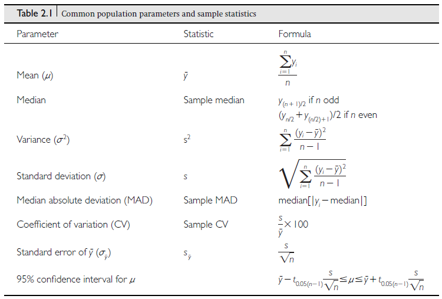
(aus Quinn & Keough 2002)
Statistische Implementierung des Hypothesentestens (am Beispiel des t-Tests)
Wie lässt sich das Hypothesentesten nun mathematisch und statistisch umsetzen. Wir bleiben bei unserer offenen Forschungsfrage „Unterscheiden sich die Sorten A und B in ihren Blütengrössen?“, woraus sich die Forschungshypothese „Sorten A und B unterscheiden sich in ihren Blütengrössen” ergibt. Mit dem Mittelwert µ der Variablen (Blütengrösse) in den jeweiligen Grundgesamtheiten (A und B) lassen sich Forschungshypothese und Nullhypothese mathematisch wie folgt formulieren:
- Ha: µA ≠ µB
- H0: µA = µB oder µA – µB = 0
Für die Überprüfung der H0 gibt es eine Teststatistik (Prüfgrösse) den t-Wert, der wie folgt definiert ist:
\[t = \frac{\left( {\overline{y}}_{A} - {\overline{y}}_{B} \right) - (\mu_{A} - \mu_{B})}{s_{{\overline{y}}_{A} - {\overline{y}}_{B}}}\]
Da für die H0 gilt µA – µB = 0, lässt sich das vereinfachen zu:
\[t = \frac{\left( {\overline{y}}_{A} - {\overline{y}}_{B} \right)}{s_{{\overline{y}}_{A} - {\overline{y}}_{B}}}\]
Die Prüfgrösse t ist also die Differenz der beiden Mittelwerte dividiert durch den Standardfehler der Differenz der beiden Mittelwerte. Wenn also die Differenz der Mittelwerte gross und/oder der Standardfehler dieser Differenz klein ist, so ist t weit von Null entfernt.
Was sagt uns der berechnete t-Wert nun? Um daraus etwas schlussfolgern zu können, müssen wir ihn mit der theoretischen t-Verteilung vergleichen. Für diese gilt:
- Sie ist symmetrisch, mit einem Maximum bei 0.
- Der genaue Kurvenverlauf variiert in Abhängigkeit von den Freiheitsgraden (degrees of freedom = df). Bei vielen Freiheitsgraden, d. h. einer grossen Stichprobengrösse (mehr dazu, wie sich die Stichprobenzahl in Freiheitsgrade übersetzt, folgt später), nähert sicht die t-Verteilung einer Normalverteilung (auch z-Verteilung genannt).
Die allgemeine Konvention in der Statistik ist, dass die Nullhypothese dann verworfen wird, wenn die berechnete Prüfgrösse extremer ist als 95 % aller möglichen Werte bei der gegebenen Stichprobengrösse. Beim t-Test fragt man also, ob der berechnete t-Wert extremer ist als 95 % aller t-Werte der der Stichprobengrösse entsprechenden t-Verteilung. Da unsere Hypothese ungerichtet ist (also ist verschieden und nicht ist grösser/ist kleiner), benötigen wir einen zweiseitigen t-Test. Dieser bestimmt die “kritischen” t-Werte (tc), indem auf beiden Seiten quasi 2.5 % der Fläche des Integrals unter der Wahrscheinlichkeitsverteilung abgeschnitten werden, wie die folgende Abbildung veranschaulicht:
 (aus Quinn & Keough 2002)
(aus Quinn & Keough 2002)
Wenn also der berechnete t-Wert > tc (oder < –tc) ist, dann sind wir hinreichend sicher, dass sich die Mittelwerte nicht nur in der Stichprobe, sondern auch in der Grundgesamtheit unterscheiden.
Fehler I. und II. Art
Wichtig ist, dass es in der physischen Realität nie eine absolute Sicherheit gibt. Wenn wir also wir feststellen, dass die Wahrscheinlichkeit, dass die Nullhypothese zutrifft (oder präziser: dass das vorliegende Ergebnis oder ein extremeres bei Zutreffen der Nullhypothese aufgetreten wäre) kleiner als 5 % ist, gibt es eben doch Fälle gibt, in denen wir fälschlich die Nullhypothese verwerfen, d. h. das Vorliegend eines Effektes bejahen, obwohl er in der Realität (d. h. der Grundgesamtheit) nicht auftritt. Das bezeichnet man als Typ I-Fehler. Umgekehrt kann es aber auch passieren, dass man die Nullhypothese aufgrund des statistischen Tests beibehält, also einen Effekt nicht nachweist, obwohl er in der Realität existiert (Typ II-Fehler). Diese beiden Phänomene sind in der folgenden beiden Abbildungen visualisiert:
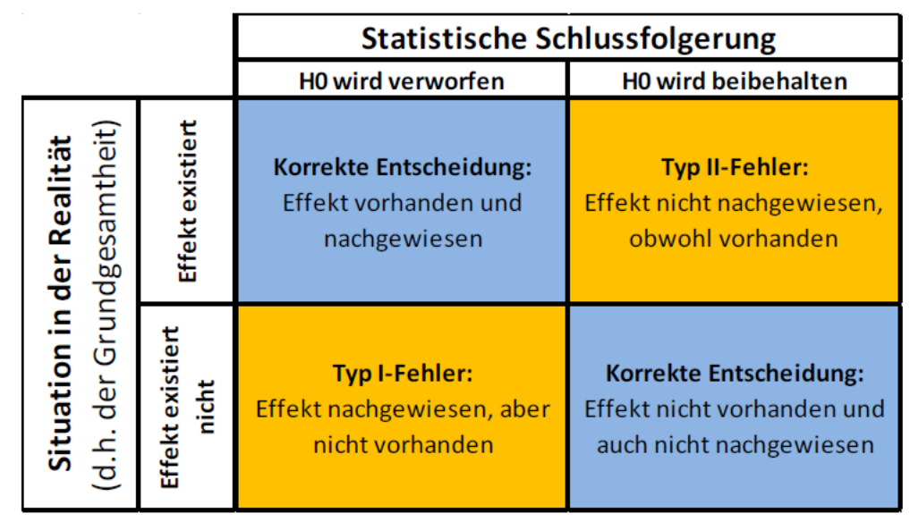
 (aus Quinn & Keough 2002)
(aus Quinn & Keough 2002)
Wie man der zweiten Visualisierung entnehmen kann, steigt die Wahrscheinlichkeit eines Typ II-Fehlers, je weiter man die akzeptierte Wahrscheinlichkeit eines Typ I-Fehlers reduziert. In der Statistik wir im Allgemeinen sehr viel stärker auf die Minimierung von Typ I-Fehlern fokusiert, d. h. man will vermeiden, dass man fälschlich einen Effekt behauptet, der in Realität nicht existiert, während es als weniger problematisch angesehen wird, einen vorhandenen, aber dann sehr schwachen Effekt, nicht nachgewiesen zu haben.
p-Werte und Signifikanzniveaus
Signifikanzniveaus und p-Werte sind zentrale Termini in der am weitesten verbreiteten inferenz-statistischen Schule, der frequentist statistics („Frequentistische Statistik”, aber ich habe den Begriff noch nie im Deutschen gehört). Deren Grundideen sind:
Die beobachteten Werte werden als eine Beobachtung unter vielen möglichen Beobachtungen interpretiert, die zusammen eine Häufigkeitsverteilung ergeben.
Es wird eine einzige wahre Beschreibung der Realität angenommen, der man sich mit bestimmten Irrtumswahrscheinlichkeiten annähern kann
Als statistisch signifikant bezeichnet man Ergebnisse, die unter einem bestimmten p-Wert liegen. Diese Schwellenwerte sind Konventionen und nicht „gottgegeben”. Traditionell werden drei Signifikanzniveaus verwendet (wozu R noch ein viertes hinzugefügt hat, das man mit „marginal signifikant” bezeichnen könnte), die wie folgt notiert werden:
| Notation | Bedeutung | |
|---|---|---|
| *** | p < 0.001 | höchst signifikant; highly significant |
| ** | p < 0.01 | hoch signifikant; very significant |
| * | p < 0.05 | signifikant; significant |
| . | p < 0.1 | marginal signifikant; marginally significant |
Die Schwellenwerte der Signifikanzniveaus (d. h. Schwellenwerte für akzeptierte Typ I-Fehler) werden auch mit α bezeichnet. Was man in einer Arbeit als signifikant betrachtet, sollte man vor Beginn der Untersuchung festlegen und im Methodenteil schreiben („als Signifikanzschwelle verwenden wir α = 0.05” oder „als signifikant sehen wir Ergebnisse mit p < 0.05 an”). Es bietet sich normalerweise an, bei der allgemeinen Konvention von α = 0.05 zu bleiben, es sei denn es sprechen spezifische Gründe dagegen. Ein Grund könnte sein, dass die Verwerfung der Nullhypothese/Annahme der Forschunshypothese schwerwiegende Folgen hätte und man sich daher besonders sicher sein will.
Da sich ober-und unterhalb der genannten Schwellen nichts Fundamentales ändert, sollte man grundsätzlich die exakten p-Werte mit drei Nachkommastellen (z.B. „p = 0.038”bzw. wenn noch niedriger als „p < 0.001”) angeben. Zur besseren Lesbarkeit können zusätzlich die korrespondierenden Signifikanzniveaus angegeben werden.
Es ist wichtig, sich bewusst zu sein, dass statistisch signifikant nicht gleichbedeutend ist mit biologisch bzw. sozialwissenschaftlich bedeutsam. Ein Effekt kann statistisch hochsignikant sein (wg. grosser Stichprobengrösse) und trotzdem inhaltlich bedeutungslos (da die Effektgrösse minimal ist). Umgekehrt kann ein inhaltlich bedeutsamer Effekt evtl. nicht statistisch signifikant nachgewiesen werden, wenn man extrem wenige Replikate hatte.
Mit dem Kriterium „statistische Signifikanz”/p-Wert trennen wir unsere Ergebnisse in einem ersten Schritt in jene, die wir für belastbar halten und jene, die mit grosser Wahrscheinlichkeit „zufällig” („Rauschen in den Daten”, Messungenauigkeit, etc.) zustande gekommen sind. Bei den belastbaren müssen wir dann immer noch ihre Relevanz (also die Effektstärke) beurteilen.
t-Test (für eine metrische Variable im Vergleich von zwei Gruppen)
Bei den beiden vorausgehenden einfachen Tests haben wir jeweils binäre Daten bezüglich ihrer Häufigkeitsverteilung analysiert. Oft haben wir aber metrische Variablen als abhängige Grösse, etwa in unserem Blumenbeispiel:
| Sorte A | Sorte B |
|---|---|
| 20 | 12 |
| 19 | 15 |
| 25 | 16 |
| 10 | 7 |
| 8 | 8 |
| 15 | 10 |
| 13 | 12 |
| 28 | 11 |
| 11 | 13 |
| 14 | 10 |
H0: Die beiden Sorten unterscheiden sich nicht in der Blütengrösse.
Students und Welch t-Test
Als statistisches Verfahren kommt Students t-Test für zwei unabhängige Stichproben zum Einsatz („Student” ist das Pseudonym für William Sealy Gosset, dem Erfinder des Tests, dessen Arbeitsvertrag in der Privatwirtschaft das Publizieren von Ergebnissen verbot).
\[ t = \frac{\bar{X}_1-\bar{X}_2}{s_p\times \sqrt{\frac{1}{n_1}+\frac{1}{n_2}}} \]
Wobei \(s_p\) der gepoolten Varianz entspricht:
\[ s_p = \sqrt{\frac{(n_1-1)s^{2}_{X_{1}}+(n_2-1)s^{2}_{X_{2}}))}{n_1+n_2-2}} \]
Der berechnete t-Wert wird mit der t-Verteilung für (n1 – 1) + (n2 – 1) Freiheitsgraden verglichen. Der klassische t-Test setzt Normalverteilung und gleiche Varianzen voraus:
t.test(blume$a,blume$b, var.equal=T)Wenn Varianzgleichheit nicht gegeben ist, verwendet man Welch’ t-Test. Dieser approximiert die Freiheitsgrade mit der Welch-Satterthwaite-Gleichung. Er setzt weiterhin Normalverteilung voraus, benötigt aber keine gleichen Varianzen. Welch’ t-Test kann/sollte also immer verwendet werden, wenn keine vorherigen Tests auf Varianzgleichheit durchgeführt werden und ist daher Standard (default) in R:
\[ t = \frac{\bar{X}_1 - \bar{X}_2}{s\frac{}{\Delta}} \]
Wobei
\[ s\frac{}{\Delta} = \sqrt{\frac{s^2_1}{n_1}+\frac{s^2_2}{n_2}} \]
t.test(blume$a,blume$b, var.equal=F)
t.test(blume$a,blume$b) Ein- und zweiseitiger t-Test
Bislang war unsere Hypothese, dass irgendein Unterschied vorliegt (was, wie oben dargelegt, keine adäquate Forschungshypothese ist, sondern die implizite Hypothese, wenn man eine offene Frage formuliert, aber keine klare Theorie hat). Wenn es eine Theorie gibt, aus der sich eine klare Vorhersage treffen lässt, so enthält diese normalerweise auch eine Aussage über die Richtung des Effekts, also ob die Blüten von A grösser als jene von B sind oder umgekehrt. Dann verwendet man einen einseitigen t-Test, denn man je nach Richtung der Hypothese mit greater oder less spezifizieren muss. Bildlich gesprochen werden beim gängigen Signifikanzniveau von α = 0.05 beim beidseitigen t-Test je 2.5 % der Integralfläche links und rechts „abgeschnitten”, beim einseitigen t-Test dagegen 5 % auf einer Seite. Wenn der berechnete t-Wert in einem der abgeschnittenen „Dreiecke” liegt, ist das Ergebnis signifikant.
 (aus Quinn & Keough 2002)
(aus Quinn & Keough 2002)
t.test(blume$a,blume$b) # zweiseitig
t.test(blume$a,blume$b, alternative="greater") # einseitig
t.test(blume$a,blume$b, alternative="less") # einseitigGepaarter und ungepaarter t-Test
Bislang haben wir angenommen, dass die Individuen der beiden Sorten unabhängig voneinander jeweils zufällig ausgewählt wurden. Dann ist ein ungepaarter t-Test (default-Einstellung in R) richtig. Wenn jedoch je zwei Messwerte zusammengehören, etwa wenn je eine Pflanze der Sorten A und B gemeinsam in einem Topf wuchsen , so kommt ein gepaarter t-Test zur Anwendung. Da dieser mehr „Informationen” zur Verfügung hat, hat er mehr statistische „power”, wird i. d. R. also zu stärker signifikanten Ergebnissen führen:
t.test(blume$a,blume$b, paired=T) #gepaarter t-TestBinomial-Test (für die Häufigkeitsverteilung einer binomialen Variablen)
Der Binomial-Test ist eines der einfachsten statistischen Verfahren überhaupt. Er testet, ob die Verteilung einer binären Variable von einer Zufallsverteilung abweicht. Eine binomiale (binäre) Variable ist eine, die zwei mögliche Zustände hat, etwa lebend/tot, männlich/weiblich oder besser/schlechter. Wenn das Ergebnis zufällig wäre, müssten in der Stichprobe beide Ausprägungen ungefähr gleich häufig vertreten sein. Folglich testet der Binomialtest, wie wahrscheinlich es ist, dass die vorgefundene Häufigkeitsverteilung in der Stichprobe zustande gekommen wäre, wenn beide Zustände gleich häufig sind. Wenn diese Wahrscheinlichkeit < 0.05 ist, nimmt man in der Statistik gewöhnlich an, dass der Unterschied in der Stichprobe einem realen Unterschied in der Grundgesamtheit ist.
Betrachten wir den Frauenanteil im schweizerischen Nationalrat als Beispiel. Im Jahr 2019 waren 84 von 200 Mitgliedern weiblich (42%). Nehmen wir in guter Näherung an, dass im Stimmvolk das Geschlechterverhältnis 1:1 ist: Kann die Abweichung von 50 % unter den Mitgliedern noch durch Zufall erklärt werden oder deutet das auf eine «Bevorzugung» von Männern bei der Kandidat:innenaufstellung und im Wahlvorgang hin. Die Antwort liefert der Binomialtest, dem man die Zahl der „Erfolge” (weiblich: 82) und die Stichprobengrösse (200) übergeben muss:
binom.test(82,200) Exact binomial test
data: 84 and 200
number of successes = 84, number of trials = 200, p-value = 0.02813
alternative hypothesis: true probability of success is not equal to 0.5
95 percent confidence interval:
0.3507439 0.4916638
sample estimates:
probability of success
0.42Der Unterschied ist also signifikant (p < 0.05), wir können die Nullhypothese («keine Bevorzugung von Männern») also verwerfen. Der Output sagt uns auch noch, dass ohne Bevorzugung / Benachteiligung eines Geschlechts der gegenwärtige Frauenanteil im Nationalrat nur zustande hätte kommen können, wenn der Frauenanteil im Stimmvolk zwischen 35 % und 49 % läge. Da dieser Bereich 50 % (also den der Nullhypothese ensprechenden Wert) nicht einschliesst, ist es logisch, dass diese verworfen wird. Der Test ist „symmetrisch”: Wir können also statt der Anzahl der weiblichen Nationalratsmitglieder auch jene der männlichen eingeben und bekommen den gleichen p-Wert
binom.test(116,200) Exact binomial test
data: 116 and 200
number of successes = 116, number of trials = 200, p-value = 0.02813
alternative hypothesis: true probability of success is not equal to 0.5
95 percent confidence interval:
0.5083362 0.6492561
sample estimates:
probability of success
0.58Chi-Quadrat- bzw. Fishers Test (für die Assoziation zweier binomialer Variablen)
Die Frage beim Assoziationstest ist eine ähnliche wie beim Binomialtest. Wiederum geht es um binomiale Variablen, dieses Mal aber nicht um eine einzige, sondern um zwei an denselben Objekten erhobene Variablen, deren Zusammenhang man wissen will.
Im folgenden Beispiel wollen wir wissen, ob die Augenfarbe und die Haarfarbe von Personen miteinander zusammenhängen. Die einfachste Form des Assoziationstests setzt zwei binomiale/binäre Variablen voraus, wir müssen also z. B. grüne Augen ausschliessen oder mit einer der beiden anderen Augenfarben zusammenfassen. Unsere Beobachtungsergebnisse von 114 Personen könnten wie folgt aussehen:
| Blaue Augen | Braune Augen | |
|---|---|---|
| Helle Haare | 38 | 11 |
| Dunkle Haare | 14 | 51 |
Sind diese Werte so erwartbar unter der Nullhypothese, dass Augenfarbe und Haarfarbe unabhängig voneinander sind? Anders als beim Binomialtest oben ist die Nullhypothese jedoch nicht die Gleichverteilung aller Merkmale bzw. Merkmalskombinationen. Vielmehr gehen wir von der gegebenen Häufigkeit der vier Einzelmerkmale aus. Wir müssen also berechnen, mit welcher Wahrscheinlichkeit die Kombination blaue Augen – helle Haare unter den 114 ProbantInnen auftreten sollte, wenn beide Merkmale unabhängig voneinander sind. Das geht folgendermassen:
| Blaue Augen | Braune Augen | Zeilen Total | |
|---|---|---|---|
| Helle Haare | \(\frac{49\times 52}{114}\) | \(\frac{49\times 62}{114}\) | 49 |
| Dunkle Haare | \(\frac{64\times 52}{114}\) | \(\frac{65\times 62}{114}\) | 65 |
| Reihen Total | 52 | 62 | 114 |
| Blaue Augen | Braune Augen | Zeilen total | |
|---|---|---|---|
| Helle Haare | 22.35 | 26.65 | 49 |
| Dunkle Haare | 29.65 | 33.35 | 65 |
| Reihen Total | 52 | 62 | 114 |
Die beobachteten Werte (z. B. 38 Personen mit blauen Augen/hellen Haare) unterscheiden sich deutlich von den erwarteten Werten unter der Nullhypothese (22.35 Personen). Aber ist das auch statistisch signifikant?
Chi-Quadrat-Test
Der traditionelle statistische Test für diese Frage ist Pearsons Chi-Quadrat-Test (auch Χ2-Test geschrieben). Wie t ist Χ2 eine Teststatistik, die abhängig von den Freiheitsgraden (df) einer ganz bestimmten Kurve folgt.
\[ X^2= \sum{\frac{(O-E)^2}{E}} \]
Wobei \(O = \text{observed}\), \(E = \text{expected}\)
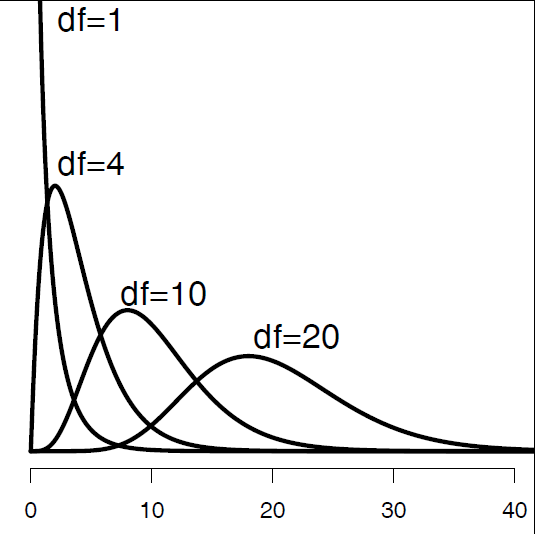
(aus Quinn & Keough 2002)
Wir können den Χ2-Wert in unserem Fall einfach händisch berechnen:
| O | E | \((O-E)^2\) | \(\frac{(O-E)^2}{E}\) | |
|---|---|---|---|---|
| Helle Haare & blaue Augen | 38 | 22.35 | 244.92 | 10.96 |
| Helle Haare & braune Augen | 11 | 26.65 | 244.92 | 9.19 |
| Dunkle Haare & blaue Augen | 14 | 29.65 | 244.92 | 8.26 |
| Dunkle Haare & braune Augen | 51 | 35.35 | 244.92 | 6.93 |
| X2 | 35.33 |
Ist Χ² = 35.33 nun signifikant oder nicht? Dazu müssen wir noch die Freiheitsgrade berechnen und das Signifikanzniveau festlegen:
- Freiheitsgrade: \((\text{Spalten}-1)\times(\text{Zeilen}-1)=(2-1)\times(\text2-1)=1\)
- Signifikanzlevel: z.B. \(\alpha = 0.05\)
Traditionell hätte man den kritischen Wert für diese Kombination in einer gedruckten Tabelle nachgeschlagen. Wir fragen einfach R, wobei wir 1 – α (in unserem Fall 1-0.05) eingeben müssen, da wir wissen wollen, ob wir im äussersten rechten Teil der Verteilungskurve liegen, also extremer als 95 % der Werte unter der Nullhypothese keiner Assoziation.
qchisq(0.95,1)3.841495Unser berechneter Χ²-Wert (35.33) ist viel grösser als der kritische Wert (3.84), also gibt es eine Assoziation zwischen den Variablen (d. h. die Kombinationen blau/hell und braun/dunkel sind überproportional häufig). Wenn wir, wie oben empfohlen, einen präzisen p-Wert für die Assoziation wollen, erhalten wir ihn folgendermassen (beachte, dass chisq.test eine Matrix als Argument benötigt):
count <- matrix(c(38,14,11,51), nrow = 2)
chisq.test(count)Pearson's Chi-squared test with Yates' continuity correction
data: count
X-squared = 33.112, df = 1, p-value = 8.7e-09Die Assoziation ist also höchst signifikant (p < 0.001).
Fishers exakter Test
Für kleine Erwartungswerte in den Zellen (< 5) ist der Chi-Quadrat-Test nicht zuverlässig. Dafür gibt es Fishers exakten Test.
count2 <- matrix(c(3,5,9,1),nrow=2)
fisher.test(count2) Fisher's Exact Test for Count Data
data: count
p-value = 0.04299
alternative hypothesis: true odds ratio is not equal to 1
95 percent confidence interval:
0.001280876 1.102291244
sample estimates:
odds ratio
0.08026151Man kann/sollte Fishers exakten Test jedoch grundsätzlich verwenden, da er mit der heutigen Rechenleistung von Computern kein Problem mehr darstellt. Angewandt auf unseren Haarfarben / Augenfarben-Datensatz ergibt sich:
count
[,1] [,2]
[1,] 38 11
[2,] 14 51fisher.test(count)
Fisher's Exact Test for Count Data
data: count
p-value = 2.099e-09
alternative hypothesis: true odds ratio is not equal to 1
95 percent confidence interval:
4.746351 34.118920
sample estimates:
odds ratio
12.22697Wie man der Ausgabe entnehmen kann ist die Teststatistik hier die sogenannte odds ratio, ein Term für den es keine gute deutsche Übersetzung gibt. Sie bezeichnet die Wahrscheinlichkeit des Eintretens geteilt durch die Wahrscheinlichkeit des Nichteintretens. Aus der Umgangssprache und Wettspielen sind wir bereits vertraut mit odds ratios: «50:50-Chancen» bezeichnen nichts anderes als eine odds ratio von 1 (50 / 50 = 1). Bei einem Assoziationstest ist entspricht der odds ratio die Multiplikation der Wahrscheinlichkeiten auf der einen Diagonalen geteilt durch jene der anderen Diagonalen, also (38 x 51) / (14 x 11).
Wie berichte ich statistische Ergebnisse?
Welche relevanten Informationen benötige ich und wo finde ich sie?
Die Ergebnisausgaben in R sind mitunter umfangreich. Da kommt es darauf an, effizient herausfiltern zu können, was welche Information darin bedeutet und welche davon man in einer wissenschaftlichen arbeit braucht. Hier ist die Ausgabe des vorhergehenden gepaarten t-Tests:
Paired t-test
data: blume$a and blume$b
t = 3.4821, df = 9, p-value = 0.006916
alternative hypothesis: true difference in means is not equal to 0
95 percent confidence interval:
1.366339 6.433661
sample estimates:
mean of the differences
3.9Welche Informationen davon werden benötigt:
- Name des Tests (Methode)
- Signifikanz/p-Wert (Verlässlichkeit des Ergebnisses)
- Effektgrösse und -richtung (unser eigentliches Ergebnis!)
- ggf. Wert der Teststatistik und Freiheitsgrade(„Zwischenergebnisse”)
Werfen wir noch einmal einen Blick auf den Output von R:
Paired t-test
data: blume$a and blume$b
t = 3.4821, df = 9, p-value = 0.006916
alternative hypothesis: true difference in means is not equal to 0
95 percent confidence interval:
1.366339 6.433661
sample estimates:
mean of the differences
3.9Wichtig ist es, bei aller „Begeisterung” für die p-Werte nicht unser eigentliches Ergebnis zu vergessen, d. h. die Antwort auf die Frage ob die Blüten von A oder von B grösser sind und wenn ja wie stark (blau). Ob Freiheitsgrade und der Wert der Teststatistik angegeben werden müssen, darüber gehen die Geschmäcker auseinander. Wenn man die Daten korrekt in R eingegeben hat, spezifiziert R die Freiheitsgrade automatisch und bei gegebenen Freiheitsgraden ist die Beziehung von t zu p eindeutig. Deshalb genügt es m. E. p anzugeben. (Aber wenn der Betreuer oder die Editorin auch noch t und df haben wollen, dann sollte man sie parat haben). Ein adäquater Satz im Ergebnisteil, der den obigen R output zusammenfasst, lautet daher:
Oder auf Englisch:
Text, Tabelle oder Abbildung?
Hier kommen ein paar wichtige Vorgaben und Empfehlungen:
- Jedes Ergebnis nur 1x ausführlich darstellen, entweder als Abbildung, in einer Tabelle oder als Text
- Wenn als Abbildung oder Tabelle, dann im Text mit einem zusammenfassenden Statement darauf verweisen, das nicht alle Details wiederholt
- Signifikante und nicht signifikante Ergebnisse berichten
- Gängige Strategie:
- Abbildungen: für die wichtigsten signifikanten Ergebnisse
- Tabellen: für die weiteren signifikanten Ergebnisse
- Nur Text: für die nicht signifikanten Ergebnisse
Abbildungen in wissenschaftlichen Arbeiten
Zumindest für die wichtigsten signifikanten Ergebnisse produzieren wir normalerweise Abbildungen. Dabei ist es wichtig, die folgenden Prinzipien zu beherzigen:
- Abbildungen (und Tabellen) sollten ohne den zugehörigen Text informativ sein, d. h. normalerweise p-Werte in der Abbildung/Tabelle bzw. Unter-/Überschrift angeben
- Achsen sind verständlich beschriftet (ausgeschriebene Variablennamen mit Einheit)
- Keine Abbildungsüberschrift (es gibt die Legende in der Abbildungsunterschrift)
- Keine überflüssigen Elemente (z. B. Rahmen, farbiger Hintergrund,horizontale und vertikale Linien)
- Klarer Kontrast, ausreichende Linienstärke und Schriftgrösse.
Abbildungen mit „base R” oder mit ggplot2?
Im Folgenden visualisiert mit den Boxplots, die zum t-Test gehören.
In „base R” geht das folgendermassen:
boxplot(size~cultivar,data=blume.long)
In ggplot2 geht es folgendermassen (mit default-Einstellungen):
library(ggplot2)
ggplot(blume.long, aes(cultivar,size)) + geom_boxplot()
Gut ist, dass die Achsen automatisch beschriftet wurden. Störend ist der graue Hintergrund (reduziert Kontrast) und die weissen Gitternetzlinien (übeflüssig und dank des zu geringen Kontrasts eh kaum zu sehen).
Man kann das in ggplot2 durch Wahl des vordefinierten theme_classic optimieren:
ggplot(blume.long, aes(cultivar,size)) + geom_boxplot()+
theme_classic()
Das Ergebnis ist insgesamt OK, allerdings sind die Linien zu fein und die Schrift zu klein – jeweils relativ zur Gesamtgrösse der Abbildung.
Man kann weiter optimieren durch Hinzufügen weiterer Steuerelemente:
ggplot(blume.long, aes(cultivar,size)) +
geom_boxplot(size=1) +
theme_classic() +
theme(axis.line = element_line(size=1), axis.ticks = element_line(size=1),axis.text = element_text(size = 20), axis.title =element_text(size = 20))
Jetzt passt es… Einzig könnte man noch den p-Wert einblenden und die Achsenbeschriftungen jeweils mit einem Grossbuchstaben beginnen.
Ob man die Grafiken mit ggplot2 oder base R gestaltet, sei jedem selbst überlassen. Beides hat Vor- und Nachteile. Was man aber vermeiden sollte, sind die Ausgaben von ggplot2 mit default-Einstellungen, da diese gängigen Standards für gute Grafiken widerspechen. Hier noch einmal zusammengefasst die Vor- und Nachteile beider Systeme:
Base R:
- Einfache Syntax, daher geeignet für schnelles Plotten
- ABER: Syntax variiert zwischen verschiedenen Plottbefehlen
- ABER: «Finetunen» von Grafiken oftmals umständlich oder gar nicht möglich
- Geeignet für Vektoren (ggplot2 braucht dataframes o.ä)
- Geeignet für das Plotten von Modellen (plot(lm())
- Einfaches Plotten der Modelldiagnostik (plot(summary())
Vorteile ggplot2:
- Leistungsfähige, universelle Syntax, daher leicht anpassbar an den Bedarf, wenn man das Prinzip erst einmal verstanden hat
- Viele Funktionen “out of the box”
- Einfachere Gestaltungsmöglichkeit (Farbskalen usw.)
Zusammenfassung
- Wissenschaftliche Forschung zielt in der Regel entweder auf das Generieren oder das Testen von Hypothesen.
- Inferenzstatistik ist das Set statistischer Verfahren (Tests), das sowohl für das Testen als auch das Generieren von Hypothesen) verwendet wird.
- Inferenzstatistik ist notwendig, um zu bestimmen, wie wahrscheinlich ein beobachtetes Muster durch angenommenen Einflussgrössen (Variablen) und nicht durch (a) Messfehler oder (b) andere «Störgrössen» hervorgerufen wurde.
- Der p-Wert ist die Wahrscheinlichkeit eines Typ I-Fehlers, d. h. einen Effekt zu berichten, wo keiner ist; nach üblicher Konvention wird ein Effekt dann als hinreichend sicher (signifikant) angesehen, wenn p < 0.05.
- Mit einem Chi-Quadrat-Test (oder besser mit Fishers exaktem Test) kann man auf eine Assoziation zwischen zwei kategorialen Variablen testen.
- Mit einem t-Test kann man auf Unterschiede in den Mittelwerten einer metrischen Variablen zwischen zwei Gruppen testen.
Weiterführende Literatur
- **Crawley, M.J. 2015. *Statistics – An introduction using R. 2nd ed. John Wiley & Sons, Chichester, UK: 339 pp.
- Chapter 1 – Fundamentals
- Chapter 6 – Two Samples
- Quinn, G.P. & Keough, M.J. 2002. Experimental design and data analysis for biologists. Cambridge University Press, Cambridge, UK: 537 pp.
Statistik 2: Einführung in lineare Modelle
In Statistik 2 lernen die Studierenden die Voraussetzungen und die praktische Anwendung „einfacher” linearer Modelle in R (sowie teilweise ihrer „nicht-parametrischen” bzw. „robusten” Äquivalente). Am Anfang steht die Varianzanalyse (ANOVA) als Verallgemeinerung des t-Tests, einschliesslich post-hoc-Tests und mehrfaktorieller ANOVA. Dann geht es um die Voraussetzungen parametrischer (und nicht-parametrischer) Tests und Optionen, wenn diese verletzt sind. Dann beschäftigen wir uns mit Korrelationen, die auf einen linearen Zusammenhang zwischen zwei metrischen Variablen testen, ohne Annahme einer Kausalität. Es folgen einfache lineare Regressionen, die im Prinzip das Gleiche bei klarer Kausalität leisten. Abschliessend besprechen wir, was die grosse Gruppe linearer Modelle (Befehl lm in R) auszeichnet.
Lernziele
Ihr…
- wisst, welche Voraussetzungen parametrische (und nicht-parametrische) Tests haben und welche Alternativen euch bei wesentlichen Verletzungen zur Verfügung stehen;
- könnt eine ANOVA in R durchführen, versteht ihre Ergebnisse und könnt diese adäquat in Text und Abbildungen dokumentieren;
- habt den Unterschied zwischen Korrelationen und Regressionen verstanden und könnt sie in R implementieren;
- kennt die Voraussetzungen und Gemeinsamkeiten aller linearen Modelle; und
- wisst, warum es nach der Berechnung eines linearen Modelles essenziell ist, die Residuen zu checken, und könnt die diagnostischen Grafiken von R dazu interpretieren.
Varianzanalyse (ANOVA): Einstieg
Einfaktorielle Varianzanalyse (One-Way ANOVA)
Eine ANOVA (Analysis of variance) ist die Verallgemeinerung des t-Tests für mehr als zwei Gruppen (Factor levels). Auch hier wollen wir wissen, ob/wie sich die Mittelwerte der abhängigen Variablen zwischen den Gruppen unterscheiden. Varianzanalyse heisst das Verfahren, weil der statistische Test zur Beantwortung der Frage das Verhältnis zweier Varianzen testet. Was es mit den zwei Varianzen auf sich hat, ist im Folgenden erklärt.
Gehen wir zurück zu unserem Blumenbeispiel. Die Idee der ANOVA ist, dass die Mittelwerte der Blütengrössen der beiden Sorten dann verschieden sind, wenn die Summe der Abweichungen (Residuen) vom Gesamtmittelwert „signifikant” grösser ist als die Summe der Abweichungen von den Sortenmittelwerten. Das ist in der folgenden Abbildung veranschaulicht. Die Punkte stellen die 20 Messwerte der Blütengrössen dar, wobei sie in der rechten Teilabbildung nach Sorten gruppiert sind. Der Gesamtmittelwert links und die beiden Sortenmittelwerte rechts sind als horizontale Linien dargestellt. Die vertikalen Linien sind die Residuen, als der Anteil der Varianz, welcher durch das jeweilige statistische Modell nicht erklärt wird. Das Modell links ist, dass die Blüten einheitlich gross sind, unabhängig von der Sorte, während das komplexere Modell rechts unterschiedliche Mittelwerte abhängig von der Sorte annimmt.

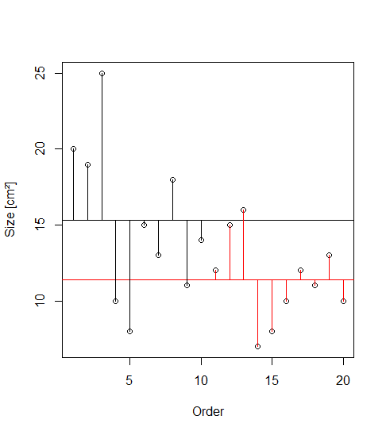
Varianz ist ein Mass für die Streuung von Werten um ihren Mittelwert. Mathematisch wird die Varianz wie folgt berechnet :
Abweichungsquadrate sind dabei die quadrierten Werte der grünen (bzw. schwarzen und roten) vertikalen Linien in der obigen Abbildung. Die Distanzen werden quadriert, so dass negative Abweichungen gleichermassen zählen. Würde man nur die unquadrierten Werte aufsummieren, wäre das Ergebnis immer 0, da die horizontale Linie (der Mittelwert) ja genaus gelegt wurde, dass die positiven und negativen Abweichungen betragsmässig gleich sind. Ein zentraler Punkt der Varianzanalyse ist, dass sich die Gesamtsumme der Abweichungsquadrate (Total sum of squares) als die Summe zweier Teile (SSE und SSA) darstellen lässt:
Schauen wir das zunächst beim Blumen-Datensatz an. Dazu müssen wir die Daten, die wir bislang im sogenannten wide format hatten (eine Spalte für Blütengrösse A und eine zweite für Blütengrösse B) im long format bereitstellen (eine Spalte für die Sorte und eine für die Blütengrösse). Generell ist das long format empfehlenswert, da viel universeller und von den meisten statistischen Verfahren verlangt.
head(blume.long) cultivar size
1 a 20
2 a 19
3 a 25
4 a 10
[…]
11 b 8
12 b 12
13 b 9Schauen wir uns zunächst noch einmal das Ergebnis als „normalen” t-Test an:
t.test(size~cultivar, blume.long, var.equal=T) Two Sample t-test
data: size by cultivar
t = 2.0797, df = 18, p-value = 0.05212
alternative hypothesis: true difference in means between group a and group b is not equal to 0
95 percent confidence interval:
-0.03981237 7.83981237
sample estimates:
mean in group a mean in group b
15.3 11.4Nun nehmen wir dieselben Daten und analysieren sie mit einer Varianzanalyse. Der Befehl dazu ist aov (was für analysis of variance steht). Man kann sich die Ergebnisse der ANOVA mit summary und summary.lm anzeigen lassen und bekommt jeweils unterschiedliche Informationen (die wir beide benötigen):
summary(aov(size~cultivar)) Df Sum Sq Mean Sq F value Pr(>F)
cultivar 1 76.0 76.05 4.325 0.0521 .
Residuals 18 316.5 17.58 summary.lm(aov(size~cultivar))[…]
Coefficients:
Estimate Std. Error t value Pr(>|t|)
(Intercept) 15.300 1.326 11.54 9.47e-10 ***
cultivarb -3.900 1.875 -2.08 0.0521 . Beim ersten Output (summary) sehen wir eine typische „ANOVA-Tabelle” wie man sie als Ergebnis linearer Modelle erhält. Die Bedeutung der Abkürzungen ist wie folgt:
- Df = Degrees of freedom (Freiheitsgrade)
- Sum Sq = Sum of squares (Summe der Abweichungsquadrate)
- Mean Sq = Sum of squares / degrees of freedom (Quotient der beiden Werte)
- F value = Mean Sq (Treatment) / Mean Sq (Residuals) (Quotient derbeiden mittleren Abweichungsquadrate)
- Pr(>F) = Probability to obtaine a more extreme F value under the null hypothesis (p-Wert)
Der F-Wert ist das Verhältinis der durch die Variable und die Residuen erklärten Varianzen (Mean squares), also 76.05 / 17.58 = 4.33. Der F-Wert (4.33) entsprichtdem quadrierte t-Wert (–2.08) aus der unteren Tabelle. Der p-Wert (0.052) in der obigen Tabelle ist also genau der gleiche wie im t-Test, was die Äquivalenz von ANOVA und t-Test zeigt. Dieser p-Wert steht für die Nullhypothese, dass sich die beiden Sorten nicht in ihrer Blütengrösse unterscheiden.
Derselbe p-Wert taucht im summary.lm-Output unten in der zweiten Zeile auf. Aber für was steht der extrem kleine p-Wert in der ersten Zeile des summary.lm-Outputs (9.47 x 10–10)? In der Zeile steht (Intercept), also Achsenabschnitt. Hier ist der vorhergesagte Mittelwert für die erste Sorte (Cultivar a) gemeint. Die Nullhypothese zu dieser Zeile ist, dass die Blütengrösse dieser Sorte = 0 ist. Da Blütengrössen immer positive Werte haben (nie negativ und für eine existierende Blüte auch nie 0), ist das keine sinnvolle/relevante Nullhypothese. In den allermeisten Fällen bezieht sich der p-Wert in der ersten Zeile eines summary.lm-Outputs auf eine unsinnige/irrelevante Nullhypothese und wir können/müssen ihn ignorieren. Eine weitere wichtige Information liefert uns die zweite Tabelle aber noch: die Effektgrösse und -richtung. Dazu müssen wir in die Spalte Estimates schauen, welche die sogenannten Parameterschätzungen enthält. Im Falle einer ANOVA enthält die (Intercept)-Zeile den geschätzten Mittelwert für die alphabetisch erste Kategorie (bei uns also Cultivar a), währen das Estimate in der Zeile cultivarb für den Unterschied im Mittelwert von Cultivar b vs. Cultivar a steht, hier steht also die biologisch relevante Information, sprich: die Blüten von Cultivar b sind im Mittel 3.9 cm² kleiner als jene von Cultivar a. Allerdings sind wir uns dieser Aussage nicht besonders sicher, da sie statistisch nur marginal signifikant ist (p = 0.052).
Wenn wir eine «echte» ANOVA mit drei oder mehr Kategorien durchführen, die also nicht mehr mit dem t-Test analysiert werden kann, sieht der Output vergleichbar aus, nur hat sich die Zahl der Freiheitsgrade in der ersten Zeile erhöht (immer Zahl der Kategorien – 1, bei 3 Kategorien also 2).
summary(aov(size~cultivar)) Df Sum Sq Mean Sq F value Pr(>F)
cultivar 2 736.1 368.0 18.8 7.68e-06 ***
Residuals 27 528.6 19.6 In diesem Fall gibt es also höchstsignifikante Unterschiede in der Blütengrösse zwischen den drei Sorten. Wir könnten das Ergebnis kurz und prägnant wie folgt wiedergeben:
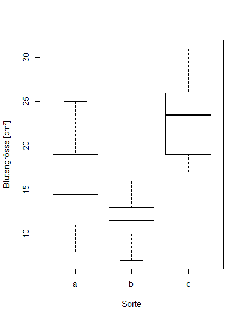
Abb. 1. Boxplots der Blütengrössen der drei verglichenen Cultivare a, b und c (jeweils n = 10).
Zwei Anmerkungen: (1) Bei drei und mehr Kategorien kann man im Text nicht mehr effizient schreiben, welche Sorte sich wie von welcher anderen unterscheidet, deshalb bietet sich hier eher eine Visualisierung an (sofern die ANOVA signifikant ist). (2) Wenn man den F-Wert angeben möchte, so muss man im Subskript nachgestellt die Freiheitsgrade im Zähler (2) und im Nenner (27) angeben, die man der ANOVA-Tabelle entnehmen kann.
Post-hoc-Test (Tukey)
In der vorhergehenden ANOVA wissen wir nun, dass es insgesamt ein signifikantes Muster gibt, dass also nicht alle drei Sorten der gleichen Grundgesamtheit angehören. Was wir nicht wissen, ist, welche Sorte sich von welcher anderen unterscheidet, und ggf. wie stark. Wenn die ANOVA insgesamt signifikant ist, muss das längst nicht heissen, dass jede Sorte sich von jeder anderen unterscheidet. Nun könnte man auf die Idee kommen, einfach für jedes Sortenpaar einen t-Test durchzuführen. Das Problem ist, dass man dann u. U. ziemlich viele Tests mit denselben Daten macht, und da summieren sich die Typ I-Fehlerraten schnell auf, sprich: bei vielen Tests werden rein zufällig manche ein signifikantes Ergebnis ergeben (mit α = 0.05 wird 5 % Irrtum zugelassen, d. h. im Durchschnitt liefert jeder zwanzigste Test ein falsch-positives Ergebnis). Um diesem Problem Rechnung zu tragen, gibt es sogenannte posthoc-Tests, die nach einer signifikanten ANOVA angewandt werden. Wenn die ANOVA nicht signifkant war, darf dagegen kein posthoc-Test angewandt werden! Der gängigste posthoc-Test ist jener von Tukey und findet sich u. a. im agricolae-Paket:
library(agricolae)
aov.1 <- aov(size~cultivar, data=blume2)[…]
Comparison between treatments means
difference pvalue signif. LCL UCL
a - b 3.9 0.1388 -1.006213 8.806213
a - c -8.0 0.0011 ** -12.906213 -3.093787
b - c -11.9 0.0000 *** -16.806213 -6.993787Das Ergebnis sagt uns, dass sich c von a und c von b, nicht aber b von a signifikant unterscheiden. Bei nur drei Kategorien kann man das noch so formulieren, bei vier, fünf oder mehr wird es aber schnell langatmig und komplex. Das lässt sich mit sogenannten homogenen Gruppen lösen. Hier versieht man die Kategorien mit gleichen Buchstaben, die sich nicht signifikant voneinander unterscheiden, ggf. kann dann eine Kategorie auch mehrere Buchstaben tragen. In unserem Fall wäre die Lösung also:
- Cultivar a: A
- Cultivar b: A
- Cultivar c: B
Diese Buchstaben kann man in die Ergebnisabbildung plotten oder als Superskript in einer Ergebnistabelle der Mittelwerte. Die folgende Abbildung zeigt ein Beispiel. Hier unterscheiden sich nur High und Low signifikant voneinander, da dies das einzige Paar ist, das keine gemeinsamen Buchstaben hat:
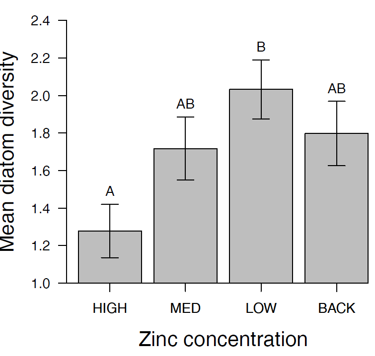
(aus Quinn & Keough 2002)
Hier ist noch gezeigt, wie man die Beschriftung in die Boxplots bekommt:
aov.2 <- aov(Sepal.Width ~ Species, data=iris)
HSD.test(aov.2, "Species", console=T)Treatments with the same letter are not significantly different.
Sepal.Width groups
setosa 3.428 a
virginica 2.974 b
versicolor 2.770 cDie Buchstaben aus dem Output muss man dann manuell zur jeweiligen Art plotten (Reihenfolge der Arten beachten!)
boxplot(Sepal.Width ~ Species, ylim=c(2,5), data=iris)
text(1, 4.8, "a")
text(2, 4.8, "c")
text(3, 4.8, "b")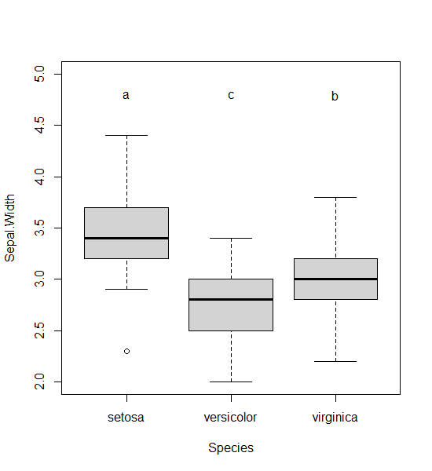
Voraussetzung statistischer Verfahren
In Statistik 1 wurde kurz erwähnt, dass jeder statistische Test auf bestimmten Annahmen bezüglich der Werteverteilung in der Grundgesamtheit beruht. Beim klassischen t-Test nach Student sind das die Normalverteilung und die Varianzhomogenität.
Parametrische vs. nicht-parametrische Verfahren
Verfahren, die auf dem folgenden gängigen Set von Voraussetzungen beruhen, werden als parametrische Verfahren bezeichnet. Es sind dies zugleich die „linearen Modelle” (doch zu diesem Begriff später mehr):
Dem gegenüber gestellt werden so-genannte „nicht-parametrische” Verfahren. Der Begriff ist allerdings sehr irreführend, da nicht-parametrische Verfahren nicht etwa keine Voraussetzungen haben, sondern meist nur geringfügig schwächere als parametrische Verfahren. Die Voraussetzungen für die Anwendung gängiger nicht-parametrischer Verfahren sind:
Diese beiden Listen, weisen auf zwei weitverbreitete Irrtümer in der Statistik hin, die in älteren Statistikbüchern regelmässig falsch dargestellt wurden und die auch heute noch in Statistikursen an Hochschulen oft falsch gelehrt werden:
In der Folge ist zu beobachten, dass vielfach vorschnell und unnötig auf „nicht-parametrische” Verfahren ausgewichen wird. Dagegen sprechen viele Gründe dafür, in fast allen Fällen mit parametrischen Verfahren zu arbeiten:
Wie testet man die Voraussetzungen? (klassischer Weg)
Der „klassische” (aber nicht zielführende!!!) Rat in vielen Statistikbüchern/-kursen ist die Anwendung statistischer Tests für Normalität und Varianzhomognität. Für die Normalität (beachten, dass die Residuen, nicht dir Rohdaten getestet werden müssen, also im Fall einer ANOVA die Werte jeder Kategorie für sich). Es gibt u.a. den Kolmogorov-Smirnov-Test (mit Lillefors-Korrektur) und den Sharpiro-Wilks-Test:
shapiro.test(blume$b)Für das Testen der Varianzhomogenität gibt es u.a. den F-Test zur Varianzhomogenität und den Levene-Test (im Paket car):
var.test(blume$a, blume$b)
library(car)
leveneTest(blume$a, blume$b,center = mean)Wenn die p-Werte dieser Tests < 0.05 sind, dann liegt eine statistisch signifikante Abweichung von der jeweiligen Voraussetzung vor. Die klassische Konsequenz war, dann auf ein nicht-parametrisches Verfahren auszuweichen. Studierende und viele PraktikerInnen lieben diese scheinbar simple Schwarz-weiss-Sicht, die ein klares Prozedere vorzugeben scheint. Leider bringen diese Tests für die Entscheidung zwischen parametrischen und nicht-parametrischen Verfahren NICHTS. Die Gründe sind eigentlich einfach:
- Die genannten Tests testen allesamt die Wahrscheinlichkeit der Abweichung, nicht den Grad der Abweichung (wobei Letzteres der relevante Punkt ist).
- Damit werden einerseits bei kleinen Stichproben auch problematische Abweichungen nicht erkannt, bei grossen Stichproben harmlose Abweichungen dagegen „moniert” (man sollte sich bewusst sein, dass Variablen in der realen Welt niemals perfekt normalverteilt oder perfekt varianzhomogen sind)
Deshalb wird in modernen Lehrbüchern ausdrücklich davon abgeraten, die genannten Tests für diesen Zweck zu verwenden (z. B. Quinn & Keough 2002).
Wie testet man die Voraussetzungen? (empfohlener Weg)
Da die „klassischen” numerischen Tests nichts helfen, bleibt nur ein Weg, selbst wenn er zunächst unbefriedigend und subjektiv erscheinen mag. Moderne statistische Lehrbücher empfehlen heute, Normalverteilung der Residuen und Varianzhomogenität visuell zu prüfen und nur bei groben Verletzungen über Gegenmassnahmen nachzudenken.
Im Fall von t-Tests bzw. ANOVAs ist die einfachste Möglichkeit, nach Faktorlevels gruppierte Boxplots zu betrachten. Alternativ gingen auch Histogramme, allerdings sind diese nur bei grossen n aussagekräftig:


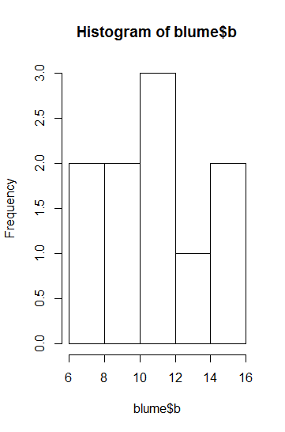
Für die Beurteilung der Varianzhomogenität betrachtet man am besten die Höhe der Boxen im Boxplot. Wenn sie ähnlich hoch sind, ist alles OK, wenn sie sehr stark abweichen, hat man evtl. ein Problem. Sehr stark meint aber, siehe oben, wirklich sehr stark, d. h. wenn die Box in einer Kategorie mehr als 4-mal so hoch ist wie in einer anderen (bei gleichen/ähnlichen Replikatzahen), und ab mehr als doppelt so hoch bei erheblich verschiedenen Replikatzahlen. Im vorliegenden Fall ist die Varianz in Gruppe 1 etwa 2.5-mal so hoch wie in Gruppe 2, da die Zahl der Replikate aber identisch war, wäre das noch OK.
Zur Beurteilung der Normalverteilung bzw. des entscheidenden Aspekts der Normalverteilung, der Symmetrie, sind ebenfalls die Boxplots aufschlussreich. Eine starke Verletzung liegt vor, wenn der Median weit ausserhalb der Mitte der Box liegt oder wenn der obere «whisker» viel länger als der untere ist.
Ausserdem gibt es noch das Central Limit Theorem (CLT) in der Statistik. Dieses Theorem besagt, dass wenn eine betrachtete Variable selbst schon ein Mittelwert ist, sie zwingend einer Normalverteilung folgt. In diesem Fall ist also gar kein Test nötig/sinnvoll. Wenn man sich auf das CLT berufen will, kann man z. B. Quinn & Keough (2002) zitieren.
Was tun, wenn die Voraussetzungen verletzt sind? (nicht-parametrische Verfahren)
Bei Verletzung der Voraussetzungen, kann man auf nicht-parametrische Verfahren ausweichen, was OK ist, wenn man sich völlig klar darüber ist, welche Voraussetzungen diese ihrerseits haben:
Das nicht-parametrische Äquivalent zum t-Test ist der Wilcoxon-Rangsummen-Test. Er funktioniert, indem Werte in Ränge transformiert und summiert werden (W-statistic). Nachteile sind, dass er sehr konservativ ist (d. h. tendenziell zu hohe p-Werte schätzt) und zudem keine exakten p-Werte berechnen kann, wenn „Bindungen” (ties) vorliegen (d. h. mehrere Beobachtungen identische Werte aufweisen). Ausserdem sei noch einmal betont, dass der Wilcoxon-Test zwar keine Annahme über die Verteilung der Werte pro Gruppe macht, jedoch voraussetzt, dass diese in jeder Gruppe gleich ist.
wilcox.test(blume$a, blume$b)Ferner gibt es Randomisierungs-t-Tests. Diese haben den Vorteil, dass keine Annahme über die Verteilung getroffen werden muss (die Verteilung wird aus den Daten generiert). Zugleich müssen die Beobachtungen noch nicht einmal unabhängig sein. Allerdings testet man hier strenggenommen auch nicht auf Unterschiede in den Grundgesamtheiten, sondern ermittelt die Wahrscheinlichkeit, die beobachteten Unterschiede zufällig erzielt zu haben. Wer mehr über Randomisierungs-Tests wissen will, findet in Logan (2010: 148–150) weitergehende Infos.
Im Fall der ANOVA gibt es zwei Situationen:
Wir haben starke Abweichungen von der Normalverteilung der Residuen, aber ähnliche Varianzen. Dann kann der Kruskal-Wallis-Test zum Einsatz kommen (ebenfalls ein Rangsummen-Test). Der zugehörige posthoc-Test ist der Dunn-Test mit Benjamin-Hochberg-Korrektur der p-Werte (wegen multiplem Testen):
kruskal.test(data = blume2, size~cultivar) library(FSA) dunnTest(data = blume2, size~cultivar, method = "bh")Wenn dagegen die Varianzen sehr heterogen sind, die Residuen aber relativ normal/symmetrisch, wie in der folgenden Abbildung, kann der Welch-Test eingesetzt werden:
oneway.test(data=blume2, size~cultivar, var.equal=F)Was tun, wenn die Voraussetzungen verletzt sind? (Transformationen)
Statt auf nicht-parametrische Verfahren auszuweichen, kann man auch Transformationen anwenden. Da es um die Verteilung der Residuen geht, muss primär die abhängige Variable für Transformationen in Betracht gezogen werden, manchmal hilft aber auch die Transformation einer unabhängigen Variablen (weitergehende Infos siehe Fox & Weisberg 2019: 161–169).
Wenn man über die Anwendung von Transformationen nachdenkt, sind zwei Aspekte relevant: (1) Entgegen manchen Behauptungen sind untransformierte Daten (linear Skala) nicht per se natürlicher/richtiger. Auch die lineare Skala ist eine Konvention. Viele Naturgesetze (z. B. unsere Sinneswahrnehmung) funktionieren dagegen auf einer Logarithmusskala. (2) Wenn man die abhängige Variable transformiert, muss man sich aber klar darüber sein, dass man dann strenggenommen Hypothesen über die transformierten Daten, nicht über die ursprünglichen Werte testet. Achtung: Wenn man die Analysen mit tranformierten Daten durchführt, darf man für die Ergebnisdarstellung die Rücktransformation mittels der jeweiligen Umkehrfunktion nicht vergessen!
Gängige Transformation für die abhängige Variable sind die folgenden:
Logarithmus-Transformation:
- Gut bei rechtsschiefen Daten/wenn die Varianz mit dem Mittelwert zunimmt.
- Die „natürlichste” Transformation.
- Natürlicher Logarithmus (log) oder Zehnerlogarithmus (log10) möglich.
- Werte müssen > 0 sein.
log (x + Konstante)-Transformation:
- Findet man häufig in der Literatur, wenn abhängige Variablen transformiert werden sollen, die auch Nullwerte enthalten
- Es werden unterschiedliche Konstanten (x) addiert, mal 1, mal 0.01. Es ist aber völlig willkürlich, ob man 1000000 oder 0.00000001 oder 3.24567 addiert, hat aber starken Einfluss auf die Ergebnisse
- Auch lassen sich die Ergebnisse nach so einer komplexen Transformation schlecht interpretieren (da man dann ja eine Hypothese über die transformierten Daten testet, s. o.)
- In Übereinstimmung mit Wilson (2007) rate ich daher dringend von derlei Transformationen ab!
Wurzeltransformation:
- Hat einen ähnlichen Effekt wie die Logarithmus-Transformation, lässt sich im Gegensatz zu dieser auch beim Vorliegen von Nullwerten anwenden (Werte müssen nur positiv sein).
- Die „Stärke” der Transformation kann man durch die Art der Wurzel kontinuierlich einstellen: Quadratwurzel, Kubikwurzel, 4. Wurzel,…
„arcsine”-Transformation:
asin(sqrt(x))\*180/pi
- Wurde traditionell für Prozentwerte (Proportionen) und andere abhängige Variablen empfohlen, die zwischen 0 und 1 bzw. 0 und 100% begrenzt sind (z. B. Quinn & Keough 2002).
- Nach neueren Untersuchungen (Warton & Hui 2011) wird eher davon abgeraten.
Rangtransformation:
- Im Prinzip das, was „nicht-parametrische” Verfahren machen.
- Grösster Informationsverlust von allen genannten Verfahren (noch grösser wäre der Informationsverlust nur bei Überführung der metrischen abhängigen Variablen in Kategorien oder gar in eine Binärvariable).
Die folgenden Abbildungen visualisieren exemplarisch die Effekte unterschiedlicher Transformationen auf die Werteverteilung (ganz links sind jeweils die untransformierten Daten, die Transformation rechts hat jeweils eine deutlich bessere Annäherung an die Normalverteilung erzielt).
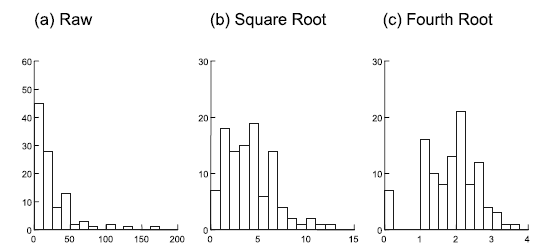 

(aus Quinn & Keough 2002)
Meist muss man nur die abhängige Variable transformieren. Es gibt aber Spezialfälle, wo man erst nach Transformation der abhängigen und der unabhängigen Variable eine adäquate Residuenverteilung erzielt. Dies ist insbesondere dann der Fall, wenn wir eine in Wirklichkeit nicht-lineare Beziehung mit einem linearen Modell abbilden. Wenn etwa im Falle einer einfachen linearen Regression (s. u.) in Wirklichkeit ein Potenzgesetz (y = a xb) vorliegt, erzielt man näherungsweise Varianzhomogenität und Normalverteilung der Residuen nur, wenn man a und b logarithmustransformiert.
Mehrfaktorielle ANOVA
Bislang haben wir uns eine ANOVA mit nur einem Prädiktor, d. h. einer kategorialen Variablen mit zwei bis vielen Ausprägungen, angeschaut. Das Prinzip lässt sich aber auch auf zwei und mehr kategoriale Prädiktoren ausweiten. Man spricht dann von einer mehrfaktoriellen ANOVA. Im Optimalfall sollten alle Kombinationen Faktorlevels aller Prädiktorvariablen auftreten (dann spricht man von einem vollfaktoriellen Design), am besten sogar in gleicher/ähnlicher Häufigkeit.
Betrachten wir exemplarisch die Situation mit zwei Prädiktoren (zweifaktorielle Varianzanalyse, two-way ANOVA). Hierzu haben wir in unserem Blumenbeispiel neben den drei Sorten noch ein weiteres „Treatment” hinzugefügt, nämlich, ob die Pflanzen im Gewächshaus (house = yes) oder im Freiland (house = no) aufgezogen wurden. Der Boxplot in der explorativen Datenanalyse sieht wie folgt aus:

Wir haben nun zwei Möglichkeiten, die zweifaktorielle Varianzanalyse durchzuführen, mit oder ohne Berücksichtigung von Interaktionen:
summary(aov(size~cultivar+house)) Df Sum Sq Mean Sq F value Pr(>F)
cultivar 2 417.1 208.5 5.005 0.01 *
house 1 992.3 992.3 23.815 9.19e-06 ***
Residuals 56 2333.2 41.7 summary(aov(size~cultivar*house)) Df Sum Sq Mean Sq F value Pr(>F)
cultivar 2 417.1 208.5 5.364 0.0075 **
house 1 992.3 992.3 25.520 5.33e-06 ***
cultivar:house 2 233.6 116.8 3.004 0.0579 .
Residuals 54 2099.6 38.9 Ohne Interaktion (oben) verknüpfen wir die beiden Prädiktoren einfach mit „+“; wenn wir die Interaktion auch analysieren wollen (unten), dann verwenden wir „*” zur Verknüpfung. Ein Interaktion läge dann vor, wenn sich die Auswirkung von Gewächshaus vs. Freiland zwischen den Sorten unterschiede, etwa in einem Fall positiv, im anderen neutral oder negativ. Wir sehen, dass die untere ANOVA mit dem Interaktionsterm im Output eine dritte Zeile cultivar:house enhält, welcher die Signifikanz der Interaktion angibt (in unserem Fall also marginal signifikant).
Liegt eine signifikante Interaktion vor, dann nimmt man zur Ergebnisdarstellung am besten eine Grafik, einen sogenannten Interaktionsplot, da sich die Interaktion schon bei zweifaktoriellen ANOVAs schwer in Worte fassen lässt und noch schwerer bei dreifaktoriellen ANOVAs mit potenziell einer Dreifachinteraktion und drei Zweifachinteraktionen:
interaction.plot(cultivar,house,size)
Die Interaktion war nicht signifikant, was sich darin zeigt, dass die Linienzüge für yes und no einigermassen parallel sind, d. h. im Gewächshaus alle drei Kultivare grösser waren. Allerdings haben sich die drei Kultivare nicht völlig konsistent verhalten: der positive Einfluss von Gewächshaus war bei Sorte c viel grösser als bei den anderen beiden (was zu einem p-Wert der Interaktion nahe an der Signifikanzschwelle geführt hat).
# Visualisierung 2-fach-Interaktion etwas elaborierter
# mit ggplot
library(sjPlot)
library(ggplot2)
theme_set(theme_classic())
aov <- aov(size ~ cultivar * house, data = blume3)
plot_model(aov, type = "pred", terms = c("cultivar", "house") )
Mit sjPlot kann man auch gut 3-fach-Interaktionen visualisieren, wie das folgende Beispiel zur Auswirkung von Managment und Hirschbeweidung (fenced = keine Hirsche) über zwei Versuchsjahre auf den Pflanzenartenreichtum zeigt:
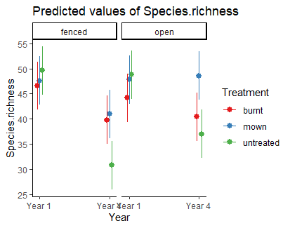
aov.deer <- aov(Species.richness ~ Year * Treatment * Plot.type, data = Riesch)
plot_model(aov.deer, type = "pred", terms = c("Year", "Treatment", "Plot.type"))Korrelationen
Pearson-Korrelationen analysieren den Zusammenhang zwischen zwei metrischen Variablen** und beantworten dabei die folgenden Fragen:
- Gibt es einen linearen Zusammenhang?
- In welche Richtung läuft er?
- Wie stark ist er?
Wichtig dabei ist, dass Korrelationen keine Kausalität voraussetzen oder annehmen. Es gibt also keine abhängige und unabhängige Variable, keine Unterscheidung in Prädiktor- und Antwortvariable. Logischerweise liefern Korrelationen dann auch identische Ergebnisse, wenn x- und y-Achse vertauscht werden.
Die folgenden fünf Abbildungen zeigen verschiedene Situationen. Bei (a) liegt eine positive Korrelation vor, bei (b) eine negative und bei (c)–(e) keine Korrelation. Bei (e) erkennt man zwar visuell eine Beziehung (ein «Peak» in der Mittel, also eine unimodale Beziehung), aber das ist eben kein linearer Zusammenhang.
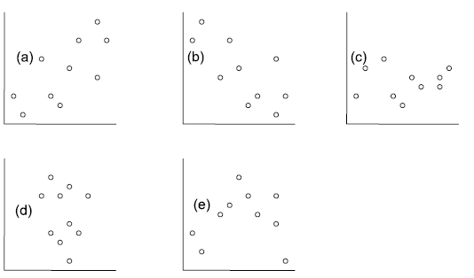
(aus Quinn & Keough 2002)
Bei der Pearson-Korrelation betrachtet man die beiden Parameter Kovarianz (reicht von −∞ bis +∞) und die Korrelation, welche die Covarianz auf den Bereich von –1 bis +1 standardisiert. Pearsons Korrelationskoeffizient r ist der Schätzer für die Korrelation basierend auf der Stichprobe:

(aus Quinn & Keough 2002)
Die implizite Nullhypothese (H0) ist nun ρ = 0. Die Teststatistik ist das uns schon bekannte t mit \(t = \ \frac{r}{s_{r}}\) , wobei sr für den Standardfehler von r steht und bei n – 2 Freiheitsgraden gestet wird.
Die Pearson-Korrelation ist die „parametrische” Variante der Korrelationen. Ihre Anwendung hat zwei Voraussetzungen (in Klammern ist angegeben, wie man ihr Vorliegen visuell überprüfen kann):
Linearität (Überprüfung mit einem xy-Scatterplot)
Bivariate Normalverteilung (Überprüfung mit Boxplots beider Variablen)
Wenn diese Voraussetzungen ungenügend erfüllt sind, kann man auf nicht-parametrische Äquivalente ausweichen. Diese testen auf monotone, nicht auf lineare Beziehungen, liefern allerdings keine exakten Ergebnisse bei Bindungen (d.h. wenn der gleiche Wert mehrfach vorkommt):
Für 7 ≤ n ≤ 30: Spearman-Rang-Korrrelation (rs)
(im Prinzip Pearsons r für rangtransformierte Daten)Für n > 30: Kendall’s tao (τ)
Hier noch der R Code für alle drei Möglichkeiten:
cor.test(df$Species.richness, df$N.deposition, method = "pearson")
cor.test(df$Species.richness, df$N.deposition, method = "spearman")
cor.test(df$Species.richness, df$N.deposition, method = "kendall")Einfache lineare Regressionen
Idee
Einfache lineare Regressionen sind konzeptionell und mathematisch ähnlich zu Pearson-Korrelationen. Oft werden beide Verfahren daher fälsch auch begrifflich durcheinandergeworfen. Der entscheidende Unterschied ist, dass wir für eine Regression eine theoretisch vermutete Kausalität haben müssen. Damit haben wir, anders als bei einer Korrelation, eine fundamentalte Unterscheidung in:
X: unabhängige Variable (independent variable), Prädiktorvariable (predictor)
Y: abhängige Variable (dependent variable), Antwortvariable (response)
Bei Visualisierungen ist zu beachten, dass die unabhängige Variable immer auf der x-Achse dargestellt wird, die abhängige dagegen auf der nach oben gerichteten y-Achse.
Mathematisch wird eine lineare Regression analysiert, indem die bestangepasste Gerade durch die Punktwolke des xy-Scatterplots gelegt wird. Dabei sieht das lineare Modell folgendermassen aus:
- Geradengleichung: y = b0 + b1 x
- Statistisches Modell: yi = β0 + β1 xi + εi, wobei εi das Residuum des i-ten Datenpunktes ist, d. h. seine vertikale Abweichung vom vorhergesagten Wert
Mit einer einfachen linearen Regression testet man die folgenden beiden Nullhypothesen:
H0: β0 = 0 (Achsenabschnitt [intercept] der Grundgesamtheit ist Null) (diese erste Nullhypothese ist, ähnlich wie bei Varianzanalysen, in den meisten Fällen wissenschaftlich nicht relevant)
H0: β1 = 0 (Steigung [slope] der Grundgesamtheit ist Null)
Die folgende Abbildung veranschaulicht die verschiedenen Möglichkeiten:

(aus Logan 2010)
Statistische Umsetzung
Es mag vielleicht zunächst überraschen, aber ähnlich wie beim Vergleich von Mittelwerten zwischen kategorischen Ausprägungen kategorischer Variablen, liegt auch der linearen Regression eine Varianzanalyse zugrunde:
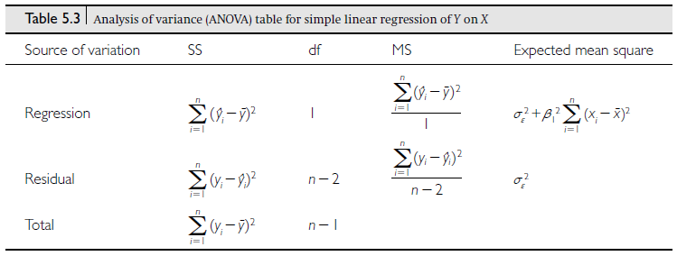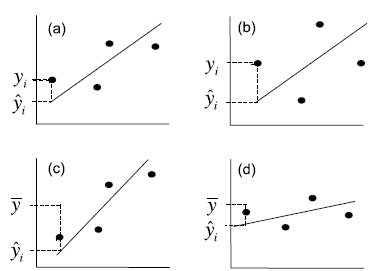
(aus Quinn & Keough 2002)
Wiederum ist die Teststatistik ein F-ratio, nämlich F = MSRegression / MSResidual, wobei MS für die mittleren Quadratsummen steht, also die Quadratsummen (SS) geteilt durch die Freiheitsgrade (df). Wie oben unter der Varianzanalyse schon erwähnt, folgt F einer t²-Verteilung.
Implementierung in R
Das Kommando zum Berechnen einfacher linearer Regressionen lautet lm. Wie bei einem Mittelwertvergleich mittels Varianzanalyse gibt es dann zwei verschiedene Ansichten des Ergebnis-Outputs, die jeweils verschiedene Teilaspekte zeigen (Hier am Beispiel der Beziehung von Pflanzenartenreichtum zur Stickstoffdeposition):
lm <- lm(Species.richness~N.deposition, data = df)
anova(lm) #ANOVA-Tabelle, 1. Möglichkeit
summary.aov(lm) #ANOVA-Tabelle, 2. MöglichkeitResponse: Species.richness
Df Sum Sq Mean Sq F value Pr(>F)
N.deposition 1 233.91 233.908 28.028 0.0001453 ***
Residuals 13 108.49 8.346 Die anova-Ansicht liefert uns die oben besprochene ANOVA-Tabelle, einschliesslich der Signifikanz der Steigung (hier p = 0.0001). Weitere erforderliche Aspekte des Ergebnisses sehen wir in der summary-Ansicht:
summary(lm) #RegressionskoeffizientenCoefficients:
Estimate Std. Error t value Pr(>|t|)
(Intercept) 25.60502 1.26440 20.251 3.25e-11 ***
N.deposition -0.26323 0.04972 -5.294 0.000145 ***
[…]
Residual standard error: 2.889 on 13 degrees of freedom
Multiple R-squared: 0.6831, Adjusted R-squared: 0.6588
F-statistic: 28.03 on 1 and 13 DF, p-value: 0.0001453Wie wir sehen, tauchen wiederum der F-Wert (28.03) und sogar zweimal der p-Wert der Steigung (0.0001) auf, daneben auch der i. d. R. bedeutungslose p-Wert des Achsenabschnitts (intercept) (3.25 x 10-11).
Werfen wir noch einmal einen Blick auf den Output von R:
Coefficients:
Estimate Std. Error t value Pr(>|t|)
(Intercept) 25.60502 1.26440 20.251 3.25e-11 ***
N.deposition -0.26323 0.04972 -5.294 0.000145 ***
[…]
Residual standard error: 2.889 on 13 degrees of freedom
Multiple R-squared: 0.6831, Adjusted R-squared: 0.6588
F-statistic: 28.03 on 1 and 13 DF, p-value: 0.0001453Wir benötigen
- Name des Verfahrens (Methode): Einfache lineare Regression (mit der Methode der kleinsten Quadrate).
- Signifikanz (Verlässlichkeit des Ergebnisses): p-Wert der Steigung, nicht der p-Wert des Achsenabschnittes (wird nach üblicher Konvention auf drei Nachkommastellen gerundet oder, wenn unter 0.001, dann als p < 0.001 angegeben).
- Effektgrösse und -richtung (unser eigentliches Ergebnis!): Im Falle einer linearen Regression ist das die Funktionsgleichung, die sich aus den Schätzungen der Koeffizienten ergibt.
- Erklärte Varianz (Relevanz des Ergebnisses): Wie viel der Gesamtvariabilität der Daten wird durch das Modell erklärt? Ob R² oder R²adj. angegeben werden sollte, wird unterschiedlich gesehen, jedenfalls sollte man explizit sagen, was gemeint ist. R² ist übrigens der quadrierte Wert von Pearsons Korrelationskoeffizienten r.
- ggf. Wert der Teststatistik mit denFreiheitsgraden(„Zwischenergebnisse”): F1,8 = 11.34.
Ein adäquater Ergebnistext könnte daher wie folgt lauten:
Bei einem signifkanten Ergebnis bietet sich auch noch eine Visualisierung mittels Scatterplot an, in den die Regressionsgerade geplottet ist:
plot(b~a,xlim=c(0,25),ylim=c(0,20))
abline(lm(b~a))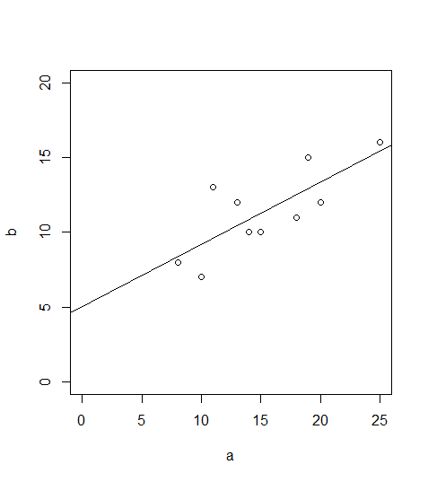
Voraussetzungen
Einfache lineare Regressionen basieren auf drei Vorausetzungen:
- Linearität
- Normalverteilung (der Residuen!)
- Varianzhomogenität
Für das meistverwendete Verfahren der kleinsten Abweichungsgquadrate (wie bislang besprochen; ordinary least squares = OLS), auch als Modell I-Regressionen bezeichnet, muss zudem gelten:
Feste x-Werte, d. h.
- x-Werte vom Experimentator gesetzt ODER
- Fehler in den x-Werten viel kleiner als in den y-Werten
Sowie auch für folgende Fälle:
- Hypothesentest H0: β1 = 0 im Fokus, nicht der exakte Wert vonβ~1
- Für prädiktive Modelle
- Wenn keine bivariate Normalverteilung vorliegt
Alternativen zur Methode der kleinsten Quadrate (OLS)
Wenn keine der oben unter Punkt 4 genannten Voraussetzungen erfüllt ist, dann sollte eine sogenannte Modell-II-Regression (Nicht-OLS-Regression) durchgeführt werden. Hier stehen als Möglichkeiten die Major axis regression, die Ranged major axis regression und die Reduced major axis regression zur Verfügung. Details finden sich in Logan (2010: 173–175), woraus aus die folgende Visualisierung stammt:
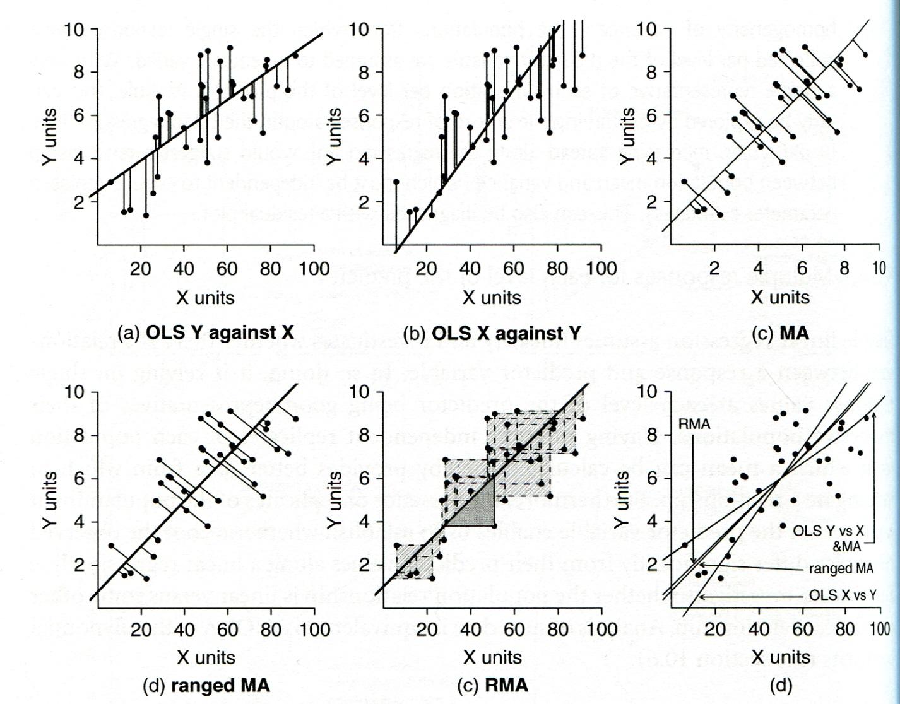
(aus Logan 2010)
In R stehen solche Methoden u. a. im Paket lmodel2 zur Verfügung:
library(lmodel2)
lmodel2(b~a)Regression results
Method Intercept Slope Angle (degrees) P-perm (1-tailed)
1 OLS 5.019254 0.4170422 22.63820 NA
2 MA 4.288499 0.4648040 24.92919 NA
3 SMA 3.067471 0.5446097 28.57314 NAWie man sieht, unterscheiden sich die beiden Modell-II-Ergebnisse deutlich von Modell I (OLS).
Lineare Modelle allgemein
Was macht ein lineares Modell aus?
Die meisten statistischen Verfahren, die wir bis zu diesem Punkt angeschaut haben, gehören zu den linearen Modellen. Dieser Begriff wird häufig weitgehend synonym mit „parametrischen Verfahren” verwendet, ist aber treffender. Von den bisherigen Verfahren gehören die folgenden zu den linearen Modellen:
Pearson-Korrelation
t-Test
Varianzanalyse
Einfache lineare Regression
Was macht nun lineare Modelle aus:
Voraussetzungen: Normalverteilung der Residuen und Varianzhomogenität
In R kann man sie (mit Ausnahme der Pearson-Korrelation) mit dem Befehl lm abbilden (ja, auch die Varianzanalyse!)
Varianzanalysen und lineare Regressionen nutzen beide ANOVA-Tabellen mit F-ratios als Testverfahren
Lineare Modelle lassen sich als Linearkombination der Prädiktoren schreiben, d. h.:
- Prädiktoren werden nicht als Multiplikator, Divisor oder Exponent anderer
Prädiktoren verwendet
- die Beziehung muss aber nicht zwingend linear sein.
- Prädiktoren werden nicht als Multiplikator, Divisor oder Exponent anderer
Welche Verfahren gehören zu den linearen Modellen?
Neben den schon besprochenen einfachen Verfahren gehören auch eine ganze Reihe komplexerer Vefahren zu den linearen Modellen, die aber alle den vorstehenden Bedingungen entsprechen. Die meisten werden wir in Statistik 3 besprechen. Logan (2010: 165) hat eine recht umfassende folgende Übersicht erstellt. Darin sind metrische Prädiktoren als x, x1 und x2 bezeichnet, kategoriale als A bzw. B. Was unter R Model formula steht, würde im jeweiligen Fall in die Klammern des lm-Befehls gesetzt:

(aus Logan 2010)
Testen der Voraussetzungen von linearen Modellen (Modelldiagnostik)
Wie geschrieben, haben lineare Modelle bestimmte Voraussetzungen. Selbst wenn lineare Modelle recht robust gegen Verletzungen der Vorassetzungen sind, so muss man doch jedes Mal, nachdem man ein lineares Modell gerechnet hat, prüfen, ob die Voraussetzungen erfüllt waren. Es geht hier primär um die Voraussetzungen Varianzhomogenität, Normalverteilung der Residuen und Linearität.
Wichtig ist, zu verstehen, dass man zunächst das lineare Modell rechnen muss und erst nachträglich prüfen kann, ob die Voraussetzungen erfüllt waren. Das liegt daran, dass die Kernannahmen Varianzhomogenität und Normalverteilung der Residuen sich auf das Modell, nicht auf die Originaldaten beziehen. Einzig für t-Tests und ANOVAs kann man diese beiden Punkte auch in der explorativen Datenanalyse vor dem Berechnen des Modells erkunden, für lineare Regressionen und komplexere Modelle geht das nicht. Wenn der nachträgliche Test zeigt, dass eine der Voraussetzungen schwerwiegend verletzt war, bedeutet das, dass man das Modell neu spezifizieren muss, etwa durch eine geeignete Transformation der abhängigen Variablen.
Das Überprüfen der Voraussetzungen (= Modelldiagnostik) erfolgt visuell mittels der sogenannten Residualplots, die man mit dem generische plot-Befehl bekommt, wenn man als Argument das Ergebnis eines linearen Modells hat. Man bekommt dann vier Plots, die man am besten in einem 2 x 2-Arrangement ausgibt (das macht der erste Befehl):
par(mfrow = c(2, 2)) #4 Plots in einem Fenster
plot(lm)Betrachten wir zwei Fälle, zunächst das Beispiel von eben:
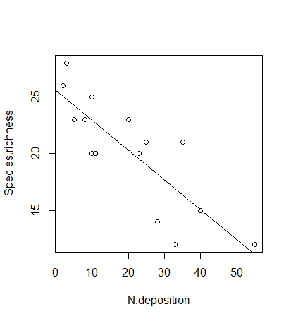
und die zugehörigen Residualplots:

In diesem Fall ist alles OK. Man muss vor allem die oberen beiden Teilabbildungen betrachten. Links oben kann man gut erkennen, wenn Linearität oder Varianzhomogenität verletzt wären, rechts oben dagegen, wenn die Normalverteilung der Residuen verletzt wäre. Zu berücksichtigen ist, dass reale Daten nie perfekt linear, varianzhomogen und normalverteilt sind.
Uns interessieren nur massive Abweichungen. Wir würden sie wie folgt erkennen:
Linearität: Eine Verletzung erkennen wir in der linken oberen Abbildung, wenn wir eine „Wurst” bzw. „Banane” sehen, also wenn die linken Punkte alle unter der gepunktelten Linie, die mittleren alle darüber und die rechten wieder alle darunter lägen (oder umgekehrt).
Varianzhomogenität: Eine Verletzung erkennen wir in der linken oberen Abbildung, wenn die Punktwolke einen starken Keil (meist nach rechts offen) beschreibt.
Normalverteilung der Residuen: Eine Verletzung erkennen wir in der rechten oberen Abbildung, wenn die Punkte sehr stark von der gestrichelten Linie abweichen, insbesondere wenn sie eine ausgeprägte Treppenkurve bilden.
Die beiden unteren Abbildungen sind für die Diagnostik weniger wichtig. Links unten haben wir eine skalierte Version der Abbildung links oben. Die Abbildung rechts unten zeigt uns, ob bestimmte Datenpunkte übermässigen Einfluss auf das Gesamtergebnis haben. Das wären Punkte mit einer Cook’s distance über 0.5 und insbesondere über 1. In solchen Fällen sollten wir noch einmal kritisch prüfen, ob (a) evtl. ein Eingabefehler vorliegt und (b) der bezeichnete Punkt wirklich zur Grundgesamtheit gerechnet werden sollte. Wenn aber beide Aspekte nicht zu beanstanden sind, dann gibt es auch keinen Grund, den entsprechenden Datenpunkt auszuschliessen; wir müssen uns nur bewusst sein, dass er das Gesamtergebniss übermässig stark beeinflusst.
Zum Schluss kommt noch ein Beispiel, bei dem die Modellvoraussetzungen einer linearen Regression klar nicht erfüllt sind.


Hier sind die Voraussetzungen klar nicht erfüllt: (a) es liegt starke Varianzinhomogenität vor (links oben als nach rechts offener Keil erkennbar, links unten als klar ansteigende Kurve); (b) die Normalverteilung der Residuen ist auch nicht gegeben (im Q-Q-Plot rechts oben weichen die Punkte stark von der theoretischen Kurve ab und bilden stattdessen eine Treppenkurve). Schliesslich sehen wir rechte unten auch noch, dass es einen extrem einflussreichen Datenpunkt mit Cook’s distance > 1 und einen weiteren mit Cook’s distance > 0.5 gibt.
In diesem Fall schlussfolgern wir, dass das Modell fehlspezifiziert war. Da die Varianz mit dem Mittelwert zunimmt, während zugleich keine Null-Werte unter der abhängigen Variablen auftreten, wäre eine Logarithmus-Transformation der abhängigen Variablen hier vermutlich ein zielführendes Vorgehen. Dieses sollten wir ausprobieren und anschliessend wiederum die Residualplots betrachten.
Zusammenfassung
t-Tests und ANOVAs sind parametrische Verfahren, um auf Unterschiede in den Mittelwerten einer metrischen Variablen zwischen zwei bzw. beliebig vielen Gruppen zu testen.
Korrelationen testen auf einen linearen Zusammenhang zwischen zwei metrischen Variablen, ohne Kausalität anzunehmen.
Einfache lineare Regressionen machen das Gleiche unter Annahme eines gerichteten Zusammenhangs (d. h. wenn es eine unabhängige und eine abhängige Variable gibt).
Parametrische Verfahren basieren auf bestimmten Annahmen zur Streuung der Daten, sind aber robust gegenüber deren Verletzung.
Die Voraussetzungen parametrischer Verfahren beziehen sich auf die Residuen, nicht auf die unabhängigen, noch auf die abhängigen Variablen per se.
Sowohl lineare Regressionen als auch ANOVAs gehören zu den linearen Modellen und können in R mit dem Befehl lm spezifiziert werden.
Weiterführende Literatur
- Crawley, M.J. 2015. Statistics – An introduction using R. 2nd ed. John Wiley & Sons, Chichester, UK: 339 pp.
- Chapter 7 – Regression: pp. 114–139
- Chapter 8 – Analysis of Variance: pp. 150–167
- Fox, J. & Weisberg, S. 2019. An R companion to applied regression. 3rd ed. SAGE Publications, Thousand Oaks, CA, US: 577 pp.
- Logan, M. 2010. Biostatistical design and analysis using R. A practical guide. Wiley-Blackwell, Oxford, UK: 546 pp.
- pp. 151-166 (lineare Modelle)
- pp. 167-207 (Korrelation und einfache lineare Regression)
- pp. 254-282 (Einfaktorielle ANOVA)
- pp. 311-359 (Mehrfaktorielle ANOVA)
- Quinn, G.P. & Keough, M.J. 2002. Experimental design and data analysis for biologists. Cambridge University Press, Cambridge, UK: 537 pp.
- Warton, D.I. & Hui, F.K.C. 2011. The arcsine is asinine: the analysis of proportions in ecology. Ecology 92: 3–10.
- Wilson, J.B. 2007. Priorities in statistics, the sensitive feet of elephants, and don’t transform data. Folia Geobotanica 42: 161–167.
Statistik 3: Lineare Modelle II
Statistik 3 fassen wir zu Beginn den generellen Ablauf inferenzstatistischer Analysen in einem Flussdiagramm zusammen. Dann wird die ANCOVA als eine Technik vorgestellt, die eine ANOVA mit einer linearen Regression verbindet. Danach geht es um komplexere Versionen linearer Regressionen. Hier betrachten wir polynomiale Regressionen, die z. B. einen Test auf unimodale Beziehungen erlauben, indem man dieselbe Prädiktorvariable linear und quadriert einspeist. Multiple Regressionen versuchen dagegen, eine abhängige Variable durch zwei oder mehr verschieden Prädiktorvariablen zu erklären. Wir thematisieren verschiedene dabei auftretende Probleme und ihre Lösung, insbesondere den Umgang mit korrelierten Prädiktoren und das Aufspüren des besten unter mehreren möglichen statistischen Modellen. Hieran wird auch der informatian theoretician-Ansatz der Statistik und die multimodel inference eingeführt.
Lernziele
Ihr…
- wisst, wofür ANCOVA steht, wann dieses statistische Verfahren zum Einsatz kommt und wie das praktisch geht.
- versteht, wann es Sinn macht, quadratische Terme in eine Regression einfliessen zu lassen und warum das dann trotzdem noch ein lineares Modell ist;
- könnt lineare Regressionen mit mehreren Prädiktoren in R implementieren und wisst, welche Aspekte ihr bei der Modellspezifikation und bei der Auswahl des «besten» Modells beachten müsst; und
- kennt die Gütemasse des information theoretician approach und könnt sie interpretieren.
Genereller Ablauf einer statistischen Analyse
Das folgende Schema zeigt den generellen Ablauf einer statistischen Analyse, wie er für alle schon besprochenen und auch alle noch kommenden Verfahren gilt:
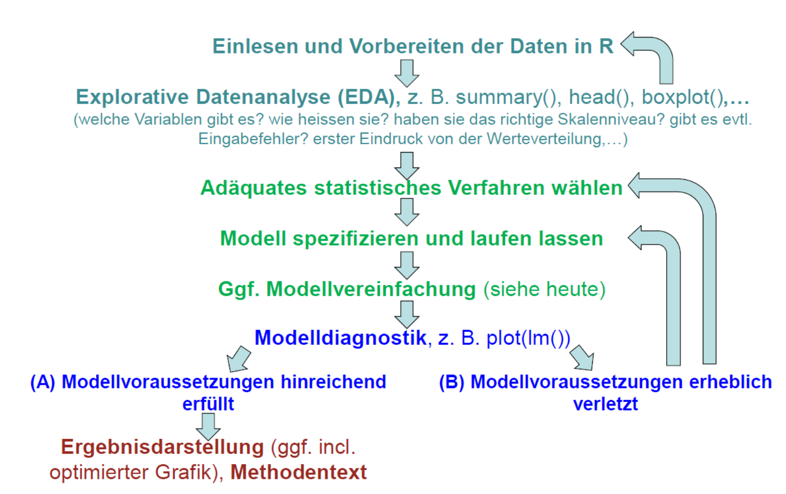
Ein zentrales Element ist die Modelldiagnostik, die wir in Statistik 2 am Ende behandelt haben. Leider wird sie oft vergessen! Basierend auf den Ergebnissen der Modelldiagnostik kann man entweder die Ergebnisse fertigstellen oder aber man muss zu den initialen Schritten zurückgehen. Möglicherweise war das gewählte statistische Verfahren schon nicht adäquat oder das Verfahren war in Ordnung, nur die Details der Spezifizierung (etwa Transformationen von Daten) müssen nachgebessert werden.
Covarianzanalyse (ANCOVA)
Wie wir schon bei „Lineare Modelle allgemein” in Statitik 2 gesehen haben, lassen sich metrische und kategoriale Variablen in einem einzigen linearen Modell kombinieren. Eine ANCOVA macht genau dieses, ist also im Prinzip eine Kombination aus ANOVA und linearer Regression. Stellen wir uns vor, wir hätten einen Datensatz von Körpergewichten von Kindern unterschiedlichen Alters (age: metrisch) und Geschlechts (sex: kategorial/binär, dargestellt als blau und rot). Eine ANCOVA testet nun, ob und wie sich das Gewicht in Abhängigkeit von beiden Faktoren verhält. Dabei gibt es im Prinzip sechs verschiedene Möglichkeiten/Ergebnisse:
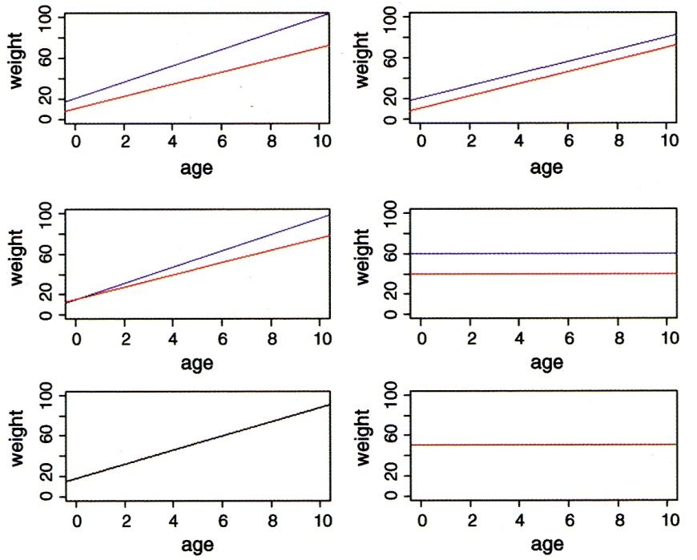
(aus Crawley 2015)
Wie andere lineare Modelle auch, kann man eine ANCOVA mittels aov oder mittels lm spezifizieren. Es ist zu beachten, dass hier die Reihenfolge der Variablen wichtig ist:
summary(aov(weight~age\*sex))Im vollen Modell (full model, global model) wurden vier Parameter gefittet (2 Steigungen und 2 Achsenabschnitte). Das haben wir durch das „*“-Zeichen spezifiziert. Dieses sagt, dass nicht nur Alter und Geschlecht unabhängig voneinander einen (additiven) Effekt haben, sondern dass der Effekt des Alters je nach Geschlecht unterschiedlich sein könnte, also die Gewichtszunahme mit. Jedoch sind oft nicht alle bedeutsam. Es ist daher wichtig, das Modell so lange zu vereinfachen, bis nur noch bedeutsame Parameter übrig sind. Dann hat man das minimal adäquate Modell.
Für die Modellvereinfachung gibt es unterschiedliche Strategien (mehr dazu später bei den „Multiplen linearen Regressionen”). Man muss jedenfalls schrittweise vorgehen, d. h. immer nur einen Parameter löschen und dann das neue Modell anschauen. Wenn von den Parametern welche nicht signifikant sind, könnte man z. B. zunächst den am wenigsten signifikanten löschen und dann das neue Model betrachten, usw.
Alternativ kann man auch ANOVAs zum Vergleich zweier unterschiedlich komplexer Modelle verwenden. Das klingt zunächst schräg, da wir bislang ANOVAs verwendet haben, um innerhalb eines Modelles zu sehen, ob etwa die durch die Steigung erklärte Varianz signifikant ist. Den gleichen Ansatz kann man aber auch verwenden, um zwei unterschiedlich komplexe Modelle miteinander zu vergleichen. Wichtig ist nur, dass das eine Modell im anderen geschachtelt ist:
anova(lm(weight~age\*sex), lm(weight~age+sex))Das komplexere Modell ist jenes mit „*“, das einfachere jenes mit „+”, da dort eine einheitliche Gewichtszunahme mit dem Alter angeommen wird. Wenn die ANOVA nun ein signifikantes Ergebnis liefert, heisst das, dass der zusätzliche Parameter des komplexeren Modells (die Interaktion Alter x Geschlecht) mehr erklärt als zufällig zu erwarten und daher beibehalten werden sollte. Wenn die ANOVA ein nicht-signifkantes Ergebnis liefert, sollten wir uns für das einfachere Modell (jenes mit „+“) entscheiden.
Polynomische Regressionen
Eine quadratische Regression (Polynom 2. Ordnung) ist die einfachste Möglichkeit, eine sogenannte unimodale (humpshaped) Beziehung von abhängiger zur unabhängigen Variablen mathematisch abzubilden. Unimodal/humpshaped meint, dass die Kurve ein Maximum hat, d. h. die abhängige Variable für mittlere Werte der Prädiktorvariablen den höchsten Wert aufweist. Für viele Beziehungen sind solche unimodalen Kurvenverläufe theoretische vorhergesagt und/oder theoretisch nachgewiesen. In der Ökologie gilt das z. B. für die Beziehung des Artenreichtums zu so unterschiedlichen Faktoren wie Störungshäufigkeit (intermediate disturbance hypothesis, IDH), Boden-pH-Wert und Produktivität/Biomasse.
Das statistische Modell für eine quadratische Beziehung ist:
yi = β0 + β1xi + β2xi²
In R wird eine quadratische Regression folgendermassen codiert:
summary(lm(f~e+I(e^2)))Coefficients:
Estimate Std. Error t value Pr(>|t|)
(Intercept) -2.239308 3.811746 -0.587 0.56777
e 1.330933 0.360105 3.696 0.00306 **
I(e^2) -0.031587 0.007504 -4.209 0.00121 **Wichtig ist, dass man den quadratischen Term im lm-Befehl nicht einfach als e^2 eingeben kann, sondern I(e\^2) schreiben muss. Eine signifikante unimodale Beziehung ist dann gegeben, wenn die Parameterschätzung für den Quadratischen Term (also e^2) negativ ist – man hat eine nach unten offene Parabel. Ist der quadratische Term dagegen signifikant positiv, hat man eine nach oben offene Parabel, also eine u-förmige Beziehung (Minimum für die abhängige Variable bei intermediären Werten der Prädiktorvariablen).
Wichtig ist, dass man wie bei allen statistischen Modellen nachträglich die Modellvoraussetzungen prüft.
Im vorhergehenden Beispiel sah es mit einer einfachen linearen Regression so aus (Code, Ergebnisplot und Residualplots):
plot(f~e,xlim=c(0,40),ylim=c(0,20))
abline(lm(f~e),col="blue")

Man ahnt schon im Scatterplot mit der gefitteten einfachen linearen Regression, dass etwas mit dem Modell nicht stimmt, was durch die Bananenform im Residualplot links oben unterstrichen wird: die Beziehung ist evident nicht linear.
Nach Hinzufügen des quadratischen Terms sieht man schon im Scatterplot mit der gefitteten Funktion, dass es viel besser passt, aber erst recht in den Residualplots. Mit predict kann man jede Funktion plotten, die als Ergebnis einer Regressionsanalyse herauskommt. Im Prinzip zerlegt man die x-Achse in viele kleine Segmente und plottet dann jeweils Geraden zwischen zwei aufeinander folgenden vorhergesagten Punkten.
xv <- seq(0,40,0.1)
plot(f~e,xlim=c(0,40),ylim=c(0,20))
yv2 <- predict(lm.quad,list(e=xv))
lines(xv,yv2,col="red")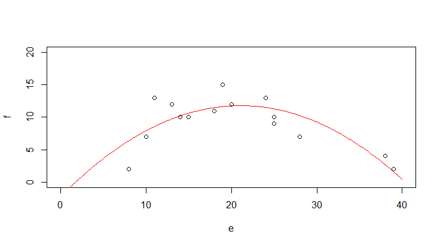

Bezüglich des statistische Vorgehens ist zu beachten, dass man den quadratischen Term nur im Modell behalten sollte, wenn er signifikant ist (bei nur einem quadratischen Term der p-Wert aus summary, sonst ggf. mit anova testen oder AICc-Werte (siehe später) vergleichen). Dagegen muss der lineare Term (hier: e) dann beibehalten werden, wenn der quadratische Term signifikant ist, selbst wenn der lineare Term nicht signifkant ist. (Wenn beide nicht signifikant sind, fallen dagegen beide raus).
Wenn es theoretische Gründe gibt, kann man in gleicher Weise auch Polynome höherer Ordnung implementieren. Wichtig ist, im Hinterkopf zu behalten, dass eine polynomische Regression fast immer eine deutliche Simplifizierung der Realität darstellt. Sie ist ein probates und einfaches Mittel, um zu testen, ob die Beziehung signifikant unimodal ist. Dagegen ist sie problematisch als prädiktives Modell, da sie oft negative Werte für die abhängige Variable voraussagt, zumindest ausserhalb des gefitteten Bereichs. Negative Werte sind aber vielfach theoretisch unmöglich (z. B. Artenzahlen, Stoffkonzentrationen,…).
Multiple lineare Regressionen
Vorgehen
Analog zur mehrfaktoriellen ANOVA, sind multiple lineare Regressionen einfach lineare Regressionen mit mehreren Prädiktoren. Das statistische Modell lautet also folgendermassen (wobei x1 … xi metrische Variablen sind):
yi = β0 + β1x1,i + β2x2,i + (…) + βjxj,i
In R wird das wie folgt codiert:
model1 <- lm (y ~ x1 + x2 + x3, data = mydata)Möglich sind aber auch folgende Modelle:
model2 <- lm (y ~ x1 + x2 + I(x2\^2), data = mydata)
model3 <- lm (y ~ x1 + x2 + log10(x3), data = mydata)
model4 <- lm (y ~ x1 + x2 + x1:x2, data = mydata)Und für ein konkretes Beispiel (Abhängigkeit der Vogelabundanz in isolierten Waldinseln von verschiedenen Umweltvariablen (YR.ISOL = year since isolation, ALT = altitude, GRAZE = grazing):
model <- lm (ABUND ~ YR.ISOL + ALT + GRAZE, data=loyn)
summary(model)Coefficients:
Estimate Std. Error t value Pr(>|t|)
(Intercept) -73.58185 107.24995 -0.686 0.495712
YR.ISOL 0.05143 0.05393 0.954 0.344719
ALT 0.03285 0.02679 1.226 0.225618
GRAZE -4.01692 0.99881 -4.022 0.000188 ***Und wie immer schauen wir die Residualplots an, die eigentlich ziemlich gut aussehen:
par(mfrow=c(2,2))
plot(model)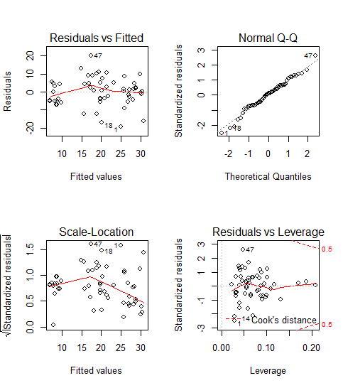
Allerdings dürfen wir uns hier im Falle einer multiplen Regression noch nicht zufrieden zurücklehnen, sondern müssen uns zunächst noch zwei potenziellen Problemen annehmen: (1) Korrelation zwischen den Prädiktoren und (2) Overfitting.
Problem 1: Korrelation zwischen den Prädiktoren
Damit lm verlässliche Parameterschätzungen liefern kann, müssen die Prädiktoren (hinreichend) unabhängig (man spricht auch von: orthogonal) sein. Das muss man vor dem Fitten des Models testen und dann von Paaren hochkorrelierter Variablen jeweils eine ausschliessen.
Es gibt zwei gängige Testmöglichkeiten:
Korrelationmatrix: nur Parameter mit |r| < 0.7 werden beibehalten (manchmal findet man auch andere Schwellenwerte, etwa 0.6 oder 0.75: wie eigentlich alles in der Statistik, ist es keine Schwarz-weiss-Welt).
Variance inflation factor (VIF):
\({VIF}_{i}\ = \frac{1}{1 - R_{i}²}\) , mit Ri² aus dem Modell Prädiktor i gegen alle übrigen Prädiktoren
Der VIF sagt uns, dass der Standardfehler (SE) des Prädiktors um \(\sqrt{VIF}\) grösser ist als im orthogonalen Fall. Meist werden Variablen bis VIF = 5, manchmal bis VIF = 10 akzeptiert.
Die Berechnung der Korrelationsmatrix geht in R sehr einfach:
cor <- cor(loyn[,2:7])
corDas Ergebnis ist allerdings unübersichtlich. Man kann es vereinfachen, indem man nur jene Werte darstellt, die über dem selbstgewählten Schwellenwert (hier 0.6) liegen.
cor[abs(cor)<0.6] <- 0
cor AREA YR.ISOL DIST LDIST GRAZE ALT
AREA 1 0.0000000 0 0 0.0000000 0
YR.ISOL 0 1.0000000 0 0 -0.6355671 0
DIST 0 0.0000000 1 0 0.0000000 0
LDIST 0 0.0000000 0 1 0.0000000 0
GRAZE 0 -0.6355671 0 0 1.0000000 0
ALT 0 0.0000000 0 0 0.0000000 1Wenn man die Schwelle bei 0.6 ansetzt, müsste man also von den beiden Variablen GRAZE und YR.ISOL eine aus dem Modell entfernen, da sie zu stark negativ korreliert sind. Dabei sind drei Dinge wichtig:
Statistisch gibt es kein klares Argument, welche von mehreren hoch-korrelierten Variablen man im vollen Modell streichen sollte (man könnte höchstens zusätzlich den VIF heranziehen). Inhaltlich macht es Sinn, diejenige Variable beizubehalten, die (a) besser interpretierbar ist oder (b) häufiger in vergleichbaren Studien gebraucht wurde.
Man sollte im Methodenteil dokumentieren welche Variable(n) wegen positiver/negativer Korrelation mit welcher anderen aus dem vollen Modell gestrichen wurden.
Bei der Interpretation der Ergebnisse stehen die beibehaltenen Variablen auch für die jeweils gestrichenen hochkorrelierten Variablen (zumindest zu einem erheblichen Teil).
Die Berechnung der VIF’s geht wie folgt:
library(car)
vif(model) YR.ISOL ALT GRAZE
1.679995 1.200372 1.904799 Hier sieht man nicht, welche Variable mit welcher anderen korrliert ist, man bekommt nur ein Gesamtranking. Da die VIF-Werte aller drei Variablen unter 5 sind, können alle beibehalten werden. Wenn mehrere Variablen einen VIF > 5 haben, muss man schrittweise immer die Variable mit dem höchsten VIF-Wert entfernen und die VIF-Werte dann neuberechnen. Sie ändern sich, wenn eine Variable wegfällt, da sie die Gesamt-Korrelationsstruktur des Datensatzes widerspiegeln.
Problem 2: Overfitting
Das Problem des Overfitting soll mit der folgenden Simulation veranschaulicht werden: zu einer Stichprobe von sechs Beobachtungen mit zwei numerischen Variablen werden schrittweise polynomische Modelle höher Ordnung gefittet.
Der Code dafür ist:
lm=lm(y~x)
xy <- seq(from=0,to=10,by=0.1)
yv <- predict(lm,list(x=xv))
lines(xv,yv)
lm2=lm(y~x+I(x\^2))
xy <- seq(from=0,to=10,by=0.1)
yv <- predict(lm2,list(x=xv))
lines(xv,yv)
[usw.]Das Ergebnis sieht folgendermassen aus:
 R² = 0.012
R² = 0.012
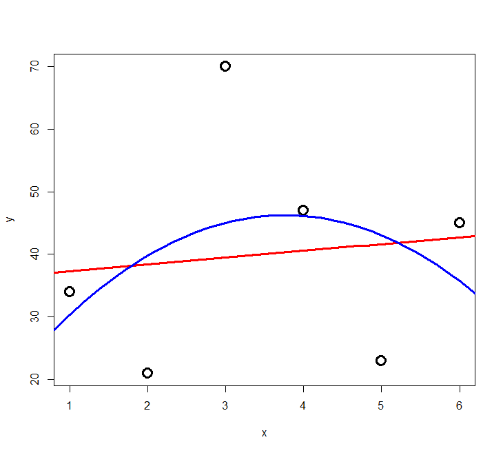R² = 0.111
 R² = 0.170
R² = 0.170
 R² = 0.875
R² = 0.875
 R² = 1.000
R² = 1.000
Wir sehen, dass die erklärte Varianz kontinuierlich vom 2-Parameter-Modell (Achsenabschnitt und Steigung) zum 6-Parameter-Modell (Achsenabschnitt, Parameter für x bis x5) zunimmt. Ein polynomische Modell (n – 1). Ordnung erzielt immer 100% Anpassung and die Daten (R2 = 1), wenn man n Beobachtungen hat. Aber ist das Modell deswegen auch besonders korrekt oder aussagekräftig? Das darf bezweifelt werden. Ein gutes Modell wäre ja eines, das die zugrunde liegende Gesetzmässigkeit erkennt und daher auch für die Interpolation und Extrapolation geeignet ist.
Es zeigt sich, dass die gute Anpassung an die Daten (good fit, hier gemessen als R2) nur der eine Aspekt eines guten Modells ist. Zugleich sollte es möglichst einfach (parsimonous) sein, d. h. das Beobachtete mit möglichst wenigen Annahmen erklären. Es gilt das folgende Prinzip, das auf den mittelalterlichen Philosophen Willliam of Ockham (ca. 1288–1347 zurückgeht).

(Skizze aus einer Handschrift von Ockhams Summa logicae)
Modellvereinfachung
Nun stellt sich die Frage, wie wir vom vollen Modell (full model, global model) also jenem nach Entfernung hochkorrelierter Variablen zum „besten” Modell gelangt, das also eine bestmögliche Kombination von guter Anpassung an die Daten (Fit) und Parsimonie aufweist. Dieses anzustrebende statistische Modell wird auch minimal adäquates Modell (mininum adequate model) genannt.
Ganz generell gilt: Man sollte maximal p = n / 3 Parameter fitten (wobei n = Zahl der Datenpunkte/Beobachtungen und bei p auch der Achsenabschnitt [b0] mitgezählt wird).
Mögliche Kriterien für das „beste” Modell (minimum adequate model):
Höchster R²adj. = \(\mathbf{1}\mathbf{-}\) \(\frac{\mathbf{SS}_{\mathbf{Residual}}\mathbf{/\lbrack n -}\left( \mathbf{p + 1} \right)\mathbf{\rbrack}}{\mathbf{SS}_{\mathbf{Total}}\mathbf{/(n - 1)}}\)
(vgl. R² = \(\frac{{SS}_{Regression}}{{SS}_{Total}} = 1 - \frac{{SS}_{Residual}}{{SS}_{Total}}\))
Ist nicht wirklich zielführend, da der „Strafterm” (um den R² reduziert wird) zu gering ist, um wirklich für Parsimonität zu sorgen.Schrittweise Modellvereinfachung ausgehend vom „maximalen Modell”
Durch: Entfernen von (a) nicht-signifikanten Interaktionen, (b) nicht-signifikanten quadratischen Termen und schliesslich (c) nicht-signifkanten linearen Variablen.
Die schrittweise Modellvereinfachung kann wiederum auf drei verschiedene Weisen geschehen (die meist, aber nicht immer, die gleichen Ergebnisse liefern):
Schrittweise die am wenigsten signifkanten Terme entfernen, bis alle signifikant sind:
model1 <- lm (ABUND ~ YR.ISOL + ALT + GRAZE, data=loyn)
summary(model1)
model2 <- update(model1,~.-YR.ISOL)
summary(model2)Mittels ANOVA schrittweise Modelle vergleichen und Terme hinzufügen, wenn signifikent, bzw. entfernen, wenn nicht
anova(model1,model2)Eine automatische Funktion zum schrittweisen Hinzufügen (forward selection) oder Löschen (backward selection) oder beidem verwenden (es gibt verschiedene Packages, bei Interesse bitte googlen).
Varianten a bis c sind im Prinzip OK, man muss sich aber bewusst sein, dass gerade bei vielen Variablen dieses schrittweise Vorgehen nicht zwingend das wirklich beste Modell findet, sondern man in einem “lokalen Optimum” landen kann (als Alternative siehe die dredge-Funktion unter „Information theoretician approach und multimodel inference”.
Varianzpartitionierung
Wenn man das minimal adäquate Modell gefunden hat, will man oft noch wissen, wie bedeutsam die einzelnen enthaltenen Variablen sind. Bedeutsamkeit/Relevanz haben wir weiter oben als R² (erklärte Varianz) ausgedrückt. Wir können uns also anschauen, welche Anteile der erklärten Varianz auf welche Variablen zurückgehen. Da unsere Variablen (auch nach einem Korrelationstest und Ausschluss der besonders hoch korrelierten) nicht völlig orthogonal = unabhängig voneinander sind, verhalten sich die Varianzen nicht additiv. Vielmehr ist die erklärte Varianz in einem Modell mit zwei Variablen meist niedriger als die Summe der Varianzen der beiden Einzelmodelle. In einer Varianzpartitionierung wird die Varianz jeder Variablen daher in eine unabhängige (independent, I) und eine gemeinsame (joint, J) Komponente zerlegt:
library(hier.part)
loyn.preds <- with(loyn, data.frame(YR.ISOL,ALT,GRAZE))
hier.part(loyn$ABUND,loyn.preds,gof="Rsqu")$IJ
I J Total
YR.ISOL 0.11892853 0.13444049 0.2533690
ALT 0.06960132 0.07926823 0.1488696
GRAZE 0.30019854 0.16562324 0.4658218
$I.perc
I
YR.ISOL 24.33428
ALT 14.24131
GRAZE 61.42441 Der grösste Teil (61%) der insgesamt erklärten Varianz dieses Drei-Parameter-Models wird hier also durch den Faktor Grazing erklärt.
Ergebnisdarstellung: partielle Regressionen und 3-D-Grafiken
Während sich die ermittelte Beziehung zwischen Antwort- und Prädiktor-Variable auch bei nichtlinearen Verläufen einfach mit predict visualisieren lässt, solange man nur eine Prädiktorvariable hat (selbst wenn sie in transformierter Weise im lm eingespeist wird), ist das bei mehreren Prädiktoren eine Herausforderung. Hier seien zwei Möglichkeiten kurz erwähnt:
Partielle Regressionen (sie zeigen wie die Beziehung aussähe, wenn all übrigen Faktoren konstant wären
library(car) avPlots(model, ask=F)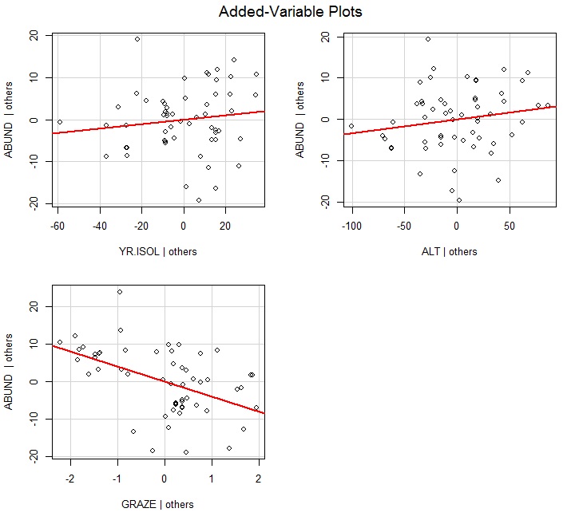
3D Response surfaces (es gibt Packages, um dasselbe auch für zwei Prädiktoren gleichzeitig zu machen; dies mach insbesondere Sinn, wenn auch quadratische Terme dabei sind; bei Interesse bitte googlen)
Information theoretician approach und multimodel inference
Vergleich mit frequentist statistics
Es gibt zwei grundlegende statistische Philosophien:
Frequentist statistics („klassisiche” Statistik)
- Alles, was wir bislang gemacht haben
- Grundannahme: Es gibt ein einziges richtiges Modell der Wirklichkeit, dem man sich mit Irrtumswahrscheinlichkeitenannähern kann
- Nutzt p-Werte
Information theoretician approach
- Das, was wir in diesem Unterkapitel besprechen
- Grundannahme: Es kann ähnlich gute Modelle der Wirklichkeit geben, es gibt nicht das eine wahre Modell
- Nutzt keine p-Werte
- Dafür AIC (Akaike information criterion) oder BIC (Bayesian information criterion)
- Modellmittelung (model averaging) möglich
Masse der Modellgüte: AIC, BIC, AICc, Δi, Evidence ratios, Akaike weights
Die folgende Übersicht zeigt die wichtigsten Gütemasse im Vergleich. Wie schon besprochen, berücksichtigt R²adj. (nahezu) ausschliesslich den Fit (also die Anpassung der Kurve an die Daten). Dagegen berücksichtigen die Informationskriterien Fit und Komplexität (Komplexität meint das Gegenteil von Parsimonität). Bei AICc und BIC = SC fliesst schliesslich auch noch die Zahl der Datenpunkte ein:
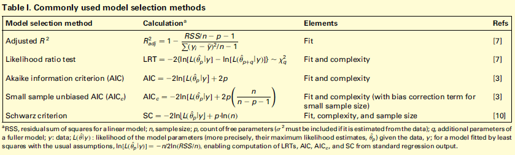
(aus Johnson & Omland 2004)
Dabei gilt für AIC:
\(AIC = \text{n}(ln(RSS)) - \text{n} \times ln(n) + 2 (k+1)\) mit:
- RSS = Residual sum of squares
- k = Parameter des Models, inkl. Achsenabschnitt
- n = Anzahl der Beobachtungen/Replikate
AICc ist der AIC für „kleine” Stichprobengrössen
(wobei „klein” bis zu 40 k reicht, also bei 2 Parametern wie in einer einfachen linearen Regression „gross” erst bei 81 Datenpunkten begänne). Deshalb und da sich für grosses n AICc asymptotisch AIC nähert, sollte man einfach immer AICc verwenden.
AIC und BIC entstammen wiederum etwas unterschiedlichen Philosophien. Auf die Unterschiede gehen wir nicht im Detail ein. Die Ergebnisse basierend auf BIC und AICc sind in dem Kontext wie wir sie hier vorstellen (BIC mit nicht-informativen priors) nahezu gleich. BIC wird relevant, wenn man informative priors verwenden kann (aber das sprengt den Kurs).
Es gilt folgendes für AIC, AICc und BIC analog:
Der absolute Wert eines Informationskriteriums ist belanglos (ob also -1000, 0.1 oder +1000000). Informationskriterien können nur im Vergleich zweier Modelle für die gleichen Daten sinnvoll angewandt werden. Dann ist das Modell mit dem niedrigeren Wert das bessere (bei gemeinsamer Betrachtung von Fit und Komplexität).
∆i = AICi – AICmin ∆i ist die Differenz im AIC (oder eines anderen Informationskriteriums) zwischen einem bestimmten Modell i und dem jeweils besten Modell im Vergleich. Dabei wird meist die folgende Konvention verfolgt:
- wenn ∆i ≤ 2: Modelle sind statistisch „gleichwertig”
- wenn ∆i > 4: Modell nicht relevant
Likelihood von Modell gi für die Daten: \(L = exp(-\frac{1}{2}\Delta_i)\)
Evidence ratio: (etwa: wie vielfach besser ist das beste Modell verglichen mit Modell i?) \(ER = \frac{L_{best}}{L_i}\)
Akaike weights: Normalisierte Likelihoods über alle verglichenen Modelle: \(W_i = \frac{exp(-\frac{1}{2}\Delta_i)}{\sum{[exp(-\frac{1}{2}\Delta_j]}}\)
∆i, Likelihood, ER und Akaike weights stehen alle für die gleiche Information in verschiedenen Darstellungen/Transformationen. Als besonders praktisch erweisen sich die Akaike weights Wi. Nach ihrer Definition summieren sich die Akaike weights aller verglichenen Modelle zu 1. Wi kann daher als die Wahrscheinlichkeit interpretiert werden, dass Modell i unter den verglichenen Modellen das beste ist.
Da AIC und p-Werte aus verschiedenen und nicht kompatiblen statistischen Philosophien stammen, sollte man in einer mit Informationskriterien arbeitenden Studie nicht zusätzlich auch noch p-Werte angeben. R²-Werte sind dagegen in beiden „statistischen Welten” sinnvoll und wichtig.
Multimodel inference
Der Charme der Informationskriterien ist, dass sie sich besonders gut dann eignen, wenn man viele verschiedene Modelle vergleicht, etwa weil man ein grössere Zahl von potenziellen Prädiktoren erhoben hat, mit denen man eine abhängige Variable erklären will, etwas in einer multiplen Regression oder einer mehrfaktoriellen ANOVA oder einem sonstigen komplexen Modell. Wenn man sich ein globales Modell mit n Termen (Achsenabschnitt und neun Steigungen für Prädiktorvariablen, transformierte Prädiktorvariablen oder Interaktionen zwischen Prädiktorvariablen) vorstellt, beinhaltet das 2n Einzelmodelle für alle möglichen Kombinationen der Terme von 0 bis n Prädiktoren. Bei n = 10 wären das bereits 1024 verschiedene Modelle. Diese alle zu berechnen ist ein grosser Aufwand, weswegen man früher versucht hat, in solchen Fällen das minimal adäquate Modell in einer weniger rechenaufwändigen Weise zu finden, indem man eine stepwise forward/backward variable selection durchgeführt hat (siehe Kapitel „Modellvereinfachung” oben). Heute ist das Ausrechnen von 1000 Modellen selbst auf einem einfachen Notebook nur noch eine Sache von Sekunden, d.h. man kann seine Entscheidung effektiv auf dem Vergleich aller mit den verfügbaren Variablen möglichen Teilmodelle gründen. Die dredge-Funktion im MuMIn-Paket macht genau dieses. Bis etwa 15 Terme (d. h. 32768 zu vergleichende Modelle) funktioniert dredge auch auf einfachen Notebooks noch im Bereich weniger Minuten (aber man muss schon merklich auf das Ergebnis warten); jeder weitere Term führt aber zu einer Verdopplung der Rechenzeit.
Schauen wir uns das anhand des schon bekannten loyn-Datensatzes (Vogelvorkommen in Waldfragmenten) an:
library(MuMIn)
global.model <- lm (ABUND ~ YR.ISOL + ALT + GRAZE, data=loyn)
options(na.action="na.fail")
allmodels <- dredge(global.model)
allmodelsModel selection table
(Int) ALT GRA YR.ISO df logLik AICc delta weight
3 34.370 -4.981 3 -194.315 395.1 0.00 0.407
4 28.560 0.03191 -4.597 4 -193.573 395.9 0.84 0.267
7 -62.750 -4.440 0.04898 4 -193.886 396.6 1.46 0.196
8 -73.580 0.03285 -4.017 0.05143 5 -193.087 397.4 2.28 0.130
6 -348.500 0.07006 0.18350 4 -200.670 410.1 15.03 0.000
5 -392.300 0.21120 3 -203.690 413.8 18.75 0.000
2 5.598 0.09515 3 -207.358 421.2 26.09 0.000
1 19.510 2 -211.871 428.0 32.88 0.000Wie man sieht, wurde hier zunächst ein globales Modell mit den drei Prädiktoren YR.ISOL, ALT und GRAZE erstellt. Im nächsten Schritt wurde dann mit der dredge-Funktion dann ein Objekt allmodels generiert, das die 23 = 8 möglichen Teilmodelle enthält. In der Tabellenausgabe sieht man, dass unter diesen Modell Nr. 3, das nur einen Achsenabschnitt und GRAZE enthält mit einem Akaike weight von 0.407 das beste Modell ist. Allerdings unterscheiden sich die Modelle Nr. 4 und 7 um weniger als 2 AICc-Einheiten, sind also als praktisch gleichwertig zu betrachten. Sie haben daher auch nur etwas geringere Variable importances von 0.267 und 0.196.
Anders als bei der frequentist statistician-Ansatz geht es nicht darum, ein einziges bestes Modell zu finden, sondern eine Aussage über ein Ensemble von plausiblen Modellen zu treffen. Es gibt hier zwei gängige Ansätze, Variable importance und Model averaging.
Variable importance steht dabei für die Summe der Wi-Werte aller Teilmodelle, die eine bestimmte Variable enthalten. Da Wi selbst von 0 bis 1 reicht, gilt dies auch für die Variable importance. Eine Variable importance von 1 bedeutet dabei, dass alle plausiblen Modelle die entsprechende Variable beinhalten. Mithin sagt uns die Variable importance wie bedeutsam eine bestimmte Variable innerhalb der Menge der verglichenen Teilmodelle ist. Aber Achtung: Variable importance hat nichts mit Signifikanz oder p-Werten zu tun!!! Es gibt keine generelle Konvention, ab welcher Variable importance eine Variable als bedeutsam angesehen wird, aber häufig wird 50 % als Schwelle verwendet. In R geht das folgendermassen:
importance(allmodels) GRAZE ALT YR.ISOL
Importance: 1.00 0.40 0.33
N containing models: 4 4 4 Während logischerweise jede der drei Variablen in jeweils vier Teilmodellen vorkommt, unterscheiden sie sich erheblich in der Variable importance. Alle nach der obigen Tabelle relevanten Modelle (∆i < 4) enthalten GRAZE, aber nur je zwei von ihnen auch die beiden anderen Variablen. Entsprechend ist die Variable importance von GRAZE nahe 1, während sie von ALT und YR.ISOL unter 0.5 liegt.
Model averiging ist eine andere interessante Möglichkeit des Information theoreticion-Ansatzes und der Multimodel inference. Hier werden quasi alle möglichen Modelle oder alle Modelle mit einem ∆i unter einem bestimmten Schwellenwert zu einem gemittelten Modell zusammengefasst, gewichtet nach ihrem Wi-Wert. Am Ende bekommt man eine einzige gemittelte Funktion, deren Funktionsparameter man interpretieren und die man plotten kann.
avgmodel <- model.avg(get.models(dredge(model,rank="AICc"),subset=TRUE))
summary(avgmodel)full average)
Estimate Std. Error Adjusted SE z value Pr(>|z|)
(Intercept) -0.29874 77.23966 78.39113 0.004 0.997
GRAZE -4.64605 0.89257 0.91048 5.103 3e-07 ***
ALT 0.01282 0.02311 0.02340 0.548 0.584
YR.ISOL 0.01631 0.03883 0.03941 0.414 0.679 Man beachte, dass der Output auch einen p-Wert enthält, obwohl dieser im AIC-Kontext nicht sinnvoll ist.
Zusammenfassung
Eine ANCOVA kommt zur Anwendung, wenn auf die abhängige Variable sowohl eine kategoriale als auch eine metrische Prädiktorvariable einwirken.
Auch eine polynomiale Regression ist ein lineares Modell und kann u. a. dazu dienen, auf einfache Weise einen unimodalen Zusammenhang zu beschreiben.
Multiple Regressionen sind lineare Regressionen mit mehreren Prädiktoren.
Bei multiplen Regressionen muss man die weitgehende Unabhängigkeit der ins globale Modell eingespeisten Variablen sicherstellen.
Für die Suche nach dem minimalen adäquaten Modell kommen unterschiedliche Strategien infrage, wie die schrittweise Entfernung nicht-signifikanter Terme aus dem globalen Modell oder Auswahl des besten Modells aus allen möglichen Modellen mittels AICc.
AICc ist ein Gütemass im information theoretician approach. AICc-Werte sind nur im Vergleich mit anderen AICc-Werten für die gleichen Daten informativ; dann bezeichnet der niedrigste AICc-Wert das beste Modell.
«Frequentist approach» («Standardstatistik») und «information theoretician approach» sind zwei verschiedene statistische «Philosophien», die man nicht in ein und derselben Auswertung kombinieren sollte: also entweder p-Werte oder AICc-Werte; R² macht dagegen in beiden «Welten» Sinn.
Weiterführende Literatur
Crawley, M.J. 2015. Statistics – An introduction using R. 2nd ed. John Wiley & Sons, Chichester, UK: 339 pp.
- Chapter 7: Regression (pp. 140–141)
- Chapter 9: Analysis of Covariance
- Chapter 10: Multiple Regression
- Chapter 12: Other Response Variables (p. 233 [AIC])
Burnham, K.P. & Anderson, D.R. 2002. Model selection and multimodel inference – a practical information-theoretic approach. 2nd ed. Springer, New York, US: 488 pp.
Johnson, J.B. & Omland, K.S. 2004. Model selection in ecology and evolution. Trends in Ecology and Evolution 19: 101–108.
Logan, M. 2010. Biostatistical design and analysis using R. A practical guide. Wiley-Blackwell, Oxford, UK: 546 pp., v.a.
- pp. 208-253 (Multiple und nicht-lineare Regressionen)
Quinn, P.Q. & Keough, M.J. 2002. Experimental design and data analysis for biologists. Cambridge University Press, Cambridge, UK: 537 pp.
Statistik 4: Komplexere Regressionsmethoden
Heute geht es hauptsächlich um generalized linear models (GLMs), die einige wesentliche Limitierungen von linearen Modellen überwinden. Indem sie Fehler- und Varianzstrukturen explizit modellieren, ist man nicht mehr an Normalverteilung der Residuen und Varianzhomogenität gebunden. Bei generalized linear regressions muss man sich zwischen verschiedenen Verteilungen und link-Strukturen entscheiden. Spezifisch werden wir uns die Poisson-Regressionen für Zähldaten und die logistische Regression für ja/nein-Daten anschauen. Danach folgt ein Einstieg in nicht-lineare Regressionen, die es erlauben, etwa Potenzgesetze oder Sättigungsfunktionen direkt zu modellieren. Zum Abschluss gibt es einen Ausblick auf Glättungsverfahren (LOWESS) und general additive models (GAMs).
Lernziele
Ihr… - habt den Unterschied zwischen linearen und nicht-linearen Regressionen verstanden und könnt eine einfache nicht-lineare Regression in R implementieren; - habt verstanden, worin sich GLMs von linearen Regressionen unterscheiden und wann sie zur Anwendung kommen; könnt die beiden häufigsten GLM-Typen logistische Regression und (Quasi-) Poisson-Regression in R richtig anwenden und die Ergebnisse interpretieren; und
- wisst, wofür LOWESS und GAM stehen und wie man sie anwendet.
Von linearen Modellen zu GLMs
Zwei Beispiele
Nehmen wir an, wir wollten modellieren, wie viele Besucher an einem Strandabschnitt zur Mittagszeit in Abhängigkeit von der herrschenden Lufttemperatur anzutreffen sind. Unsere Daten sehen folgendermassen aus und mit den bekannten Methoden können wir ein lm rechnen, dessen Ergebnis signifikant ist und sogar recht viel der Gesamtvarianz erklärt:


Unsere abhängige Variable ist eine Zählung und verhält sich daher anders als eine echte metrische Variable (etwa einer Messung des pH-Wertes). Zähldaten stellen lineare Modelle (lm) vor vier Probleme:
Lineare Modelle sagen immer auch das Auftreten negativer Werte voraus, wohingegen absolute Häufigkeiten immer positive Ganzzahlen sind (im obigen Beispiel würde das Modell bereits im gefitteten Bereich, unter etwa 12 °C, negative Menschen vorhersagen).
Nahezu immer sind Zähldaten rechtsschief verteilt, also nicht normalverteilt und auch nicht symmetrisch
Bei Zähldaten nimmt nahezu immer die Varianz mit dem Mittelwert zu.
Zähldaten folgen keiner kontinuierlichen (wie die Normalverteilung), sondern einer diskreten Verteilung.
Theoretisch sind also die Voraussetzungen für ein lineares Modell bei Zähldaten nie erfüllt. In der Praxis gibt es aber Situationen, wo die Verletzung der Annahmen für das Modell nicht weiter problematisch ist und man mit einem lm zu korrekten Aussagen gelangen kann. Relativ problemlos funktioniert das (und wird auch noch häufig getan), wenn (a) alle Werte der Antwortvariablen weit von 0 entfernt sind und (b) die Werte der Antwortvariable um deutlich weniger als eine Grössenordnung (d.h. Faktor 10) variieren. Im obigen Beispiel beträgt der Quotient des grössten und kleinsten Wertes der Antwortvariablen 2000 / 12 = 167. Mit etwas Erfahrung sehen wir schon im Scatterplot, dass hier Linearität und Varianzhomogenität verletzt sind.
Ein anderes Beispiel, bei dem ein lineares Modell offensichtlich und immer scheitern würde, wäre eine Befragung von Touristen an Tagen unterschiedlicher Temperatur, ob sie schwimmen gegangen sind. Das Ergebnis könnte wie folgt aussehen (stark gekürzte Tabelle, an jedem Tag (d.h. bei gleicher Temperatur) wurden jeweils mehrere Touristen befragt):

Bei solchen „binären Daten” bestehen zwei hauptsächliche Probleme für lineare Modelle:
Die Werteverteilung ist nach unten und nach oben begrenzt.
Es gibt überhaupt nur zwei mögliche Werte, nein und ja, als 0 und 1 codiert.
Die Idee der Generalized linear models (GLMs)
Generalized linear models (GLMs)** verallgemeinern lineare Modelle (LMs)**, um Fälle wie die geschilderten (Zähldaten, Binärdaten, für weitere Beispiele siehe Crawley (2015)) modellieren zu können. „Generalisiert” heissen die GLMs aus folgenden drei Gründen:
Alle LMs sind im Begriff GLM eingeschlossen (aber viele GLMs sind keine LMs).
Die Verteilung der „Zufallskomponente” (= Residuen) kann sich von einer Normalverteilung unterscheiden (muss aber aus der exponentiellen Familie von Verteilungen sein).
Die abhängige Variable kann auf verschiedene Weise mit den Prädiktoren verknüpft (linked) sein.
Die drei Komponenten eines GLM
Ein GLM setzt sich aus drei Komponenten zusammen, die relativ frei kombiniert werden können (aber für bestimmte Zufallskomponenten gibt es Standard-Link-Funktionen):
- Zufallskomponente (d. h. die Verteilung der Residuen):
- normal
- binomial: z. B. ja/nein, tot/lebendig
- Poisson: Zähldaten (funktioniert aber nicht immer)
- gamma
- negativ binomial (Dispersionsparameter muss geschätzt werden)
- Systematische Komponente (d. h. die x-Werte): es ist alles möglich, was wir schon von LMs her kennen:
- kontinuierliche (metrische) Prädiktoren
- kategoriale Prädiktoren
- Interaktionen von Prädiktoren
- polynomiale Funktionen
- jewede Kombination aus den vorhergehenden Elementen
- Link-Funktion:
- Identität (identity)
- log (für Zähldaten)
- logit (für Binärdaten)
Mögliche Verteilungen von Werten und von Varianzen
Was mit verschiedenen Verteilungen der Residuen gemeint ist, veranschaulichen die folgenden beiden Abbildungen von vier Häufigkeitsverteilungen mit dem gleichen Mittelwert. Oben sind die kontinuierliche Normalverteilung und unten drei unterschiedliche diskrete Verteilungen (Poisson, negativ-binomial) zu sehen:

Auch die Beziehung von Varianzen zum (vorhergesagten) Mittelwert müssen keinesfalls immer konstant sein, wie wir das von den linearen Modellen kennen. Vielmehr zeigen viele Datentypen eine systematische Veränderung der Varianz mit dem Mittelwert:

(aus Crawley 2015)
Typen von GLMs
Eine Übersicht gängige GLM-Typen bietet die folgende Tabelle (man beachte die uneinheitliche Gross-/Kleinschreibung der Verteilungen):

(übersetzt und modifiziert nach Šmilauer 2017)
Man beachte, dass ein GLM mit Normalverteilung (gaussian) und identity-Link identisch mit einem LM ist.
Wenn man dieser Anleitung strikt folgen würde (was auch Smilauer 2017 nicht tut), dürfte man LMs nur dann verwenden, wenn die Antwortvariable auch negative Werte annehmen kann und ansonsten ein Gamma-GLM rechnen. In Realität werden Gamma-GLMs aber fast ausschliesslich für death and failure-Daten verwendet, bei denen die Varianz mit dem Quadrat des Mittelwertes zunimmt.
GLMs mit binomialer, Poisson, Gamma- und Gauss (Normal)-Verteilung sind in Base R implementiert, für negative.binomial benötigt man das Package MASS. In diesem Kurs gehen wir im Detail nur auf die beiden meistbenutzten GLM-Typen ein, Poisson-Regression für Zähldaten und logistische Regression für Binärdaten. Mehr zu den übrigen Typen findet man u. a. in Crawley (2015), Dunn & Smyth (2018) und Fox & Weisberg (2019)
Das Fitten und die Modellgüte von GLMs
Bei einem linearen Modell (LM) wird die Lösung durch Minimierung der Summe der Abweichungsquadrate erzielt. Diese Lösung lässt sich direkt, immer eindeutig und sogar von Hand ausrechnen. GLMs dagegen fitten die Modelle in einem iterativen Verfahren, indem die Likelihood maximiert wird. Deswegen spricht man auch von Maximum likelihood (ML). Nach erfolgtem Fitten werden die Werte mit der Umkehrfunktion der Link-Funktion auf die originale Skala zurücktransformiert.
Als Mass der Variabilität oder lack of fit wird bei GLMs die Devianz D verwendet, die folgendermassen definiert ist:
Di = –2 × log likelihood (Modelli | Daten)
Je nach GLM-Typ wird die Devianz anders berechnet:

(aus Crawley 2015)
Poisson-Regressionen für Zähldaten
Berechnung
Die Struktur des glm-Befehls in R ist genau identisch mit jenem des lm-Befehls. Nur muss man zusätzlich die Verteilung (family) und ggf. die Link-Funktion (wenn nicht die Standard-Link-Funktion der jeweiligen Verteilung) angeben. Schauen wir uns nun die Ergebnisse für unsere Zähldaten der Strandbesucher an, zunächst mit einem LM, dann mit einem Gauss-GLM und schliesslich mit einem Poisson-GLM:
lm.strand <- lm(Besucher~Temperatur)
glm.gaussian <- glm(Besucher~Temperatur,family=gaussian)
glm.poisson <- glm(Besucher~Temperatur,family=poisson)
summary(lm.strand)Coefficients:
Estimate Std. Error t value Pr(>|t|)
(Intercept) -855.01 290.54 -2.943 0.021625 *
Temperatur 67.62 11.80 5.732 0.000712 ***summary(glm.gaussian)Coefficients:
Estimate Std. Error t value Pr(>|t|)
(Intercept) -855.01 290.54 -2.943 0.021625 *
Temperatur 67.62 11.80 5.732 0.000712 ***summary(glm.poisson)Coefficients:
Estimate Std. Error z value Pr(>|z|)
(Intercept) 3.500301 0.056920 61.49 <2e-16 ***
Temperatur 0.112817 0.001821 61.97 <2e-16 ***Wie nach den Erläuterungen im vorigen Kapitel zu erwarten war, sind die Ergebnisse des LMs und des Gauss-GLMs vollkommen identisch. Jene des Poisson-GLMs sind dagegen anders, insbesondere viel höher signifikant.
Interpretation und Visualisierung der Ergebnisse
Im Falle des lm können wir aus den Parameter-Schätzungen (Spalte Estimate im summary) direkt die sich ergebende Funktionsgleichung aufschreiben:
Besucher = –855 + 68 ∙ Temperatur/°C
Bei einem glm sind die Parameter-Schätzungen dagegen nicht direkt interpretierbar, da sie sich auf eine transformierte Skala beziehen, welche durch die Link-Funktion angegeben ist. Die Standard-Link-Funktion bei einem Poisson-GLM ist log, also der natürliche Logarithmus (ln). Unser Ergebnis lässt sich damit wie folgt schreiben:
ln (Besucher) = 3.50 + 0.11 ∙ Temperatur/°C
Da uns aber nicht ln (Besucher), sondern die Besucherzahl selbst interessiert, müssen wir die Umkehrfunktion der Link-Funktion anwenden, bei ln also exp. Es ergibt sich:
Besucher = exp (3.50 + 0.11 ∙ Temperatur/°C)
Damit können wir auch die vorhergesagten Werte für verschiedene Temperaturen berechnen:
0 °C: Besucher = exp (3.50) = 33
30 °C: Besucher = exp (3.50 + 30 ∙ 0.11) = exp. (6.83) = 925
Wenn wir das Ganze Plotten wollen, benötigen wir den predict- und den lines-Befehl. Wie man, sieht muss auch hier auf die vorhergesagten Werte beim Plotten noch die Umkehrfunktion (exp) angewandt werden:
xv <- rep(0:40,by=.1)
plot(Temperatur,Besucher,xlim=c(0,40))
yv <- predict(lm.strand,list(Temperatur=xv))
lines(xv, yv,lwd=3,col="blue")
yv2 <- predict(glm.poisson,list(Temperatur=xv))
lines(xv, exp(yv2),lwd=3,col="red")
Overdispersion als Problem
Mathematisch beschreibt die Poisson-Verteilung Ereignisse pro Zeiteinheit, wenn sie mit einer bestimmten Rate (Mittelwert) erfolgen, die Ereignisse selbst aber unabhängig voneinander sind. Für ökologische/umweltwissenschaftliche Zähldaten sind diese Voraussetzungen oft nicht exakt gegeben, sie folgen daher nicht immer genau einer Poisson-Verteilung, sondern weisen teilweise eine Overdispersion auf. Für eine Poisson-Regression wird eine Dispersion = Residual deviance / Residual degrees of freedom = 1 angenommen. Wenn die Dispersion wesentlich/signifkant grösser als 1 ist, liegt Overdispersion vor. Residual deviance und Residual degrees of freedom findet man im summary des glm:
summary(glm.poisson)[…]
(Dispersion parameter for poisson family taken to be 1)
Null deviance: 6011.8 on 8 degrees of freedom
Residual deviance: 1113.7 on 7 degrees of freedom
AIC: 1185.1Man sieht hier, dass der Quotient von 1113.7 und 7 weit höher als 1 ist. Mit dem Dispersionstest im Package AER kann man formal auf einen signifikanten Unterschied testen:
library(AER)
dispersiontest(glm.poisson)data: glm.poisson
z = 3.8576, p-value = 5.726e-05
alternative hypothesis: true dispersion is greater than 1
sample estimates:
dispersion
116.5467 Wenn man eine signifikante Overdispersion gefunden hat, gibt es zwei Lösungsmöglichkeiten:
- Quasi-Poisson-Verteilung. Hierbei schätzt der Algorithmus den Dispersionsparameter aus den Daten und passt die angenommene Verteilung entsprechend an. Die Methode ist im Befehl glm in Base R implementiert:
glm.quasi <- glm(Besucher~Temperatur,family=quasipoisson)
summary(glm.quasi)Coefficients:
Estimate Std. Error t value Pr(>|t|)
(Intercept) 3.50030 0.69639 5.026 0.00152 **
Temperatur 0.11282 0.02227 5.065 0.00146 **
---
Signif. codes: 0 ‘***’ 0.001 ‘**’ 0.01 ‘*’ 0.05 ‘.’ 0.1 ‘ ’ 1
(Dispersion parameter for quasipoisson family taken to be 149.6826)Man sieht, dass im Vergleich zur Berechnung mit einem einfachen Poisson-GLM die Parameterschätzungen nicht verändert haben, jedoch die Signifikanzen niedriger ausgefallen sind (d. h. höhere p-Werte).
- Negativ-binomiale Verteilung: Oftmals erzielt man damit ähnliche, in besonderen Fällen allerdings auch deutlich andere Ergebnisse. Was besser ist, hängt vom Einzelfall ab und ist u. U. recht „tricky”. Weitere Details, siehe Ver Hoef & Boveng (2007).
Logistische Regressionen für Binärdaten
Logistische Regressionen werden für alle binären Antwortvariablen verwendet, etwa für Vorkommensdaten (Inzidenzdaten). Das folgende Abbildungspaar zeigt links, was passieren würde, wenn man solche Daten mit einem lm fitten würde und rechts, die korrekte Modellierung mit einem logistischen glm:
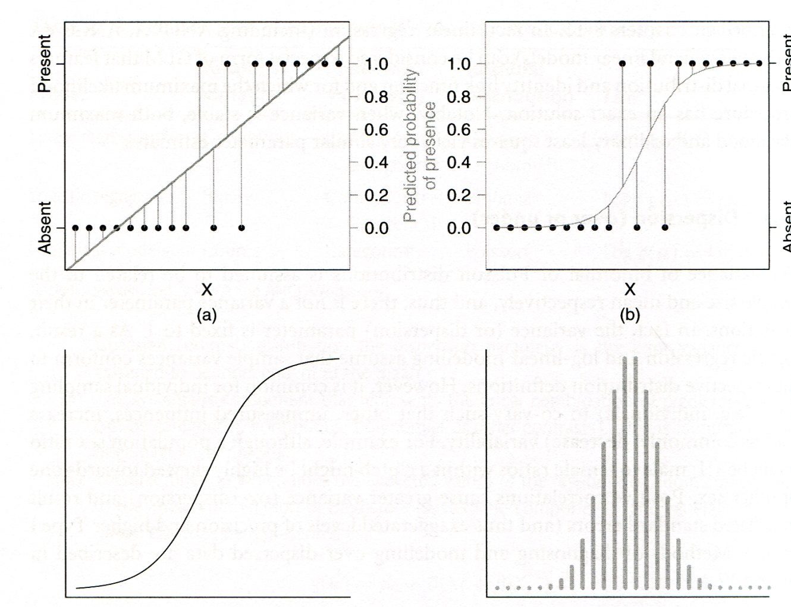
(aus Logan 2010)
Prinzipielles Vorgehen
Die abhängige Variable muss als Vektor vorliegen, der entweder nur 0 und 1 enthält oder aber ein Faktor mit genau zwei Level ist.
Es wird ein glm mit family=binomial gerechnet.
Der voreingestellte Link ist logit, alternativ geht auch log-log.
Overdispersion ist bei Binärdaten nicht relevant.
Wie bei allen (multiplen) Modellen müssen wir eine Modellvereinfachung des vollen Modells vornehmen, wofür im Prinzip die gleichen drei Methoden zur Verfügung stehen, die wir schon kennen:
Modellselektion I: sukzessive Vereinfachung durch Entfernen nicht-signifkanter Terme.
Modellselektion II: sukzessive Vereinfachung mittels Vergleich der Devianzen zweier Modelle mit Chi-Quadrat-Test (Achtung: Unterschied zu lm, wo wir eine ANOVA, d. h. eine F-Test verwendet haben).
Modellselektion III: mittels AICc: Berechnung aller möglichen Modelle und dann entweder Auswahl jenes mit dem niedrigsten AICc oder Multimodel inference.
Die Theorie dahinter
Das „logit” (L) ist ein zentrales Element der logistischen Regression. Ein logit ist als der natürliche Logarithmus eines „odds” definiert. „Odds” hatten wir schon kurz beim Vierfelder-Assoziationstest (Chi-Quadrat- bzw. Fishers exakter Test). Sie bezeichnen die Wahrscheinlichkeit eines Ereignisses durch die „Gegenwahrscheinlichkeit”. Es gilt also Folgendes:
\[L = \ln\left( \frac{p}{1 - p} \right)\]
Warum arbeitet man mit „odds” und „logits”? Wenn man nur p modellieren würde, wären die möglichen Werte auf 0 … 1 begrenzt. „Odds” dagegen können Werte zwischen 0 und ∞ annehmen. Der Logarithmus schliesslich sorgt für eine symmetrische Verteilung der originalen Wahrscheinlichkeiten unter 50 % (jetzt zwischen –∞ und 0) und der originalen Wahrscheinlichkeiten über 50 % (jetzt zwischen 0 und +∞).
Bei GLMs wir ja immer die abhängige Variable mit der Link-Funktion transformiert. Damit modelliert eine logistische Regression das folgende Modell (in einer multiplen logistischen Regression ggf. auch mit x1, x2 usw.):
\[\ln\left( \frac{\pi(y)}{1 - \pi(y)} \right) = \ \beta_{0} + \beta_{1}x\]
Modelldiagnostik und Ergebnisse
Die Beurteilung von Validität und Güte/Relevanz eines logistischen Modells unterscheidet sicher erheblich von einem lm:
Eine visuelle Inspektion der Residualplots ist hier nicht informativ.
Es gibt diverse numerische Goodness-of-fit-Tests für das Modell, am einfachten der Vergleich der Abweichung der Devianz (G²) von der geforderten Χ²-Verteilung.
Das konventionelle Gütemass R² funktioniert ebenfalls nicht. Statt dessen kann man die Modellgüte mit einem Pseudo-R² ausdrücken:
\(R^{2}\)= \(1 -\) \(\frac{Devianz\ Total}{Devianz\ Residuen}\)
Da nicht die abhängige Variable (d. h. die Auftretenswahrscheinlichkeit), sondern ihr logit modelliert wurde, muss man die beiden Parameterschätzungen erst in informative Grössen übersetzen. Es sind dies:
Lagemass (d. h. bei welchem x1-Wert ist die Wahrscheinlichkeit von 0 und 1 gleich hoch; auch als „LD50” = „lethal” does for 50% of the individuals” bezeichnet, basierend auf Anwendungen on logistischen Regressionen in Toxizitätstests): –β0 / β0
Steilheitsmass (d.h. wie scharf/steil ist der Übergang von 0 zu 1, ausgedrückt als die relative Änderung der „odds” bei Zunahme von x1 um eine Einheit): exp (β1)
Umsetzung in R
Schauen wir uns diese ganzen Schritte im Fall unseres Bade-Beispiels an, also der Wahrscheinlichkeit, dass eine Person am Strand schwimmen geht in Abhängigkeit von der Temperatur. Die Definition des Modells in R ist wie gehabt einfach:
model <- glm(bathing~temperature,data=bathing,family="binomial")
summary(model)Coefficients
Estimate Std. Error z value Pr(>|z|)
(Intercept) -5.4652 2.8501 -1.918 0.0552 .
temperature 0.2805 0.1350 2.077 0.0378 *Die uns interessierenden Aspekte Modelldiagnostik, Modellgüte und Kurvenverlauf müsse wir uns daher erst händisch aus dem abgespeicherten Objekt model extrahieren, indem wir auf einzelne darin abgespeicherte Daten zurückgreifen:
#Modeldiagnostik (wenn nicht signifikant, dann OK)
1 - pchisq (model$deviance,model$df.resid)[1] 0.6251679#Modellgüte (pseudo-R²)
1 - (model$dev / model$null)[1] 0.4775749#Steilheit der Beziehung (relative Änderung der
# odds von x + 1 vs.x)
exp(model$coefficients[2])temperature
1.323807#LD50 (also hier: Temperatur, bei der 50% der Touristen baden)
-model$coefficients[1]/model$coefficients[2](Intercept)
19.48311Der erste Wert gibt die Steilheit der Beziehung an und ob sie ansteigend oder fallend ist, wobei 1 keinen Effekt, >1 eine ansteigende Häufigkeit und < 1 eine fallende Häufigkeit bezeichnen. Der zweite Wert (man beachte das Minus-Zeichen in der Formel!) gibt den x-Wert an, für den die berechnete Wahrscheinlichkeit (Vorkommenswahrscheinlichkeit, Sterbewahrscheinlichkeit, usw.) genau 50 % ist.
Ganz einfach vorzustellen ist eine logistische Funktion auch mit diesen Werten noch nicht. Deswegen sollten wir im Falle signifkanter logistischer Regressionen immer zwei Dinge tun: (1) Die Funktionsgleichung angeben und (2) Das Ergebnis visualisieren.
- Die Funktionsgleichung zu extrahieren, ist etwas vertrackt, da wir ja nicht die Auftretenswahrscheinlichkeit y, sondern ihren logit modelliert haben. Übersetzt bedeuten die Estimate-Werte unseres summary also:
ln (y / (1 – y)) = b0 + b1 x
Wir formen sukzessive um, um nach y aufzulösen:
y / (1 – y) = exp (b0 + b1 x)
y = (exp (b0 + b1 x) (1 – y)
y = exp (b0 + b1 x) – y exp (b0 + b1 x)
y + y exp (b0 + b1 x) = exp (b0 + b1 x)
y (1 + exp (b0 + b1 x)) = exp (b0 + b1 x)
y = exp (b0 + b1 x) / (1 + exp (b0 + b1 x))
Oder mit den Werten in unserem Fall:
y = exp (–5.47 + 0.28 x) / (1 + exp (–5.47 + 0.28 x))
- Das Visualisieren geht relativ einfach mit dem predict-Befehl (hier einschliesslich Standardfehler):
xs <- seq(0,30,l=1000)
model.predict <-predict(model,type="response",se=T,newdata=data.frame(temperature=xs))
plot(bathing~temperature,data=bathing,xlab="Temperature (°C)",ylab=„% Bathing",pch=16, col="red")
points(model.predict$fit ~ xs,type="l")
lines(model.predict$fit+model.predict$se.fit ~ xs, type="l",lty=2)
lines(model.predict$fit-model.predict$se.fit ~ xs, type="l",lty=2)
Nicht-lineare Regressionen
Beispiele
Nicht-lineare Regressionen finden für funktionelle Beziehungen Anwendung, bei der sich die abhängige Grösse nicht als Linearkombination der Prädiktorvariable(n) darstellen lässt, z. B. wenn diese in Potenzen oder Quotienten auftaucht. (Eine polynomiale Regression ist dagegen, wie wir gesehen haben, immer noch ein lineares Modell, wenngleich eine nicht-lineare Beziehung modelliert wird.)
Zwei häufige Anwendungen nicht-linearer Regressionen sind die Potenzfunktion und verschiedene Sättigungsfunktionen:
Beispiel 1: Potenzfunktion
\(y=b_0x^b\), oft auch als \(y = c x^z\)
Dieses dürfte die am häufigeten verwendet nicht-lineare Funktion sein; sie tritt in fast allen Wissensdisziplinen auf (Nekola & Brown 2007).
b0 bzw. c bezeichnen dabei den vorhergesagten Wert der abhängigen Variable, wenn die unabhängige den Wert 1 hat (da log (1) = 0); der Exponent b1 bzw. z beschreibt dagegen die Geschwindigkeit der relativen Zunahme (z = 1 wäre eine lineare Beziehung).
Solange nicht-lineare Regressionen nicht als einfach verfügbares statistisches Tool bereitstanden, wurden Potenzgesetze durch Logarithmierung beider Achsen in eine lineare Beziehung überführt und mit linearen Modellen analysiert (log y = log b0 + b1 log x).
Das geht gut, solange keine Nullwerte von y vorliegen (für die der Logarithmus nicht definiert wäre).
Man muss aber beachten, dass sich die Ergebnisse unterscheiden, je nachdem, ob man y oder log (y) als abhängige Variable hat. Die beiden Parameterschätzungen sind meist ähnlich, p- und R²-Werte können sich dagegen erheblich unterscheiden und sind zwischen beiden Herangehensweisen nicht vergleichbar. Je nach Situation können aber beide ihre Berechtigung haben (vgl. Dengler 2009).
Beispiel 2: Sättigungsfunktionen
Sogenannte Sättigungsfunktionen finden Anwendung, wenn es nach der Theorie einen oberen Grenzwert für y gibt, dem sich die Funktion mit zunehmendem x asymptotisch annähert.
Eine aus der Enzymkinetik stammende, wegen ihrer Einfachheit aber auch in diversen anderen Disziplinen angewandte Sättigungsfunktion ist die Michaelis-Menten-Funktion:
\[ y = \frac{b_0}{b_1+x} \]
Hierbei steht b0 für den oberen Grenzwert, b1 steht für die Steilheit des Anstiegs.
Es gibt zahlreiche weitere Sättigungsfunktionen, etwa auch eine Verallgemeinerung der logistischen Funktion (die wir als eines der GLM-Modelle kennengelernt haben). Siehe dazu das Unterkapitel „Umsetzung in R” unten.
Unterschiede von linearen und nicht-linearen Regressionen
Lineare Regression
Y ~ β0 + β1 X1 + β2 X2 + β3 X3 + …
Xi kann sein - ein einzelner Prädiktor
- ein transformierter Prädiktor, z.B. log (X), X²
- eine Interaktion Xj × Xk
Nicht-lineare Regression
Y ~ beliebige Funktion von X1, X2, …
„beliebige Funktion” schliesst ein:
- Verhältnisse, z. B.: 1/X; Xi/Xj
- Potenzen, z. B. Xb, bX
- breakpoints, z. B.: for X < b: …; for X ≥ b: …
Bei der Berechnung von linearen vs. nicht-linearen Regressionen gelten folgende Besonderheiten:
Lineare Regressionen haben eindeutige Ergebnisse, die direkt berechnet werden können.
Ergebnisse nicht-linearer Regressionen sind nicht direkt analytisch zugängiglich, sondern nur über eine iterative Optimierungsprozedur. Das hat folgende Implikationen:
Für die Iteratation sind Startwerte und (anfängliche) Schrittweiten erforderlich
Man weiss nie sicher, ob man das globale Optimum gefunden hat (oder in einem lokalen Optimum geendet ist).
Bei ungünstig gewählten Startwerten konvergiert die Iteration möglicherweise gar nicht.
Umsetzung in R
Der Befehl für nicht-lineare Regressionen ist nls, seine Syntax ganz ähnlich zu lm und glm. Die zu schätzenden Parameter muss man selbst benennen. Da die Lösung iterativ gefunden wird, muss man dem Befehl Startwerte für diese Parameter mitgeben.
Man kann beliebige Funktionen selbst definieren, hier gezeigt am Beispiel einer Potenzfunktion:
#Selbsdefinierte Funktionen#
power.model <- nls(ABUND~c*AREA^z, start=(list(c=0,z=1)))
summary(power.model)Formula: ABUND ~ c * AREA^z
Parameters:
Estimate Std. Error t value Pr(>|t|)
c 13.39416 1.30721 10.246 2.87e-14 ***
z 0.16010 0.02438 6.566 2.09e-08 ***Oder man greift auf die in R bereits vordefinierten Funktionen (sogenannte Selbststartfunktionen [SS] zurück). Hier am Beispiel der logistischen Funktion als einer möglichen Sättigungsfunktion gezeigt (Man beachte, dass diese logistische Funktion nicht identisch mit jener aus der logistischen Regression ist, da wir es (a) mit einer nicht-binären Antwortvariable zu tun haben und (b) der Sättigungswert nicht automatisch 1 ist, sondern aus den Daten geschätzt wird). Mehr zu Selbststartfunktionen von nls findet man in der R-Hilfe, im Buch von Ritz & Streibig (2008), sowie dem Auszug daraus, der in Moodle bereitsteht.
#Vordefinierte "Selbststartfunktionen"#
logistic.model <- nls(ABUND~SSlogis(AREA, Asym, xmid, scal))
summary(logistic.model)Formula: ABUND ~ SSlogis(ABUND, Asym, xmid, scal)
Parameters:
Estimate Std. Error t value Pr(>|t|)
Asym 31.306 2.207 14.182 < 2e-16 ***
xmid 6.501 2.278 2.854 0.00614 **
scal 9.880 3.152 3.135 0.00280 ** Die grösste Herausforderung bei nls sind die Startwerte, da bei ungeeigneten Startwerten, das Modell möglicherweise gar nicht konvegiert oder in einem lokalen Optimum hängen bleibt und das globale Optimum nicht findet. Hier ist es wichtig, ein gutes Verständnis für die Funktionsparameter der jeweiligen Funktion zu haben und damit eine Erwartungshaltung, wie gross sie im Allgemeinen sind bzw. wie gross sie im konkreten Fall sein könnten. Für’s Allgemeine können wir die Theorie und ähnliche Untersuchungen in der Literatur konsultieren. Für den z-Wert einer Artenzahl-Areal-Beziehung, die mit Potenzgesetz modelliert wird, sagt uns die Theorie, dass dieser zwischen 0 und 1 liegen muss, und empirische Ergebnisse zeigen, dass er meist zwischen 0.2 und 0.25 liegt. Wenn wir hier also einen Startwert für z von –1 oder 1000 eingeben würden, hätte nls vermutlich ein Problem und würde kein Ergebnis oder ein falsches Ergebnis ausspucken. Bei der logistischen Regression wissen wir, dass der Parameter Asym für den Sättigungswert steht. In unserem Fall wäre also die maximale tatsächliche Artenzahl ein brauchbarer Startwert, den wir mit Blick auf die Originaldaten (summary oder Scatterplot) ermitten können.
Wenn wir zwischen unterschiedlichen nicht-linearen Modellen auswählen wollen, dann kommen dafür nur die Informationskriterien in Frage, da eine ANOVA hier nicht funktioniert (diese funktioniert nur für geschachtelte Modelle). Wollen wir unsere beiden zuvor berechneten Modelle vergleichen, brauchen wir das Package AICcmodavg:
library(AICcmodavg)
cand.models <- list()
cand.models[[1]] <- power.model
cand.models[[2]] <- logistic.model
Modnames <- c("Power", "Logistic")
aictab(cand.set = cand.models, modnames = Modnames) K AICc Delta_AICc AICcWt Cum.Wt LL
Logistic 4 386.86 0.00 0.99 0.99 -189.04
Power 3 396.17 9.31 0.01 1.00 -194.86In unserem Fall wäre also das logistische Modell trotz einem zusätzlichen gefitteten Parameter (k = 4 statt k = 3; hier ist die geschätzte Varianz mitgezählt) das klar bessere Modell (Akaike Weight von 0.99).
Glättungsfunktionen und GAMs
Glättungsfunktionen
Glättungsfunktionen (smoother) sind keine statistischen Verfahren** im eigentlichen Sinn. Vielmehr dienen sie der Visualisierung eines komplexen Zusammenhanges und können so helfen, geeignete inferenzstatistische Verfahren auszuwählen. Es gibt zahlreiche solche smoother:
- Gleitender Median
- LOESS
- LOWESS
- Kernel
- Splines
- […]
Anhand von LOWESS (Locally weighte scatterplot smoothing) soll gezeigt werden, was ein smoother macht. In der Regel hat eine Glättungsfunktion zumindest einen wählbaren Parameter, welcher bestimmt, wie stark die Glättung ausfällt, im Fall von LOWESS ist dies f:
plot(ABUND~log_AREA)
lines(lowess(log_AREA,ABUND,f=0.25), lwd=2, col="red")
lines(lowess(log_AREA,ABUND,f=0.5), lwd=2, col="blue")
lines(lowess(log_AREA,ABUND,f=1), lwd=2, col="green")
GAMs (Generalized additive models)
Generalised additive modesls (GAMs) arbeiten auf den ersten Blick ähnlich wie Smoother, doch handelt es sich bei GAMs um ein inferenzstatistisches Verfahren:
Bei einem GAM handelt es sich im Prinzip um ein lineares Modell (oder ein GLM), bei dem die einzelnen Parameter nicht fix, sondern eine smoothing function sind:
y = β0 + f1 (x) + f2 (x) + …Man bekommt ein Modell mit den üblichen Gütemassen wie p oder AICc.
Die Freiheitsgrade sind geschätzt und nicht ganzzahlig.
Man muss smoothing function und smoothing parameter definieren.
(Man muss auch Link-Funktion und Wahrscheinlichkeitsverteilung angeben, wie bei GLMs).
In R geht das folgendermassen (für den gleichen Datensatz, über den wir vorhin die Smoother haben laufen lassen). Da das Festlegen der smoothing parameter eine Kunst für sich ist, nehmen wir hier die default-Werte des Programms.
library(mgcv)
model <- gam(ABUND~s(log_AREA))
summary(model)Parametric coefficients:
Estimate Std. Error t value Pr(>|t|)
(Intercept) 19.5143 0.9309 20.96 <2e-16 ***
---
Signif. codes: 0 ‘***’ 0.001 ‘**’ 0.01 ‘*’ 0.05 ‘.’ 0.1 ‘ ’ 1
Approximate significance of smooth terms:
edf Ref.df F p-value
s(log_AREA) 2.884 3.628 21.14 6.63e-11 ***
---
Signif. codes: 0 ‘***’ 0.001 ‘**’ 0.01 ‘*’ 0.05 ‘.’ 0.1 ‘ ’ 1
R-sq.(adj) = 0.579 Deviance explained = 60.1%
GCV = 52.145 Scale est. = 48.529 n = 56Wie wir sehen, bekommen wir für die Beziehung geschätzte Freiheitsgrade und einen geschätzten p-Wert. Der eigentliche Kurvenverlauf wird dagegen nicht in Parametern ausgedrückt und ist nicht direkt zugänglich. Wir können ihn jedoch plotten:
plot(log_AREA, ABUND, pch=16)
xv <- seq(-1, 4, by=0.1)
yv <- predict(model, list(log_AREA=xv)) lines(xv, yv, lwd=2, col="red")
Zusammenfassend lässt sich sagen, dass GAMs zwar zu den inferenzstatistischen Verfahren gehörten, aber anders als alle anderen derartigen Verfahren, die wir im Kurs kennenlernen kein direkt zugängliches und interpretierbares Modell auspucken. Es ist also kaum möglich, GAMs zwischen verschiedenen Situationen zu vergleichen oder GAMs heranzuziehen, um ein mechanistisches Verständnis der zugrundeliegenden Prozesse zu entwickeln. GAMs sind vor allem dann beliebt, wenn man mutmasslich komplexe Beziehungen mit vielen Prädiktoren hat und es einem nicht um das Modell und seine Parameter an sich geht, sondern um möglichst gute Inter- und Extrapolation auf neue x-Werte. Ein beliebtes Feld sind sogenannte species distribution models (SDMs), die mit aktuellen Artvorkommens- und Umweltdaten „gefüttert” werden, um dann vorherzusagen, wie die Artverbreitung sich unter geänderten Umweltbedingungen (global change-Szenarien) ändern wird.
Zusammenfassung
Generalized linear models (GLMs) erlauben Regressionen mit anderen Varianzstrukturen und Residuenverteilungen als lineare Regressionen.
Unter den GLMs sind zwei besonders gebräuchlich: logistische Regressionen werden für binäre Daten, (Quasi-) Poisson-Regressionen für Zähldaten verwendet.
Nicht-lineare Regressionen erlauben die direkte Modellierung nicht-linearer und nicht-polynomialer Beziehungen.
Typische Fälle für nicht-lineare Regressionen sind die Potenzfunktion und verschiedene «Sättigungsfunktionen» (z. B. Michaelis-Menten-Funktion).
LOWESS dient der Visualisierung eines Trends (explorative Datenanalyse).
Generalized additive models (GAMs) können sowohl zum selben Zweck aber auch zum Aufbauen von prädiktiven Modellen verwendet werden, haben aber anders als typische Regressionstechniken keine leicht interpretier- und vergleichbare Parameter.
Weiterführende Literatur
Crawley, M.J. 2015. Statistics – An introduction using R. 2nd ed. John Wiley & Sons, Chichester, UK: 339 pp.
- Chapter 7: Regression (pp. 142–145 [Non-linear regression], pp. 146–148 [GAMs])**
- Chapter 12: Other Response Variables
- Chapter 13: Count Data
- Chapter 15: Binary Response Variable
Dengler, J. 2009. Which function describes the species-area relationshipbest? – A review and empirical evaluation. Journal of Biogeography 36: 728–744.
Dunn, P.K. & Smyth, G.K. 2018. Generalized linear models with examples in R. Springer, New York, US: 562 pp.
Fox, J. & Weisberg, S. 2019. An R companion to applied regression. 3rd ed. SAGE Publications, Thousand Oaks, CA, US: 577 pp.
Logan, M. 2010. Biostatistical design and analysis using R. A practical guide. Wiley-Blackwell, Oxford, UK: 546 pp., v.a.
- pp. 178-179 (Smoother)
- pp. 208-253 (Multiple und nicht-lineare Regressionen)
- pp. 525-530 (GAMs)
- pp. 483-530 (GLMs)
Nekola, J.C. & Brown, J.H. 2007. The wealth of species: ecological communities, complex systems and the legacy of Frank Preston. Ecology Letters 10: 188–196.
Quinn, P.Q. & Keough, M.J. 2002. Experimental design and data analysis for biologists. Cambridge University Press, Cambridge, UK: 537 pp.
Ritz, C. & Streibig, J.C. 2008. Nonlinear regression with R. Springer, New York, US: 114 pp.
Šmilauer, P. 2017. Modern regression methods. Chapter 2: Generalised linear models for counts and ratios. Unpublished script, České Budějovice, CZ.
Ver Hoef, J.M. & Boveng, P.L. 2007. Quasi-Poisson vs. negative binomial regression: how should we model overdispersed count data? Ecology 88:2766–2772.
Statistik 5: Von linearen Modellen zu GLMMs
In Statistik 5 lernen die Studierenden Lösungen kennen, welche die diversen Limitierungen von linearen Modellen überwinden. Während generalized linear models (GLMs) aus Statistik 4 bekannt sind, geht es jetzt um linear mixed effect models (LMMs) und generalized linear mixed effect models (GLMMs). Dabei bezeichnet generalized die explizite Modellierung anderer Fehler- und Varianzstrukturen und mixed die Berücksichtigung von Abhängigkeiten bzw. Schachtelungen unter den Beobachtungen. Einfachere Fälle von LMMs, wie split-plot und repeated-measures ANOVAs, lassen sich noch mit dem aov-Befehl in Base R bewältigen, für komplexere Versuchsdesigns/Analysen gibt es spezielle R packages. Abschliessend gibt es eine kurze Einführung in GLMMs, die eine Analyse komplexerer Beobachtungsdaten z. B. mit räumlichen Abhängigkeiten, erlauben.
Lernziele
Ihr…
habt verstanden, welche Versuchsdesigns mit einer normalen (Typ I) zweifaktoriellen ANOVA analysiert werden können und welche die Spezifikation eines random factors erfordern;
könnt einfache Fälle von Repeated measures- und Split-plot ANOVAs in R spezifizieren und durchführen (mit aov bzw. lme); und
wisst, wann man generalized linear mixed effect models (GLMMs) anwenden sollte und wie das im Prinzip geht.
Split-plot und Repeated-measures ANOVAs
Die Idee
Beginnen wir mit einer konventionellen 2-faktoriellen ANOVA wie wir sie aus Statistik 2 kennen. Wie in allen linearen Modellen (und ebenso in GLMs) ist eine wesentliche Modellvoraussetzung die Unabhängigkeit der Beobachtungen voneinander. In der folgenden Abbildung ist das für ein experimentelles Setting veranschaulicht, etwa unseren Sortenversuch mit Sorte A und B und den beiden Treatments Freiland und Gewächshaus:
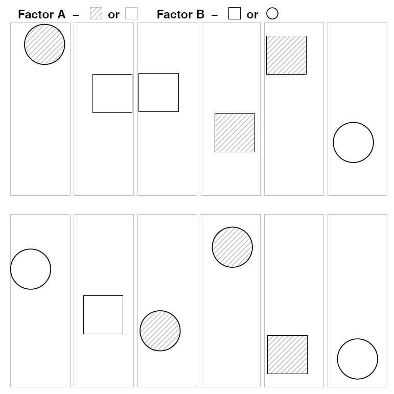
(aus Logan 2010)
Wir sehen, dass alle denkbaren Faktorenkombinationen (hier vier) auftreten (optimalerweise gleich häufig: balanciertes Design), sie aber räumlich zufällig, d. h. voneinander unabhängig angeordnet sind.
Im Gegensatz dazu stehen mehrfaktorielle ANOVAs, bei denen nicht alle Faktorenkombinationen existieren oder es Abhängigkeiten zwischen den Treatments gibt. Hier gibt es zwei Typen:
- Split plot-Design: Dies bezeichnet Situationen, bei denen die Kombinationen der beiden Faktoren nicht unabhängig voneinander räumlich verteilt sind, etwa weil dies mit zu grossem Aufwand verbunden wäre. Stellen wir etwa das Beispiel mit dem Gewächshaus-Freiland-Versuch von oben vor: Schon für die extrem geringe Replizierung von nur drei Wiederholungen pro Faktorenkombination müsste man sechs Gewächshäuser haben, jedes entweder mit Sorte A oder mit Sorte B, die man zudem räumlich zufällig platzieren kann. Logischerweise geht das oftmals nicht. Stattdessen könnte man drei Gewächshäuser haben, in denen man jeweils beide Sorten pflanzt. Dann wäre das Gewächshaus bzw. das entsprechende Freilandbeet der „plot”, der dann zwischen den beiden Sorten aufgeteilt (split) wird. Damit ist aber die Unabhängigkeitsannahme linearer Modelle verletzt, da sich ja die Gewächshäuser unterscheiden könnten, etwa in ihrer Thermoregulation, ihrer Lichtdurchlässigkeit oder ihrer Beschattung durch umstehende Bäume oder Gebäude. Deshalb hat potenziell die Frage, in welche Gewächshaus die Pflanzen standen, auch einen Einfluss auf das Ergebnis, muss mithin im statistischen Modell berücksichtigt werden

(aus Logan 2010)
- Repeated measures-Design: Hier geht es nicht um eine räumliche Bindung (enges Nebeneinander), sondern um eine zeitliche Bindung (zeitliches Nacheinander). Das heisst, an bestimmten Untersuchungsobjekten (Personen, Pflanzenindividuen, Untersuchungsflächen) wird zu verschiedenen Zeitpunkten eine Untersuchung vorgenommen, wie die folgende Abbildung es veranschaulicht:

(aus Logan 2010)
Während split plot-Design und repeated measures-Design auf den ersten Blick wie etwas Verschiedenes aussehen, so sind sie statistisch doch äquivalent.

Ein Beispiel
Fragestellung: Uns interessiert die Reaktionszeit von Personen auf Signale in Abhängigkeit von der Art der Signale (akustisch, visuell).
Versuchsanordnung:
8 Versuchspersonen (VP1–VP8)
Je 4 davon zufällig den beiden Signaltypen (akustisch, visuell) zugeordnet
Messung der Reaktionszeit nach 1, 2, 3 und 4 h (H1–H4)
Wir haben hier drei wesentliche Abweichungen von einer normalen Typ I-ANOVA:
Wir sind nicht am spezifischen Verhalten der Versuchspersonen VP1–VP8 interessiert, sondern haben sie „zufällig” ausgewählt um alle möglichen Personen zu repräsentieren.
Jede Versuchsperson bekommt nur ein „Treatment”, d. h. es gibt nicht alle VP × Signal-Kombinationen.
Die vier gemessenen Reaktionszeiten einer Person sind nicht unabhängig voneinander: So könnten bestimmte Personen vielleicht immer etwas schneller oder langsamer sein als andere.
Umsetzung in R
In unserem Fall ist also der Block-Faktor die Versuchperson (VP), einerseits, da jede Person nur einem der beiden Signaltypen ausgesetzt wurde, andererseits, weil wir mehrere Messungen über die Zeit mit ihr durchgeführt haben. Im aov-Befehl lässt sich das mit dem Error-Term spezifizieren:
spf.aov <- aov(Reaktion~Signal\*Messung + Error(VP), data = spf))
summary(spf.aov)Error: VP
Df Sum Sq Mean Sq F value Pr(>F)
Signal 1 3.125 3.125 2 0.207
Residuals 6 9.375 1.562
Error: Within
Df Sum Sq Mean Sq F value Pr(>F)
Messung 3 194.50 64.83 127.89 2.52e-12 ***
Signal:Messung3 19.37 6.46 12.74 0.000105 ***
Residuals 18 9.13 0.51Im Ergebnis erhalten wir eine zweigeteilte ANOVA-Tabelle: Der obere Teil sagt uns, dass der Effekt von Signal (Art des Signals), der in den Personen (VP) geblockt ist, nicht signifikant (p = 0.207) ist. Der untere Teil sagt uns, dass es einen signifikanten Effekt der Zeit sowie eine signifikante Interaktion Signaltyp × Zeit gibt. Ein Interkationsplot zeigt uns genau dieses:
interaction.plot(spf$Messung, spf$Signal, spf$Reaktion)
Der Plot macht klar, dass sich die Reaktionsheiten zwischen akustisch und optisch im Mittel nicht unterscheiden, sie aber im Fall von A2 schneller ansteigen als im Fall von A1
Mit dem Error-Term kann man auch mehrfache Schachtelungen codieren, jeweils links beginnend mit der obersten Ebene der Schachtelung:
model2 <- aov (Y ~ A * B * C + Error (Block/A/B), data = beispiel)
Linear mixed effect models (LMMs)
Die Idee
Linear mixed effect models (LMMs) verallgemeinern LMs, um Folgendes modellieren zu können:
Abhängigkeiten/Schachtelungen zwischen Faktoren (um der Verletzung der LM-Voraussetzungen Rechnung zu tragen).
Faktoren, die uns nicht interessieren. Diese werden als sogenannte random factors modelliert, damit „sparen” wir Freiheitsgrade und gewinnen Teststärke für die uns interssierenden Faktoren.
Die einfachsten LMMs, d. h. Repeated measures- und Split plot-ANOVA gehen (mit Limitierungen) noch mit dem aov-Befehl. Für komplexere Situationen bzw. im allgemeinen Fall (einschliesslich Regressionen und ANCOVAs) benötigt man dagegen lme aus dem Package nlme.
Analog zum Error-Term in aov spezifiziert man hier einen random-Term, wobei es zusätzlich die Möglichkeit gibt, zu entscheiden, ob man nur einen zufälligen Achsenabschnitt (random intercept) oder auch eine zufällige Steigung (random slope) modellieren möchte:
Umsetzung in R
library(nlme)
spf.lme.1 <- lme(Reaktion~Signal*Messung, random = ~Messung | VP, data = spf) #mit random intercept (VP) und random slope (Messung)
spf.lme.2 <- lme(Reaktion~Signal*Messung, random = ~1 | VP, data = spf) #nur random intercept
anova(spf.lme.1) numDF denDF F-value p-value
(Intercept) 1 18 1488.1631 <.0001
Signal 1 6 2.0808 0.1993
Messung 3 18 70.7887 <.0001
Signal:Messung 3 18 11.8592 0.0002anova(spf.lme.2) numDF denDF F-value p-value
(Intercept) 1 18 591.6800 <.0001
Signal 1 6 2.0000 0.2070
Messung 3 18 127.8904 <.0001
Signal:Messung 3 18 12.7397 0.0001 LMMs, ihr korrekte Implementierung und Interpretation können u. U. sehr komplex sein, weswegen wir sie in unserem Kurs nicht mit viel Details besprechen können. Wer weitergehende benutzerfreundliche Informationen sucht, sei insbesondere auf Logan (2010: pp. 360–447) verwiesen.
Generalized linear mixed effect models (GLMMs)
Die Idee
Generlized linear mixed effect models (GLMMs) verallgemeinern GLMs, um Folgendes modellieren zu können:
Geschachtelte Daten
Zeitliche Korrelationen zwische Beobachtungen
Räumliche Korrelationen zwischen Beobachtungen
Heterogenität
Messwiederholungen
Während dies alles wundervolle und oft benötigte Eigenschaften sind, sollte man sich auch der Nachteile/Limitierungen bewusst sein, wie die folgenden Zitate aus einem der führenden Lehrbücher zu GLMMs (Zuur et al. 2009) zeigen:
„GLMM are at the frontier of statistical research”
„This means that available documentation is rather technical and there are only few, if any, textbooks aimed at ecologists”
„There are multiple approaches for obtaining estimated parameters”
„There are at least four packages in R that can be used for GLMM”
„This makes model selection in GLMM more of an art than a science”
Bezüglich der Anwendung von GLMMs, kommen Zuur et al. (2009) daher zu folgendem Schluss (der natürlich auch sonst in der Statistik gilt, hier aber besonders wichtig ist): When applying GLMM, try to keep the models simple or you may get numerical estimation problems.
Ein Beispiel und seine Umsetzung in R
Befall von Rothirschen (Cervus elaphus) in spanischen Farmen mit dem Parasiten Elaphostrongylus cervi. Modelliert wird Vorkommen/Nichtvorkommen von L1-Larven dieser Nematode in Abhängigkeit von Körperlänge und Geschlecht der Hirsche. Erhoben wurden die Daten auf 24 Farmen.
Wir können das Ganze wie bisher mit einem binomialen GLM analysieren:
DE.glm <- glm(Ecervi.01 ~ CLength * fSex+fFarm,
family = binomial, data = DeerEcervi)
summary(DE.glm)Coefficients:
Estimate Std. Error z value Pr(>|z|)
(Intercept) -1.796e+00 5.900e-01 -3.044 0.002336 **
CLength 4.062e-02 7.132e-03 5.695 1.24e-08 ***
fSex2 6.280e-01 2.292e-01 2.740 0.006150 **
fFarmAU 3.340e+00 7.841e-01 4.259 2.05e-05 ***
fFarmBA 3.510e+00 7.150e-01 4.908 9.19e-07 ***
[…]
fFarmVY 3.974e+00 1.257e+00 3.162 0.001565 **
CLength:fSex2 3.618e-02 1.168e-02 3.097 0.001953 ** Das Modell, das wir erzeugt haben, liesse sich folgendermassen visualisieren:
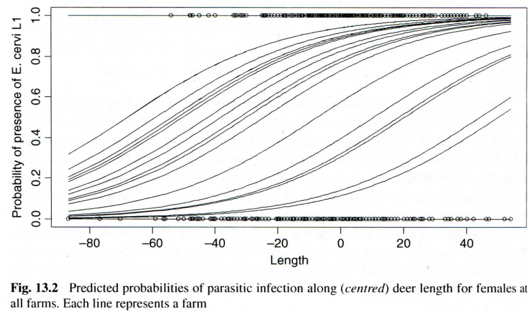
(aus Zuur et al. 2009)
Für unseren Zweck hat die Lösung mit einem GLM zwei Nachteile:
fFarm „verbraucht” 23 Freiheitsgrade, obwohl wir nicht am Farmeffekt interessiert sind.
Wir bekommen ein Modell für jede einzelne Farm, aber kein farmunabhängiges Modell.
Beispiehaft analysieren wir dieses GLMM mit glmm.PQL aus dem Package MASS:
library(MASS)
DE.PQL <- glmmPQL(Ecervi.01 ~ CLength * fSex,
random = ~ 1 | fFarm, family = binomial, data = DeerEcervi)
summary(DE.PQL)Random effects:
Formula: ~1 | fFarm
(Intercept) Residual
StdDev: 1.462108 0.9620576
[…]
Fixed effects: Ecervi.01 ~ CLength * fSex
Value Std.Error DF t-value p-value
(Intercept) 0.8883697 0.3373283 799 2.633547 0.0086
CLength 0.0378608 0.0065269 799 5.800768 0.0000
fSex2 0.6104570 0.2137293 799 2.856216 0.0044
CLength:fSex2 0.0350666 0.0108558 799 3.230228 0.0013Wie wir das schon von ANOVAs mit Error-Term oder LMMs kennen, ist die Ergebnistabelle in einen Teil für die Random effects und einen Teil für die Fixed effects aufgeteilt. Für fFarm gibt es jetzt aber anders als beim GLM nicht 23 Schätzwerte, sondern nur einen für die Standardabweichung. Der untere Teil entspricht dagegen dem Output eines GLMs, wenn wir fFarm völlig ignoriert hätten: wir haben die Effekte von Grösse, Geschlecht und deren Interaktion (alle signifikant).
Was sagen uns die Ergebnisse nun?
- Wahrscheinlichkeit des Parasitenbefalls für weibliche Hirsche:
logit (pij) = 0.888 + 0.037 ∙ Lengthij
- Wahrscheinlichkeit des Parasitenbefalls für männliche Hirsche:
logit (pij) = (0.888 + 0.610) + (0.037 + 0.035) ∙ Lengthij
logit (pij) = 1.498 + 0.072 ∙ Lengthij
Da die Codierung Sex2 = „männlich” war und wir sowohl ein „random intercept” als auch ein „random slope” modelliert haben, ergibt sich der Achsenabschnitt für die männlichen Hirsche durch die Addition des allgemeinen Achsenabschnitts (der sich auf Sex1 = „weiblich” bezieht) und dem Effekt von Sex2, während sich die Steigung für die männlichen Hirsche aus jener für die weiblichen + den Interkationsterm ergibt.
Da wir es mit einem Binomial-GLMM zu tun haben, sagen uns die gefundenen Gleichungen immer noch nicht unmittelbar etwas über die Beziehungen, da auf der linken Seite der Gleichung jeweils logit (pij) und nicht pij steht. Wir könnten wie in Statistik 4 nach pij auflösen oder wir nutzen eine Visualisierung. Im Folgenden ist z. B. die GLMM-Vorhersage für weibliche Hirsche mit Konfidenzintervall geplottet, was schön den Unterschied zum GLM zeigt:

(aus Zuur et al. 2009)
Verschiedene R-packages für GLMMs
Es gibt mehrere R-packages für GLMMs, von denen die folgenden die gängisten sind:
library(MASS): glmmPQL
library(lme4): glmer
library(glmmML): glmmML
Die Syntax der verschiedenen Packages unterscheidet sich im Detail, bitte bei Bedarf die jeweilige Hilfe-Funktion konsultieren.
Da ein GLMM ein sehr komplexes Verfahren ist, sind die verschiedenen Implementierungen nicht genau gleich. Insofern kann es auch leichte Divergenzen in den Parameterschätzungen und den Parametern geben, wie die folgende Auswertung für unser Hirschbeispiel zeigt:

(aus Zuur et al. 2009)
In diesem Fall (und meist) sind die Abweichungen zwischen den drei GLMMs aber gering. Dagegen ist die Aussage deutlich verschieden von der mit dem GLM ermittelten (massiv andere Parameterschätzung für Sex, etwas andere für Length und Length × Sex).
Random vs. fixed factors
Wann sollten wir random factors nehmen, wann fixed factors? Im Hirsch-Beispiel ist statistisch klar, dass wir die Farm-Identität in unser statistisches Modell aufnehmen müssen, da auf jeder Farm mehrere Hirsche untersucht wurden und unser wissen über as universelle Phänomen der räumlichen Autokorrelation es höchstwahrscheinlich macht, dass sich die Hirsche einer einzelnen Farm (wg. räumlicher Nähe) ähnlicher verhalten als zufällig herausgegriffene Paare von Farm-Hirschen aus ganz Spanien.
Ob wir die Farm-Identität dagegen als fixed factor aufnehmen (d. h. ein GLM rechnen) oder als random factor (d. h. ein GLMM rechnen), hängt von unserer Frage ab. In der Beschreibung der Studie wurde suggeriert, dass es uns um ein allgemeines farmunabhängiges Modell ging, wie sich der Parasitenbefall in Abhängigkeit von Geschlecht und Grösse entwickelt. Dann wäre unser Vorgehen richtig, fFarm als random factor zu definieren. Wir dürfen und können dann aber keine Aussage über eine einzelne Farm treffen. Wenn uns dagegen interessiert, ob und wie sich die Farmen bezüglich Parasitenbefall unterscheiden, etwa weil sie unterschiedliche Hygienekonzepte oder Populationsdichten haben, dann müssen wir fFarm als fixed factor einführen (also ein GLM rechnen). Ob wir in einer solchen Situation ein GLM oder ein GLMM rechnen, hängt also von unserer genauen Frage ab.
LMs, GLMs, LMMs und GLMMs im Rückblick und Überblick
Zum Abschluss der fünf inferenzstatistischen Lektionen seien noch einmal die grundlegenden Ähnlichkeiten und Unterschiede von LMs, GLMs, LMMs und GLMMs zusammengefasst:
- LMs: Linear models
- GLMs: Generalized linear models
- LMMs: Linear mixed effect models
- GLMMs: Generalized linear mixed effects models
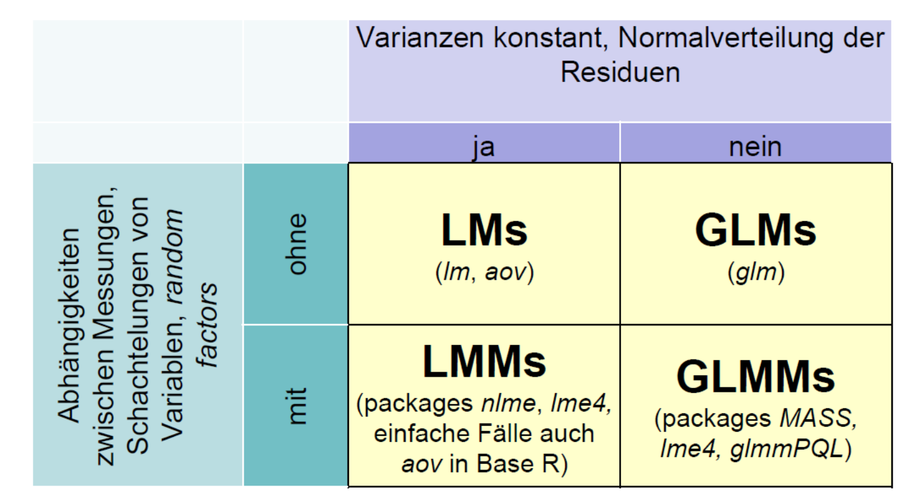
Zusammenfassung
Wenn in einem ANOVA-Design Schachtelungen oder Abhängigkeiten vorliegen, muss man diese im Modell spezifizieren, was entweder als Error in aov oder als random in lme (package nlme) geht.
Während GLMs lineare Modelle bezüglich der geforderten Residuen- und Varianzstruktur verallgemeinern, leisten linear mixed effect models (LMMs) dies bezüglich unterschiedlichster Abhängigkeiten zwischen Beobachtungen.
Generalized linear mixed effect models (GLMMs) schliesslich ermöglichen, beide Typen von Abweichungen von den Voraussetzungen linearer Modelle zu berücksichtigen.
Weiterführende Literatur
Crawley, M.J. 2015. Statistics – An introduction using R. 2nd ed. John Wiley & Sons, Chichester, UK: 339 pp.
- Chapter 8: Analysis of Variance (pp. 173–182)
Logan, M. 2010. Biostatistical design and analysis using R. A practical guide. Wiley-Blackwell, Oxford, UK: 546 pp., v.a.
- pp. 399-447 (split-plot und repeated measures ANOVAs)
Zuur, A. E., Ieno, E. N., Walker, N. J., Saveliev, A. A., Smith, G. M. (eds.) 2009. Mixed effects models and extension in ecology with R. Springer, New York: 576 pp.
Zuur, A.E., Hilbe, J.M. & Ieno, E.N. 2013. A beginner’s guide to GLM and GLMM with R – A frequentist and Bayesian perspective for ecologists. Highland Statistics, Newburgh: 253 pp.
Statistik 6: Einführung in „multivariate” Methoden und Ordinationen I
Statistik 6 führt in multivariat-deskriptive Methoden ein, die dazu dienen Datensätze mit multiplen abhängigen und multiplen unabhängigen Variablen effektiv zu analysieren. Dabei betonen Ordinationen kontinuierliche Gradienten und fokussieren auf zusammengehörende Variablen, während Cluster-Analysen Diskontinuitäten betonen und auf zusammengehörende Beobachtungen fokussieren. Es folgt eine konzeptionelle Einführung in die Idee von Ordinationen als einer Technik der deskriptiven Statistik, die Strukturen in multivariaten Datensätzen via Dimensionsreduktion visualisiert. Das Prinzip und die praktische Implementierung wird detailliert am Beispiel der Hauptkomponentenanalyse (PCA) erklärt. Danach folgen kurze Einführungen in weitere Ordinationstechniken für besondere Fälle, welche bestimmte Limitierungen der PCA überwinden, namentlich CA, DCA und NMDS.
Lernziele
Ihr…
versteht, was Ordinationen sollen, was sie leisten können und was nicht;
könnt das Prinzip einer PCA beschreiben, sie implementieren, und ihren Ergebnisoutput interpretieren;
Die Annahmen einer PCA kennt, und wisst welche «Artefakte» bei einer Verletzung herauskommen; und
habt das Vorgehen im Prinzip verstanden, wie DCA und NMDS diese Probleme angehen.
Einführung in „multivariate” Methoden
Was ist mit „multivariat” gemeint?
Was ist mit „multivariat” gemeint? Zunächst einmal sagt das nur, dass pro Beobachtung (observation) mehr als zwei Variablen erhoben werden, deren Beziehungen zueinander analysiert werden. Im Wortsinne waren also auch schon die zweifaktorielle ANOVA und die multiple Regression „multivariate” Methoden.
Die folgende Tabelle fasst die schon besprochenen und noch kommenden statistischen Verfahren bezüglich der Anzahl von Prädiktor- und Antwortvariablen zusammen:

In der Literatur wird der Begriff „multivariat” jedoch oft nur für die letzte Gruppe von Verfahren, also Ordinationen und Cluster-Analysen, gebraucht. Diese bilden den Gegenstand von Statistik 6–8.
Inferenzstatistik vs. deskriptive Statistik
Bislang haben wir statistische Verfahren überwiegend zum Testen von Hypothesen verwendet (inklusive des impliziten Hypothesentestens, wenn man eine offene Forschungsfrage beantwortet): Inferenzstatistik (schliessende Statistik).
Ordinationen und Cluster-Analysen** sind überwiegend deskriptive Statistik** (ohne spezielle Zusatzschritte erlauben sie kein Testen von Hypothesen!).
Beispiele multivariater Datensätze
Multivariate Datensätze sind in unserer „datenreichen” Welt allgegenwärtig z. B.:
Bodenproben, an denen viele unterschiedliche physikalische und chemische Variablen, ggf. auch noch in verschiedenen Horizonten gemessen wurden.
Klimadaten von Messstationen: zahlreiche Variablen wie Mittel/Minima/Maxima von Temperatur/Niederschlag/Sonnenschein/Bewölkung/Windstärke usw. und das für jeden Monat.
Zusammensetzungen von lokalen Pflanzengesellschaften oder Tiergemeinschaften: hier sind die Deckungen bzw. Individuenzahlen der einzelnen Arten die Variablen
Ergebnisse von Befragungen von Konsumenten: viele Variablen zu Präferenzen, Einstellungen usw.
Ziele multivariat-deskriptiver Analysen
Im Prinzip können wir auch bei solchen Beobachtungsdaten mit vielen abhängigen Variablen wie bisher jede einzeln testen:
Das kann vorteilhaft sein, wenn man konkrete Hypothesen testen will (was ja mit multivariat-deskriptiven Methoden normalerweise nicht geht).
Ein Problem sind die vielen Tests mit dem gleichen Datensatz, die zu einer „Inflation” der Typ I-Fehlerrate führen (wenn ich 20 Tests durchführe, würde ja bei α = 0.05 einer rein zufällig eine Signifikanz anzeigen, selbst wenn eigentlich für keinen einen Beziehung besteht). Für dieses Problem gibt es aber Korrekturmöglichkeiten (z. B. „Bonferroni”-Korrektur).
Problematischer ist, dass es sehr schwierig ist, aus den vielen Einzelergebnissen am Ende ein aussagekräftiges Gesamtbild zu synthetisieren.
Hier setzen die multivariat-deskriptiven Methoden mit ihren beiden Hauptzielen an:
Muster und Beziehungen im n-dimensionalen Hyperraum erkennen und beschreiben.
Dimensionsreduktion: die wesentliche Information aus den n Dimensionen wird auf 2 bis wenige Dimensionen reduziert, die vorstellbar und visualisierbar sind.
Der n-dimensionale Hyperraum ist das Konzept, das uns durchgängig bei den multivariat-deskriptiven Methoden begleitet. Dahinter verbirgt sich die Idee, dass jede der n Variablen eine orthogonale Achse ist, auf der die Ausprägungen der Variablen (metrisch oder kategorial) aufgetragen sind. Während wir uns einen 3-dimensionalen Raum noch vorstellen können, ist es mit der Vorstellungskraft bei vier oder gar 100 Dimensionen schnell zu Ende. Aber das ist ja genau der Grund für die multivariat-deskriptiven Methoden…
Zwei komplementäre Ansätze
Innerhalb der multivariat-deskriptiven Statistik stellen Ordinationen und Cluster-Analysen (Klassifikationen) zwei komplementäre Ansätze dar. Sie betonen unterschiedliche Aspekte des Datensatzes und können oftmals sogar sinnvoll parallel verwendet werden. Die wesentlichen Unterschiede zeigt die folgende Tabelle:

Die Idee von Ordinationen
Ordinationen versuchen nun im Prinzip im n-dimensionalen Raum der (Antwort-) Variablen diejenigen Ebenen zu finden, welche die meiste Varianz erklären. Dies geschieht durch die folgenden Schritte:
Zentrieren der Punktwolke, so dass der Schwerpunkt im Ursprung des Koordinatensystems liegt.
Rotieren der Punktwolke, bis die erste Achse die maximal mögliche Varianz abbildet.
Nach Fixierung der ersten Achse Fortsetzen des Rotierens, bis die zweite Achse wiederum das maximal Mögliche der verbleibenden Varianz abbildet, usw. bis zur n-ten Achse.
Visualisierung der Ergebnisse bei Beschränkung auf die relevanten ersten Achsen.
Um diese Idee zu visualisieren, nehmen wir ein System von nur zwei Variablen, da wir diese noch auf einer Ebene (d. h. im gedruckten Skript) visualisieren können. Stellen wir uns sechs Beobachtungspunkte entlang eines Umweltgradienten (z. B. Meereshöhe) vor. An jedem dieser Beobachtungspunkte wird die Häufigkeit von zwei Arten ermittelt, etwa folgendermassen:

Wenn wir das jetzt im „Artenraum” zeigen, also mit der Häufigkeit von Art 1 auf der x-Achse und der Häufigkeit von Art 2 auf der y-Achse, dan bekämen wir das grüne Muster. Zentriert (d. h. so dass die Mittelwerte aller x- und y-Werte jeweils 0 sind), ergibt sich die rote Figur. Dies wird schliesslich so rotiert, dass die maximale Varianz (hier im simplen Fall einfach die Distanz zwischen den extremen Punkten) paralle zur x-Achse liegt (blau).

Hauptkomponentenanalyse (PCA)
Das Prinzip
Das im vorigen Abschnitt skizzierte Vorgehen, ist genau das, was eine Hauptkomponentenanalyse (Principal component analysis, PCA) macht:
Basiert auf einer linearen Beziehung zwischen den Attributen.
Achsen sind orthogonal (und die Varianzen daher additiv).
Die ursprünglichen Distanzen zwischen den Objekten (Beobachtungen) bleiben daher unverändert.
PCAs eignen sich für:
Einfache Visualisierung, wenn die Linearität gegeben ist.
Bei multiplen Regressionen mit vielen, korrelierten Prädiktoren kann man die PCA-Achsen als synthetische Prädiktoren verwenden, da sie vollständig unkorreliert sind.
PCAs eignen sich nicht(und das gilt fast immer für für Daten zur Artenzusammensetzung ökologischer Gemeinschaften) für:
Nicht-lineare Beziehungen.
Viele Nullen in der Matrix.
Die PCA findet die beste Rotation mittels der sogenannten „Eigenanalyse”, wie die folgende Abbildung veranschaulicht:


(aus Wildi 2013)
Dabei gilt:
α = Eigenvektormatrix
= Korrelationskoeffizient (der Arten/Variablen) mit den OrdinationsachsenEigenwerte einre Achse = Sum of squares dieser Achse
In R
PCAs sind z. B. im Package labdsv implementiert:
library(labdsv)
o.pca <- pca(raw)
o.pca$scores PC1 PC2
r1 -1.9216223 -0.09357697
r2 -0.6353776 -0.68143293
r3 0.4762699 -0.80076373
r4 2.3503705 -0.10237502
r5 0.8895287 0.95400610
r6 -1.1591692 0.72414255o.pca$loadings PC1 PC2
spec.1 0.3491944 -0.9370503
spec.2 0.9370503 0.3491944#Erklärte Varianz der Achsen
E <- o.pca$sdev^2/o.pca$totdev*100
E[1] 82.40009 17.59991Zunächst wird die PCA ausgeführt und das Ergebnis in einem Objekt (o.pca) gespeichert. Die uns Interessierten Informationen kann man wie oben gezeigt abrufen: …\(scores enthält die resultierenden Koordinaten der Beobachtungen nach der Ordination; ...\)loadings gibt die Vektoren wieder, die nach der Rotation den beiden Arten entsprechen (Art 1 hat also den Vektor 0.35/–0.94). Die erklärte Varianz ist ein uns schon bekanntes Konzept. Die Gesamtvarianz ist alles, was im Datensatz mit seinen n Achsen drin steckt (100%), hier wird dieser Wert auf die Achsen aufgeteilt, also 82 % auf der ersten Achse, 18 % auf der zweiten. Alle n Achsen zusammen ergeben immer 100 %.
Ziel einer PCA ist ja meist eine Visualisierung. Für unsere sechs Beobachtungen von zwei Arten haben wir das oben ja schon gemacht (und da hat es auch keine Dimensionsreduktion gebracht, da es eh nur zwei Arten waren). Wenn wir uns nun aber einen Datensatz mit 63 Beobachtungspunkten (hier: Vegetationsaufnahmen) und 119 Variablen (hier: Pflanzenarten) anschauen, dann haben wir eine Dimensionsreduktion von 119 auf 2. Das aufbereitete Ergebnis kann dann wie folgt aussehen (den R Code dazu gibt es im Demoskript):


Bitte beachten, dass wir hier eine PCA für einen Fall gerechnet haben (ökologische Gemeinschaftsdaten), für den sie mit seltenen Ausnahmen ungeeignet ist. Warum sie hier problematisch war, werden wir weiter unten ansehen wie auch Lösungen dafür.
Beispiele von Anwendungen von PCAs
Zunächst sollen aber einige gängige und korrekte Anwendungen auf sehr grossen Datensets gezeigt werden:
- Visualisierung 1: Hier wurden etwa 20 verschiedene bioklimatische Variablen für alle Rasterzellen der Erdoberfläche (Farbkodierung gibt die Häufigkeit wieder) einer PCA unterworfen. Die Klimadaten sind so hoch korreliert, dass die ersten beiden Achen (Hauptkomponenten) PC1 und PC2 zusammen 76 % der Varianz im Gesamtdatensatz kodieren. Es wäre also unsinnig, die 20 Variablen einzeln zu analysieren. Durch die rechts gezeigten Korrelationen der Originalvariablen mit PC1 und PC2 kann man die beiden synthetischen Achsen näherungsweise interpretieren (siehe die Achsenbeschriftung links).
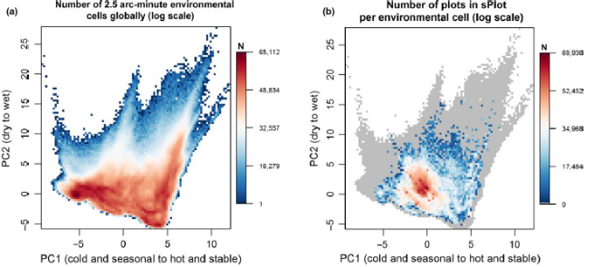
(aus Bruelheide et al. 2019)
- Visualisierung 2: Hier wurden 6 funktionelle Merkmale (traits) von Pflanzenarten weltweit einer PCA unterworfen. Diese erweisen sich so weit korreliert, dass die ersten beiden Achen (Hauptkomponenten) PC1 und PC2 zusammen 74% der Varianz kodieren. Der eine wesentliche Gradient (etwas gegen PC1 nach links verdreht) ist jender von winizigen, kleinsamigen Arten zu grossen Arten mit schweren Samen. Dazu weitgehend orthogonal ist der Gradient von Pflanzen mit stickstoffreichen Blättern (links oben) zu Pflanzen mit stickstoffarmen Blättern (rechts unten).

(aus Díaz et al. 2016)
- Principal Components (PCs) in multiplen Regressionen: Hier rechnet man zunächst eine PCA mit vielen Umweltvariablen ohne Rücksicht auf ihre wechselseitigen Korrelationen. Dann nimmt man die (ersten) PC-Achsen mit der meisten Information als sogenannte „synthetische” Prädiktoren.
Vorteil: Die PC-Achsen sind vollständig unkorreliert.
Nachteil: Die PC-Achsen sind nicht so direkt interpretierbar wie die Original-Umweltparameter, das sie zwar oft stark mit mehreren Umweltparametern korrelieren, aber eben nicht 100 %.
Wichtig: Hochladende Achsen sind nicht unbedingt auch die wichtigsten für die Regression.
Ordinationen für „problematische” Fälle
Wann sind PCAs problematisch?
Wie schon erwähnt, ist die Anwendung von PCAs problematisch/falsch, wenn einer oder beide der folgenden Fälle vorliegen:
Nicht-lineare Beziehungen.
Vielen Nullen in der Matrix.
In der Ökologie ist das besonders relevant, da beides für Artdaten in der Gemeinschaftsökologie (community ecology) nicht die Ausnahme, sondern der Normalfall ist. Arten reagieren auf Umweltfaktoren meist nicht linear, sondern unimodal (humpshaped) und in grossen Matrizen von Artvorkommen in Vegetationsaufnahmen und Gebieten ist es normal, dass die meisten Arten in den meisten Aufnahmeflächen nicht vorkommen, also ihre Deckung oder Abundanz Null ist. Dagegen lassen sich Matrizen von Umweltdaten der Untersuchungsgebiete (etwa von Boden- und Klimadaten) problemlos mit einer PCA analysieren (siehe Beispiel (a) im vorigen Abschnitt, da es ja keine Nullwerte gibt).
Warum sind nicht-lineare Beziehungen in einer PCA problematisch? Sehen wir uns dazu noch einmal unser Eingangsbeispiel der zwei Arten entlang eines Umweltgradienten von 1 bis 6 an:
Aufgrund des Umweltgradienten sollten die Beobachtungen/Standorte 1 und 6 maximal unähnlich sein. Tatsächlich kommen sie aber im Ordinationsdiagramm sehr nahe beieinander zu liegen. Das liegt daran, dass beide Arten unimodal (mit einer Optimumskurve) auf den Umweltgradienten reagieren. Wenn der Umweltgradient etwa die Bodenfeuchte wäre, hiesse das, dass beide bei mittlerer Bodenfeuchte am häufigsten sind und Richtung sehr nasser oder sehr trockener Böden seltener werden. Das heisst, an den Standorten 1 und 6 sind beide relativ selten, wenn auch aus unterschiedlichen Gründen, die Artenzusammensetzung daher ingesamt ähnlich.
Man bezeichnet dieses Phänomen/Problem: als Hufeisen- oder Bogeneffekt (horse shoe/arch effect).
Korrespondenzanalyse (CA)
Ein Verfahren, um solche Probleme (vor allem in der Gemeinschaftsökologie) anzugehen, ist die Korrespondenzanalyse (Correspondence Analysis, CA). Sie wird auch als Reciprocal Averging bezeichnet. Wichtige Aspekte der CA sind:
Hier wie in allen folgenden Ordinationsmethoden wird der Ordinationsraum transformiert (im Gegensatz zur PCA) durch die Anwendung eines Distanzmasses.
CA hat als Distanzmass implizit die Χ²-Metrik.
CA ist spezifisch gedacht für Artenverteilungen entlang von Umweltgradienten, wobei jede Art für sich unimodal reagiert.
Wie die meisten weiteren Ordinationstechniken implementiert im package vegan für community ecology.
In R wird das wie folgt umgesetzt (man beachte, dass häufig die Artdeckungen eingangs noch wurzeltransformiert werden (^0.5), um Arten mit geringer Deckung relativ mehr Gewicht zu geben):
library(vegan)
ca.1 <- cca(sveg^0.5)
#Arten (o) und Communities (+) plotten
plot(ca.1)
#Nur Arten plotten
plot(ca.1, display = "species", type = "points")
#Anteilige Varianz, die durch die ersten beiden Achsen erklärt wird
o.ca$CA$eig[1:2]/sum(o.ca$CA$eig)Wenn wir jetzt die Anwendung der PCA und der CA auf den Moordatensatz (63 Vegetationsaufnahmen mit 119 Arten) anschauen, den wir oben schon einmal kurz hatten, dann zeigt sich, dass aus dem Hufeisen im Prinzip ein (umgekehrtes) U oder V wird, die extremen Punkte des Gradienten also nicht mehr so nahe beisammen stehen:

Wie dieser Unterschied zustande kommt, visualisiert die folgende konzeptionelle Abbildung mit drei Arten:

(aus Wildi 2013)
DCA
Wie wir im vorigen Abschnitt gesehen haben, löst die CA die Probleme der PCA bei Community-Daten in der Ökologie, aber eben nur teilweise. Aus einem Hufeisen wird ein U, aber eigentlich war der Umweltgradient (hier von feucht nach trocken) ja linear, nur die Artantworten waren eben unimodal. Insofern wurde die CA noch weiter verfeinert, um den sich ergebenden Hauptumweltgradienten möglichst linear abzubilden. Wir landen bei der Detrended Correspondence Analysis (DCA), man könnte auf Deutsch von einer „trendbereinigten Korrespondenzanalyse” sprechen, aber dieser deutsche Begriff wird eigentlich nie gebraucht.
Es gibt verschiedene Detrending-Methoden, die gängigste ist „detrending by segments”. wie sie in folgendem Schema visualisiert ist:

(aus Leyer & Wesche 2007)
Die mathematischen Schritte dahinter und die daraus resultierenden methodischen Entscheidungen sind etwas komplexer, so dass wir sie nicht im Detail behandeln. Wer die Dinge im Einzelnen nachvollziehen möchte, sei auf Leyer & Wesche (2007) bzw. Oksanen (2015) verwiesen. Der R Code (Funktion decorana im Package vegan) ist auch etwas länger, sodass wir ihn nicht hier im Skript wiedergeben, sondern nur in den R-Demos.
Aus dem Gesagten wird evident, dass eine DCA nach all den erfolgten Transformationen des Ordinationsraumes keine Methode der schliessenden Statistik ist, sondern ein (durchaus leistungsfähiges) Visualisierungstool komplexer Community-Daten. Da, wie geschildert, eine CA die Probleme der Ordination von Community-Daten nur unzureichend löst, findet sie als solche hier eigentlich nie Anwendung (siehe jedoch die CCA in Statistik 7), sondern entweder PCA oder DCA (oder eben NMDS, vgl. folgenden Abschnitt).
Warum wird jetzt doch wieder die PCA für Community-Daten genannt, nachdem sie bislang mehrfach als ungeeignet angeführt wurde? Meist passt sie methodisch nicht, aber es gibt Fälle, bei denen die Umweltgradienten so kurz sind, dass die Artenreaktionen auf den oder die Umweltgradienten in guter Näherung als linear betrachtet werden können. Das ist dann der Fall, wenn man lauter sehr ähnliche Standorte untersucht hat, dann ist eine PCA ausnahmsweise das bessere Modell. Wie weiss man, ob das bei einem bestimmten Datensatz der Fall ist?
Zunächst vielleicht etwas überraschend lautet die Antwort: man berechnet zuerst eine DCA. Ein Standard-Output der DCA ist die geschätzte Gradientenlänge der ersten Achse. Die Länge des Gradienten wird in Standardabweichungen (SD) quantifiziert, was zunächst „schräg” klingt. Das bezieht sich auf die Annahme, dass die Artenhäufigkeit entlang des Umweltgradienten näherungsweise einer Normalverteilung folgt. Vielleicht habt ihr im Hinterkopf, dass 95 % aller Werte einer Normalverteilungskurve im Bereich von Mittelwert ± 2 SD liegt. Wenn der geschätzte Gradient also 4 SD-Einheiten oder mehr ist, gibt es zwischen den beiden Enden des untersuchten Umweltgradienten praktisch keine gemeinsamen Arten (bzw. sie treten mit weniger als 1 % ihrer Maximalhäufigkeit auf), man spricht von einem vollständigen Arten-Turnover. Bei einer Gradientenlänge von 8 SD-Einheiten hätte man sogar zwei vollständige Arten-Turnovers, also letztlich drei komplett verschiedene Gesellschaften ohne Überlappung.
Die Faustregel für die Anwendung von DCA vs. PCA besagt, dass bei einer Länge der ersten Achse von < 3 SD-Einheiten mit der PCA gearbeitet werden sollte, bei einer Länge von 3–4 SD-Einheiten beide Methoden gehen und bei >4 SD-Einheiten man bei der DCA bleiben sollte. Man könnte aber auch argumentieren, dass die Annahmen der PCA theoretisch für solche Datensätze nie zutreffen, man also per se mit der DCA arbeiten sollte.
Schauen wir uns den Effekt noch im Fall unseres Moor-Datensatzes an:

Wie wir sehen, wurde aus dem umgekehrten U und eine relativ homogene Punktwolke, mit der längsten Ausdehnung entlang der ersten Achse (was ja die Grundidee einer Ordination ist). Die Gradientenlänge können wir auf der x-Achse ablesen, sie beträgt etwa 3.2 SD-Einheiten (Differenz der Position zwischen dem Punkt ganz links und dem Punkt ganz rechts).
NMDS
NMDS** steht für **Non-metric Multi-Dimensional Scaling, wofür es keine gute/gängige deutsche Übersetzung gibt. Die wichtigsten Aspekte einer NMDS sind:
„Non-metric”, da mit Rängen, nicht mit Distanzen gearbeitet wird.
NMDS arbeitet mit einem Iterationsalgorithmus, der jedes Mal ein geringfügig anderes Ergebnis liefert.
Startet mit einer beliebigen vorgegebenen Ordination, etwa einer PCA.
Danach werden sukzessive die Punkte im niedrig-dimensionalen Ordinationsraum (meist 2D) geringfügig verschoben und geschaut, ob die originale Distanzmatrix besser wiedergegeben wird, so lange, bis ein (lokales) Optimum erreicht ist.
In R geht das folgendermassen. Dabei steht der Parameter k für die Zahl der gewünschten Dimensionen (normalerweise wählt man 2) (weitere Details dann in der Demo im Klassenverband):
#Distanzmatrix als Start erzeugen
mde <- vegdist(sveg, method="euclidean")
mde
#Zwei verschiedene NMDS-Methoden
set.seed(1) #macht man, wenn man bei einer Wiederholung exakt die gleichen Ergebnisse will
imds <- isoMDS(mde, k=2)
set.seed(1)
mmds <- metaMDS(mde, k=2)
plot(imds$points)
plot(mmds$points)
plot(o.imds$points)
plot(o.mmds$points)
#Stress = S² = Abweichung der zweidimensionalen NMDS-Lösung von der originalen Distanzmatrix
stressplot(o.imds,mde)Das Ergebnis (hier mit dem Algorithmus isoMDS) sieht man links. Wie gut die NMDS die originale Struktur wiedergibt, zeigt sich rechts (erzeugt mit stressplot):


Zwei wichtige Aspekte sollte man hier noch erwähnen: Da NMDS mit einem interativen Algorithmus arbeitet, der eine Zufallskomponente enthält, kommen bei jedem Durchlauf geringfügig andere Ergebnisse heraus. Wenn man das verhindern will, kann man mit set.seed arbeiten, was erzwingt, dass die gleiche „Zufallswahl” auch bei neuerlichen Durchläufen des R-Scriptes getroffen wird. Das Mass für die Güte einer NMDS ist der sogenanante Stress:
Stress = 1 – R²
In unserem Fall wäre der Stress also 1 – 0.977, also 2.3%, mithin sehr niedrig. Nur in 2.3% der Fälle würde die Lage im zweidimensionalen NMDS-Raum also das Ranking der Distanzen anders als das Ranking der Distanzen im ursprünglichen n-dimensionalen Hyperraum wiedergeben.
Zusammenfassung
Ordinationen sind im Kern deskriptive Verfahren für multivariate (abhängige) Variablen und komplementär zu Cluster-Analysen.
Ihre Ziele sind Dimensionsreduktion und Visualisierung.
Die basale Form einer Ordination ist die PCA. Sie setzt lineare Beziehungen und wenige Nullwerte in der Matrix voraus.
Abgesehen von Visualisierungen kann man PCAs auch zum Generieren unkorrelierter synthetischer Variablen für nachfolgende multiple Regressionsanalysen verwenden.
Auf ökologische Gemeinschafts-Daten angewandt, ergeben PCA und CA normalerweise einen Hufeisen-Effekt, wobei standörtlich besonders unähnliche Plots nahe beieinander zu liegen kommen.
DCA und NMDS versuchen das zu verhindern, indem sie entweder das Hufeisen «herausrechnen» oder von vornherein nur mit Rängen arbeiten.
Weiterführende Literatur
Borcard, D., Gillet, F. & Legendre, P. 2018. Numerical ecology with R. 2nd ed. Springer, Cham: 435 pp. [mit R]
Crawley, M.J. 2013. The R book. 2nd ed. John Wiley & Sons, Chichester, UK: 1051 pp. [mit R]
Everitt, B. & Hothorn, T. 2011. An introduction to applied multivariate analysis with R. Springer, New York: 273 pp. [mit R]
Leyer, I. & Wesche, K. 2007. Multivariate Statistik in der Ökologie. Springer, Berlin: 221 pp. [einfache Erklärung von Ordinationsmethoden, ohne R]
McCune, B., Grace, J.B. & Urban, D.L. 2002. Analysis of ecological communities. MjM Software Design, Gleneden Beach, Oregon, US: 300 pp. [gut erklärte und detaillierte Einführung in Ordinationen u.a., ohne R]
Oksanen, L. 2015. Multivariate analysis of ecological communities in R: vegan tutorial. URL: http://cc.oulu.fi/~jarioksa/opetus/metodi/vegantutor.pdf. [gute Einführung in das R-package vegan mit vielen Ordinationsmethoden]
Wildi, O. 2013. Data analysis in vegetation ecology. 2nd ed.Wiley-Blackwell, Chichester, UK: 301 pp. [mit R]
Wildi, O. 2017. Data analysis in vegetation ecology. 3rd ed. CABI, Wallingford, UK: 333 pp. [mit R]
Quellen der Beispiele
Bruelheide, H., Dengler, J., Purschke, O., Lenoir, J., Jiménez-Alfaro, B., Hennekens, S.M., Botta-Dukát, Z., Chytrý, M., Field, R., (…) & Jandt, U. 2018. Global trait–environment relationships of plant communities. Nature Ecology and Evolution 2: 1906–1917.
Díaz, S., Kattge, J., Cornelissen, J.H.C., Wright, I.J., Lavorel, S., Dray, S., Reu, B., Kleyer, M., Wirth, C.(…) & Gorné, L.D. 2016. The global spectrum of plant form and function. Nature 529: 167–171.
Statistik 7: Ordinationen II
In Statistik 7 beschäftigen wir uns zunächst damit, wie wir Ordinationsdiagramme informativer gestalten können, etwa durch die Beschriftung der Beobachtunge, post-hoc-Projektion der Prädiktorvariablen oder Response surfaces. Während wir bislang mit «unconstrained» Ordinationen gearbeitet haben, welche die Gesamtvariabilität in den Beobachtungen visualisieren, beschränken die jeweiligen «constrained»-Varianten derselben Ordinationsmethoden die Betrachtung auf den Teil der Variabilität, welcher durch eine Linearkombination der berücksichtigen Prädiktoren erklärt werden kann. Wir beschäftigen uns im Detail mit der Redundanz-Analyse (RDA), der «constrained»-Variante der PCA und gehen einen kompletten analytischen Ablauf mit Aufbereitung, Interpretation und Visualisierung der Ergebnisse am Beispiel eines gemeinschaftsökologischen Datensatzes (Fischgesellschaften und Umweltfaktoren im Jura-Fluss Doubs) durch.
Lernziele
Ihr…
wisst, wie man durch post-hoc gefittete Umweltvariablen (als Vektoren oder response surfaces) Ordinationen informativer machen kann;
habt verstanden, was «constrained» Ordinationen von normalen Ordinationen unterscheidet; und
könnt eine RDA anwenden und ihre Ergebnisse interpretieren, um einen multivariaten Datensatz effektiv zu analysieren.
Interpretation von Ordinationsergebnissen
Beschriftung der Variablen
Die Interpretation eines Ordinationsdiagramms wird durch Beschriftung der Variablen (und ggf. der Beobachtungen) wesentlich unterstützt. Bei der Ordination von gemeinschaftsökologischen Daten stellen allerdings die grosse Zahl der Artnamen und ihre grosse Länge eine Herausforderung dar. Wenn man in unserem Moordatensatz aus der letzten Lektion mit seinen 119 Arten einfach alle ungefiltert und ungekürzt in das Diagramm plotten würde, wären weder die Punkte des Diagramms erkennbar, noch die Namen lesbar. Insofern bietet es sich an, eine Teilmenge besonders aussagekräftiger Arten (d. h. Variablen) auszuwählen. Mit dem in vegan implementierten Befehl make.cepnames werden diese auf 8 Buchstaben gekürzt (4 vom Gattungsnamen und 4 vom Artepithet), was in fast allen Fällen eindeutig ist. Zudem kann man die relative Position der Beschriftung zum jeweiligen Punkt durch den Parameter pos steuern (oben, unten, rechts, links)).
#4+4-Abkürzung der Namen
snames <- make.cepnames(snames)
#Individuelle Position der Namen
text(sx,sy,snames,pos=c(1,2,1,1,3,2,4,3,1),cex=0.8)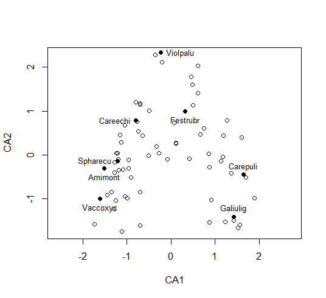
Post hoc-Korrelation von Umweltvariablen
In gemeinschaftsökologischen Datensätzen ist ja eine wichtige Frage meist, welche Umweltvariablen für die Verteilung der Arten in den Gemeinschaften/Vegetationsaufnahmen verantwortlich sind. Zur Rekapitulation: unsere bisherigen Ordinationsmethoden haben einzig die Artenvorkommen als Informationen (Variablen) genutzt. Eine Interpretationen der dahinterliegenden Umweltgradienten geschah bislang nur auf Basis unseres ökologischen Wissens über die Arten (sofern vorhanden). Sofern es jedoch auch erhobene Umweltdaten zu jeder Beobachtung gibt, können wir diese nachträglich (post hoc) zur Interpretation heranziehen. Wichtig ist dabei, dass diese zusätzlichen Umweltvariablen hier nicht die eigentliche Ordination beeinflusst haben, sondern nur zur nachträglichen Interpretation herangezogen werden (daher post hoc). Für unseren Moordatensatz gibt es tatsächich auch einen zusätzlichen Datensatz mit Umweltvariablen, die in jeder Vegetationsaufnahme erhoben wurden (enthalten im data frame ssit). Wir wählen davon fünf aus, um das Prinzip post hoc-gefitteter Umweltvariablen im Fall einer CA vorzustellen:
sel.sites <- c("pH.peat", "Acidity.peat", "CEC.peat", "P.peat", "Waterlev.max")
ev <- envfit(ca, ssit[,sel.sites])
plot(ca, display = "sites", type = "point")
plot(ev, add=T, cex=0.8)
Response surfaces
Die nachträglich gefitteten Vektoren der Umweltvariablen suggerieren allerdings eine Linearität im Ordinationsraum, die oftmals nicht gegeben ist. Daher ist es oft angemessener stattdessen Response surfaces zu visualisieren, was mit dem Befehl ordisurf in vegan geht. Diese werden vom Programm mit GAMs gefittet. Allerdings kann man so kaum mehr als zwei Variablen auf einmal darsellen, weswegen die Variante mit den Vektorpfeilen oben weiterhin ihre Berechtigung hat:
plot(ca, display = "sites", type = "point")ordisurf(ca, ssit$pH.peat, add=T)
Zeitliche Entwicklung
Besonders aufschlussreich können Ordinationen von gemeinschaftsökologischen Daten sein, wenn zeitliche Entwicklungen analysiert, d. h. die gleiche Gemeinschaft mehrfach im Abstand von Jahren oder Jahrzehnten erhebt. Dies zeigt die Abbildung aus einer unserer Publikationen, wo 16 Vegetationsaufnahmen aus vier verschiedenen Vegetationstypen im Abstand von zwanzig Jahren wieder aufgenommen wurden. Die Vegetationstypen sind farbig codiert, die alten Aufnahmen gestrichelt, die neuen gefüllt und die Richtung der Veränderung wurde für jeden Vegetationstyp als Vektor zwischen dem alten und neuen Zentroid des Vegetationstyps dargestellt. Der zugehörige R-Code ist allerdings etwas komplexer, so dass wir ihn hier nicht besprechen:
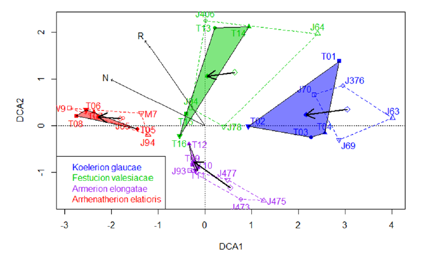
(aus Hüllbusch et al. 2016)
Einführung Constrained Ordinations
Bislang haben wir mit normalen (unconstrained) Ordinationen gearbeitet, was das gängige Verfahren für Datensätze aus allen Disziplinen ist. Hier wurde die Transformation des ursprünglichen n-dimensionalen Hyperraumes auf eine oder wenige Ordinationsebenen allein basierend auf den Informationen in unseren Variablen vorgenommen.
Im Fall von gemeinschaftsökologischen Daten sind unsere Variablen die einzelnen Arten (bzw. deren Häufigkeit in den einzelnen Gemeinschaften/Vegetationsaufnahmen). In diesem Fall interessiert uns aber oft primär, welche Umweltvariablen für das sich ergebende Ordinationsmuster hauptsächlich verantwortlich sind. Dafür können wir zwei Wege wählen:
Wir können post hoc die Umweltvariablen als Vektoren oder Response surfaces in das Ordinationsdiagramm plotten, das ohne sie gerechnet wurde (siehe voriges Kapitel).
Wir können die Umweltvariablen schon direkt bei der Berechnung der Ordination einbeziehen. Dann spricht man von einer „constrained” = „canonical” Ordination. Diese betrachtet nur den Anteil der Artverteilungsmuster, der durch die erhobenen Umweltvariablen erklärt werden kann.
Für die beiden wesentlichen besprochenen Ordinationsverfahren PCA (für lineare Beziehungen) und CA (für unimodale Beziehungen) gibt es jeweils eine unconstrained- und eine constrained-Variante:

Das Prinzip und der konzeptionelle Ablauf einer „constrained” Ordination sei am Beispiel eines gemeinschaftsökologischen Datensatzes kurz skizziert:
Man hat für jede Vegetationsaufnahme (o. ä.) zusätzlich zu den Artdaten (abhängige Variablen) ein Set von dort erhobenen Umweltvariablen (unabhängige Variablen).
Zunächst werden die Artmächtigkeiten der einzelnen Arten zu den betrachteten Umweltvariablen jeweils mit einer multiplen linearen Regression in Beziehung gesetzt.
Für die Ordination (PCA bzw. CA) werden dann statt der tatsächlichen Artmächtigkeiten die von der multiplen Regression vorhergesagten Artmächtigkeiten genommen
Man kann anschliessend ermitteln, wie viel der Gesamtvarianz durch die verwendeten Umweltvariablen erklärt wird
In R passiert all das automatisch, wenn wir in vegan z. B. den Befehl cca für Canonical Correspondence Analysis wählen:
s5 <- c("pH.peat","P.peat","Waterlev.av","CEC.peat","Acidity.peat")
ssit5 <- ssit[s5]
o.cca <- cca(sveg~. ,data=ssit5)
plot(o.cca)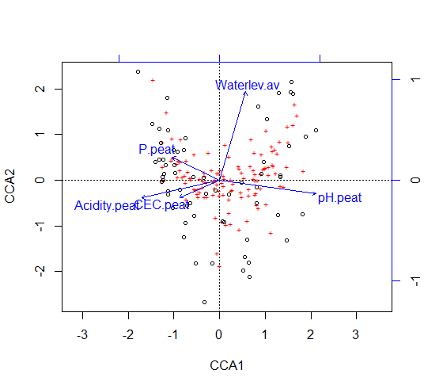
Redundancy Analysis (RDA) im Detail
Die Idee
Wir schauen uns nun die Redundanzanalyse (RDA) im Detail an, welche die „constrained”-Variante der Hauptkomponentenanalyse (PCA) ist (deswegen werden in vegan beide mit dem gleichen Befehl rda gerechnet, vgl. Statistik 6).
Eine RDA wird für Datensätze angewandt, in denen man zahlreiche Objekte (observations) mit jeweils vielen abhängigen und vielen unabhängigen Variablen hat und erklären will, welche von den unabhängigen Variablen für die multivariate Antwort verantwortlich sind.
Zwei typische Beispie sollen das Prinzip verdeutlichen, das natürlich auch in anderen Disziplinen auftreten kann (Die Tilde ~ wird hier in typischer R-Schreibweise genutzt, um die abhängigen Variablen links von den unabhängigen rechts zu trennen):
Zusammensetzung von Pflanzengesellschaften (Anteile von Arten in Probeflächen) ~ Umweltparameter in diesen Probeflächen
Politische Einstellungen von Menschen (z. B. als Beantwortung diverser Fragen auf einer Skala) ~ sozioökonomische Eigenschaften dieser Personen (z. B. Geschlecht, Alter, Bildung, Einkommen, Wohnort,…)
Notwendige Datentransformation für gemeinschaftsökologische Daten
Wir erinnern uns, dass in Statistik 5, von der Verwendung der PCA im Fall von gemeinschaftsökologischen Daten generell abgeraten wurde. Eine Hauptursache für die schlechte Eignung in diesen Fällen, ist dass die PCA (und damit auch die RDA) standardmässig mit der euklidischen Distanz zwischen zwei Objekten arbeitet, also der Länge der Gerade zwischen den beiden Objekten im multivariaten Raum (im zweidimensionalen Fall wäre das die Hypothenuse des rechtwinkligen Dreiecks, das durch die x/y-Koordinaten der beiden Beobachtungen gebildet wird; die Entfernung (= euklidische Distanz) berechnet sich dann einfach mit dem Satz des Pythagoras, analog auch für alle höheren Dimensionen). Für Daten von Artengemeinschaften (mit typischerweie vielen Nullwerten und unimodalen Verteilungen) ist die euklidische Distanz aber ungeeignet, da sie unerwünschte Artefakte (wie den diskutierten Hufeiseneffekt) erzeugt.
Dies haben Legendre & Gallagher (2001) schön mit einer Simulation gezeigt. Zugleich konnten sie zeigen, dass ein anderes Distanzmass, die Hellinger-Distanz diese Probleme in viel geringerem Umfang hat. Hier zunächst noch einmal die Definition der beiden Distanzmasse, mit x1, x2: Standort, j = 1… p: Arten, yi,j: Artmächtigkeit Art j an Standort i:
Euklidische Distanz:

Hellinger-Distanz:

Um das „Verhalten” dieser beiden Distanzmasse wurde ein Datensatz mit einem geografischen bzw. Umweltgradienten simuliert, entlang dem insgesamt neun Arten mit unimodalen Verteilungen (ungefähr Gauss’schen response curves) auftreten. Nach unserer Notation von Statistik 6 würden diese 19 Beobachtungspunkte (sites) zusammen einen Diversitätsgradienten von mehr als 8 SD-Einheiten repräsentieren (d.h. zwei vollständige Artenturnovers, vgl. die Kurven für Species 2 and Species 4). Wie man sieht, ist die Rangkorrelation zwischen Distanzmass und tatsächlicher geographischer Distand nach erfolgter Hellinger-Transformation viel besser (95 %), allerdings findet auch hier bei einer geografischen Distanz > 8 keine weitere Differenzierung statt, da die Artengemeinschaften dann keine gemeinsame Art mehr haben.
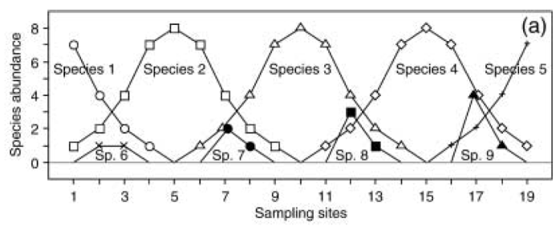


(aus Legendre & Gallagher 2001)
Die Schlussfolgerung ist, dass man mit der Hellinger-Distanz auch für gemeinschaftsökologische Daten RDAs (und PCAs) andwenden kann.
Ein Beispiel
Unser Beispiel stammt aus dem sehr empfehlenswerten Buch von Borcard et al. (2018), das insbesondere deskriptiv-multivariate Verfahren im Bereich der Ökologie umfangreich erklärt und dazu die R-Codes liefert:
Einer der Datensätze aus dem Buch beschreibt die Fischgemeinschaften an 30 Probestellen (sites) des Flusses Doubs im schweizerisch-französischen Grenzgebiet. An allen Probestellen wurden relative Abundanzen von 27 Fischarten (jeweils 0–5; dependent variables) und 11 Umweltvariablen (independent variables) erhoben. Die folgende Abbildung zeigt für vier häufige Arten die Vereilungsmuster in simplen R-genierten Kärtchen:

Generelles zum rda-Befehl
Hier seien kurz drei Syntax-Varianten des rda-Befehls im Package vegan vorgestellt:
simpleRDA <- rda (Y, X, W)Y = Antwort-Matrix
X = Matrix der erklärenden Variablen (nur numerisch)
W = Matrix der Co-Variablen (optional, für partielle RDAs)
formulaRDA <- rda (Y ~ var1 + factorA + var2*var3 + Condition(var4),
data = Xwdata)
Hier auch möglich
- Faktoren (d. h. kategoriale Variable)
- Interaktionen
spe.rda <- rda (spe.hel ~ ., env3)Kurzschreibweise
> bedeutet: alle Variablen aus dataframe env3
Interpretation der Ergebnisse
Wir schauen uns nun die Ergebnisse an, wenn wir die RDA mit Hellingertransformierten Arthäufigkeiten und allen 10 Umweltvariablen rechnen:
rda(formula = spe.hel ~ ele + slo + dis + pH + har + pho + nit + amm + oxy + bod, data = env3) Partitioning of variance:
Inertia Proportion
Total 0.5025 1.0000
Constrained 0.3654 0.7271
Unconstrained 0.1371 0.2729Wie wir sehen, enthält der erste Teil des Ergebnis-Outputs eine Varianzpartitionierung. Die Gesamtvarianz wird aufgeteilt in jenen Anteil der durch die Umweltvariablen erklärt wird (constrained) und die unerklärte Restvarianz (unconstrained). Der Wert entspricht R² in linearen Modellen, hat aber einen bias (s. u.).
Der Output geht wie folgt weiter:
Importance of components:
RDA1 RDA2 RDA3 RDA4 RDA5 RDA6
Eigenvalue 0.2281 0.0537 0.03212 0.02321 0.008699 0.007218
Proportion Explained 0.4539 0.1069 0.06392 0.04618 0.017311 0.014363
Cumulative Proportion 0.4539 0.5607 0.62466 0.67084 0.688155 0.702518
[…]
RDA12 PC1 PC2 PC3 PC4
Eigenvalue 0.0003405 0.04581 0.02814 0.01528 0.01399
Proportion Explained 0.0006776 0.09116 0.05601 0.03042 0.02784
Cumulative Proportion 0.7270922 0.81825 0.87425 0.90467 0.93251Wir sehen 12 RDA-Achsen (12 statt 10, da eine der Variablen ein Faktor war, der in drei dummy-Variablen zerlegt wurde). Die restliche Varianz findet sich dann auf den „unconstrained”-Achsen, die mit PC1, PC2 usw. benannt sind. Die Varianz auf diesen Achsen steht für nicht gemessene Variablen (oder auch Interkationen und unimodale Beziehungen dergemessenen Variablen).
Accumulated constrained eigenvalues
Importance of components:
RDA1 RDA2 RDA3 RDA4 RDA5 RDA6
Eigenvalue 0.2281 0.0537 0.03212 0.02321 0.008699 0.007218
Proportion Explained 0.6243 0.1470 0.08791 0.06351 0.023808 0.019755
Cumulative Proportion 0.6243 0.7712 0.85913 0.92264 0.946448 0.966202In diesem Fall erklärt die erste RDA-Achse schon ungewöhnlich hohe 62% der Gesamtvarianz, mit der zweiten Achse zusammen gar 77%. Der Output geht aber noch weiter…
Scaling 2 for species and site scores
* Species are scaled proportional to eigenvalues
* Sites are unscaled: weighted dispersion equal on all dimensions
* General scaling constant of scores: 1.93676
Species scores
RDA1 RDA2 RDA3 RDA4 RDA5 RDA6
Cogo 0.13386 0.11619 -0.238205 0.018531 0.043161 -0.029728
Satr 0.64240 0.06654 0.123649 0.181606 -0.009584 0.029785
Phph 0.47477 0.07009 -0.010153 -0.115349 -0.045312 -0.030034
Babl 0.36260 0.06966 0.041311 -0.190563 -0.046944 0.006446
Thth 0.13081 0.10707 -0.239273 0.043512 0.065818 0.003468
[…]Species scoressind die Koordinaten der Spitzen von Artvektoren in Bi- und Triplots. Es gibt zwei Scaling-Optionen, wobei Scaling 2 der default ist. Und es geht noch weiter:
Site scores (weighted sums of species scores)
RDA1 RDA2 RDA3 RDA4 RDA5 RDA6
1 0.40149 -0.154133 0.55506 1.601005 0.193044 0.916850
2 0.53522 -0.025131 0.43393 0.294832 -0.518997 0.458849
3 0.49429 -0.014617 0.49415 0.169258 -0.246061 0.163409
4 0.33451 0.001188 0.51644 -0.320793 0.089569 -0.219820Site scores sind die Koordinaten der Untersuchungsflächen im Raum der abhängigen Variablen Y (hier also der Arten).
Site constraints (linear combinations of constraining variables)
RDA1 RDA2 RDA3 RDA4 RDA5 RDA6
1 0.55130 0.002681 0.47744 0.626961 -0.210684 0.31503
2 0.29736 0.105880 0.64854 0.261364 -0.057127 0.09312
3 0.36843 -0.185333 0.59805 0.324556 -0.001611 0.31093
4 0.44346 -0.066361 0.33293 -0.344230 -0.279546 -0.37077Site constraints sind die Koordinaten der Untersuchungsflächen im Raum der Prädiktorvariablen X (hier also der Umweltvariablen).
Während dieser primäre Output schon sehr aufschlussreich war, gibt es noch weitere Dinge, die uns interessieren (sollten):
coef(spe.rda) RDA1 RDA2 RDA3
ele 0.0004483347 7.795777e-05 0.0005188756
slo.moderate -0.0123140760 -1.655649e-02 0.0160736225
slo.steep 0.0480170930 4.905556e-02 0.1023432587
slo.very_steep 0.0181630025 -5.708251e-02 0.2326204779
dis -0.0014041126 4.456720e-03 0.0089169975coef (spe.rda) sind die Regressionskoeffizienten der Variablen zu den Achsen.
\# Unadjusted R\^2 und Adjusted R\^2
(R2 <- RsquareAdj(spe.rda))$r.squared
[1] 0.7270922
$adj.r.squared
[1] 0.5224114Der originale (unadjusted) R² ist derselbe, den wir oben im Haupt-Output bekommen haben. R2-adjusted dagegen misst die erklärte Varianz ohne bias (bias resultiert daraus, dass bei vielen Variablen zwischen diesen auch rein zufällig Korrelationen auftreten).
Visualisierung der Ergebnisse
Da eine RDA ein statistisch komplexes Verfahren ist, gibt es auch nicht nur eine Art und Weise, die Ergebnisse zu visualisieren, sondern zwei, Scaling 1 und Scaling 2. Diese sind im Folgenden gezeigt und ihre Unterschiede stichpunktartig erklärt. Scaling 1 eignet sich meist besser für die Visualisierung von Objekten (sites) und Scaling 2 meist bessser für die Visualisierung von Antwortvariablen (species).
Distanz-Triplot (Scaling 1):
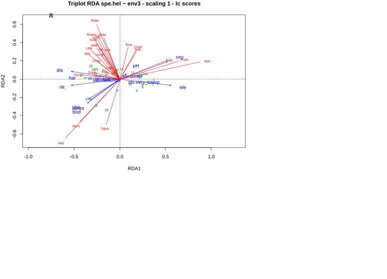
Winkel zwischen Antwort- und erklärenden Variablen entsprechen > deren Korrelationen (aber nicht jene zwischen Antwortvariablen)
Die Beziehung von Zentroiden qualitativer Variablen (Faktoren) und > Antwortvariablen ergibt sich aus der Projektion der Zentroide im > rechten Winkel auf die Anwortvariable.
Distanzen zwischen Zentroiden und zwischen individuellen > Objekten (sites) entsprechen ungefähr deren Distanzen im > multivariaten Raum.
Korrelations-Triplot (Scaling 2):

Die Projektion eines Objektes im rechten Winkel auf eine > Antwort- oder eine numerische Prädiktorvariable entspricht dessen > Wert entlang dieser Achse.
Winkel zwischen Antwort- und erklärenden Variablen wie auch > innerhalb beider Gruppen entsprechen deren Korrelationen
Die Beziehung eines Zentroids einer qualitativen Variablen und > der Antwortvariablen, ergibt sich aus seiner rechtwinkligen > Projektion auf letztere.
Distanzen zwischen Zentroiden und zwischen individuellen > Objekten (sites) entsprechen nicht deren Distanzen im > multivariaten Raum.
Signifikanz der Achsen
Eine RDA produziert immer viele Achsen, aber die entscheidende Frage ist, welche davon signifikant sind (eine Frage, die wir nur im Falle von constrained-Ordinationen stellen können, da diese im Gegensatz zu den rein deskriptiven unconstrained-Ordinationen eine inferenzstatistische Komponente haben). Da die Voraussetzungen parametrischer Tests in der Regel massiv verletzt sind, kann die Signifikanz nur mit Permutationen gestestet werden:
# Global test of the RDA result
anova(spe.rda, permutations = how(nperm = 999))Permutation test for rda under reduced model
Permutation: free
Number of permutations: 999
Model: rda(formula = spe.hel ~ ele + slo + dis + pH + har + pho + nit + amm + oxy + bod, data = env3)
Df Variance F Pr(>F)
Model 12 0.36537 3.5523 0.001 ***
Residual 16 0.13714# Tests of all canonical axes
anova(spe.rda, by = "axis", permutations = how(nperm = 999))Permutation test for rda under reduced model
Forward tests for axes
Permutation: free
Number of permutations: 999
Model: rda(formula = spe.hel ~ ele + slo + dis + pH + har + pho + nit + amm + oxy + bod, data = env3)
Df Variance F Pr(>F)
RDA1 1 0.228083 26.6105 0.001 ***
RDA2 1 0.053698 6.2649 0.004 **
RDA3 1 0.032119 3.7473 0.333
RDA4 1 0.023206 2.7074 0.775
RDA5 1 0.008699 1.0149 1.000 Wir sehen, dass in diesem Fall die ersten beiden Achsen (RDA1, RDA2) signifikant sind. Nur diese sollten abgebildet werden!
Partielle RDA und Varianzpartitionierung
Bei vielen Umweltvariablen können ggf. partielle RDAs aufschlussreich sein, die im Prinzip analog zu partiellen Regressionsplots (vgl. Statistik 3) funktionieren. Man kann dies für einzelne Variablen oder für Gruppen von Variablen machen. Zum Beispiel könnten wir fragen: Wie viel von der Zusammensetzung der Firschgemeinschaften erklärt die Wasserchemie, wenn man die topografischen Variablen konstant hält? Mit vegan geht das folgendermassen, einschliesslich Visualisierung in einem sogenannten Venn-Diagramm:
# Formula interface; X and W variables must be in the same
# data frame
(spechem.physio2 <-
rda(spe.hel ~ pH + har + pho + nit + amm + oxy + bod
+ Condition(ele + slo + dis), data = env2))
anova(spechem.physio2, permutations = how(nperm = 999))
anova(spechem.physio2, permutations = how(nperm = 999), by = "axis")
(spe.part.all <- varpart(spe.hel, envchem, envtopo))
# Plot of the partitioning results
dev.new(title = "Variation partitioning - all variables",
noRStudioGD = TRUE)
plot(spe.part.all, digits = 2, bg = c("red", "blue"),
Xnames = c("Chemistry", "Physiography"),
id.size = 0.7)
Das Venn-Diagramm visualisiert die Varianzaufteilung zwischen zwei (oder mehr Variablen oder Gruppen von Variablen). Hier erkären die chemischen Variablen 24 %, die pysiographischen (topographischen) 11 % jeweils unabhängig voneinander, wohingegen ein grosser Teil der Varianz (23 %) von beiden Variablengruppen gemeinsam erklärt wird (weil sie nicht völlig unkorreliert sind).
Zusammenfassung
Post-hoc gefittete Umweltvariablen dienen der nachträglichen Beschreibung der allein aufgrund der Artdaten gefundenen Ähnlichkeitsmuster.
«Constrained» Ordinationen (RDA, CCA) betrachten dagegen von vornherein nur den Anteil der Ähnlichkeitsmuster in der Artenmatrix, der sich (in linearen Modellen) durch die gemessenen Umweltvariablen erklären lässt.
Eine RDA kann nicht nur deskriptiv gebraucht werden, sondern man kann auch die Signifikanz von Achsen analysieren oder Varianz partitionieren.
Weiterführende Literatur
Borcard, D., Gillet, F. & Legendre, P. 2018. Numerical ecology with R. 2nd ed. Springer, Cham: 435 pp. [mit R]
Everitt, B. & Hothorn, T. 2011. An introduction to applied multivariate analysis with R. Springer, New York: 273 pp. [mit R]
Legendre, P. & Gallagher, E.D. 2001. Ecologically meaningful transformation for ordination of species data. Oecologia 129: 271–280.
Leyer, I. & Wesche, K. 2007. Multivariate Statistik in der Ökologie. Springer, Berlin: 221 pp. [einfache Erklärung von Ordinationsmethoden, ohne R]
McCune, B., Grace, J.B. & Urban, D.L. 2002. Analysis of ecological communities. MjM Software Design, Gleneden Beach, Oregon, US: 300 pp. [gut erklärte und detaillierte Einführung in Ordinationen u.a., ohne R]
Oksanen, L. 2015. Multivariate analysis of ecological communities in R: vegan tutorial. URL: http://cc.oulu.fi/~jarioksa/opetus/metodi/vegantutor.pdf. [gute Einführung in das R-package vegan mit vielen Ordinationsmethoden]
Wildi, O. 2017. Data analysis in vegetation ecology. 3rd ed. CABI, Wallingford, UK: 333 pp. [mit R]
Quellen des Beispiels
Hüllbusch, E., Brandt, L.M., Ende, P. & Dengler, J. 2016. Little vegetation change during two decades in a dry grassland complex in the Biosphere Reserve Schorfheide-Chorin (NE Germany). Tuexenia 36: 395−412.
Statistik 8: Clusteranalysen und Rückblick
In Statistik 8 lernen die Studierenden Clusteranalysen/Klassifikationen als eine den Ordinationen komplementäre Technik der deskriptiven Statistik multivariater Datensätze kennen. Es gibt Partitionierungen (ohne Hierarchie), divisive und agglomerative Clusteranalysen (die jeweils eine Hierarchie produzieren). Etwas genauer gehen wir auf die k-means Clusteranalyse (eine Partitionierung) und eine Reihe von agglomerativen Clusterverfahren ein. Hierbei hat das gewählte Distanzmass und der Modus für die sukzessive Fusion von Clustern einen grossen Einfluss auf das Endergebnis. Wir besprechen ferner, wie man die Ergebnisse von Clusteranalysen adäquat visualisieren und mit anderen statistischen Prozeduren kombinieren kann.
Im Abschluss von Statistik 8 werden wir dann die an den acht Statistiktagen behandelten Verfahren noch einmal rückblickend betrachten und thematisieren, welches Verfahren wann gewählt werden sollte. Ebenfalls ist Platz, um den adäquaten Ablauf statistischer Analysen vom Einlesen der Daten bis zur Verschriftlichung der Ergebnisse, einschliesslich der verschiedenen zu treffenden Entscheidungen, zu thematisieren.
Lernziele
Ihr…
habt eine prinzipielle Idee, wie Cluster-Analysen funktionieren;
könnt k-means clustering auf Datensätze anwenden; und
kennt unterschiedliche Methoden der agglomerativen Clusteranalyse sowie der Bewertung von ihren Ergebnissen und könnt ihre jeweilige Eignung grob einschätzen.
Clusteranalysen allgemein
Wie Ordinationen (Statistik 6 und 7) gehören Clusteranalysen zu den multivariat-deskriptiven Methoden. Wozu macht man dann Clusteranalysen?
Clusteranalysen sind komplementär zu Ordinationen: Bei Clusteranalysen liegt der Fokus auf den Unterschieden, während bei der Ordination der Fokus auf dem allmählichen Wandel entlang von Gradienten liegt. Insofern sind Ordinationen und Clusteranalysen Methoden, die für die gleichen Datensätze und z. T. ähnliche Fragestellungen angewendet werden können, aber mit Betonung unterschiedlicher Aspekte. Oftmals werden in einer Studie sogar beide Verfahren angewandt.
Prinzipiell geht es bei Clusteranalysen um das Herausarbeiten von Gruppen von Objekten mit ähnlichen Eigenschaften, z. B.:
um diese zu beschreiben,
um diese auf Unterschiede zu testen oder
um deren Verbreitung in Karten darstellen zu können.
Es gibt drei grundlegende Typen von Clusteranalysen, jeweils mit mehreren Methoden:
Partitionierung (ohne Hierarchie)
Hierarchische Clusteranalyse
divisiv (der Gesamtdatensatz wird sukzessive in immer feinere Gruppen aufgeteilt)
agglomerativ (beginnend mit den Einzelbeobachtungen werden diese immer weiter zu Gruppen zusammengefasst)
Im Kurs behandeln wir nur die Partitionierung und verschiedene agglomerative Clusterferfahren. Ein divisives Clusterverfahren wäre z. B. TWINSPAN (Hill 1979; Roleček et al. 2009), welches in der Vegetationsökologie viel verwendet wird, m. W. nicht in R implementiert ist, dafür unter anderem im Freeware-Programm JUICE (Tichý 2002).
k-means clustering
Das k-means clustering ist die einfachste Clustermethode überhaupt. Ihre Kernaspekte lassen sich wie folgt beschreiben:
Partitionierung (ohne Hierarchie) in vom Benutzer vorgegebene k Cluster.
Verfahren versucht die Summe der quadratische Abweichungen vom den Clusterzentren (Zentroide) zu minimieren.
In der Tendenz entstehen ± sphärische Cluster ähnlicher Grösse (sphärisch meint kugelförmig/isodiametrisch, aber eben nicht im dreidimensionalen, sondern im vieldimensionalen Variablenraum).
Da das Ganze mit einem iterativen Optimierungsalgorithmus passiert, der mit zufällig gewählten Startpunkten beginnt, unterscheiden sich unterschiedliche Durchläufe im Ergebnis.
Die Durchführung des k-means clustering eines multivariaten Datensatzes geschieht mit dem Befehl kmeans aus Base R, hier angewandt auf unseren Moordatensatz, den wir schon von den Ordinationen kennen:
kmeans.2 <- kmeans(sveg, 3)Wie sehen unsere drei Cluster nun aus? Am besten plotten wir sie in das Ordinationsdiagramm, indem wir die Beobachtungen je nach Clusterzugehörigkeit einfärben:
plot(pca, type = "n")
points(pca, display = "sites", pch=19, col=kmeans.2[[1]])
Wie viele Cluster sollte man nun unterscheiden? Oftmals ergibt sich die Zahl (oder zumindest eine Grössenordnung) aus dem Zweck, für den man die Clusteranalyse macht. Es gibt auch unterschiedliche numerische Kriterien, um die „beste” Partitionierung zu finden (allerdings liefern verschieden Gütemasse unterschiedliche Ergebnisse).
Ein Gütemass ist SSI = Simple Structure Index. Der SSI kombiniert drei Aspekte von Cluster-Güte: (a) maximale Differenz aller Variablen zwischen den Clustern, (b) Grössen der einzelnen Clustern und (c) Abweichung der Variablenwerte in den Clusterzentren vom Gesamtmittel. Der SSI reicht von 0 bis 1 und eine Partitionierung ist umso besser, je höher der Wert ist.
Wenn wir mit einem kurzen R-Code (wird in der Demo gezeigt) für unseren Moordatensatz die Partitionen von k = 2 bis 10 ausrechnen und jeweils den SSI berechnen, ergibt sich das folgende Bild:
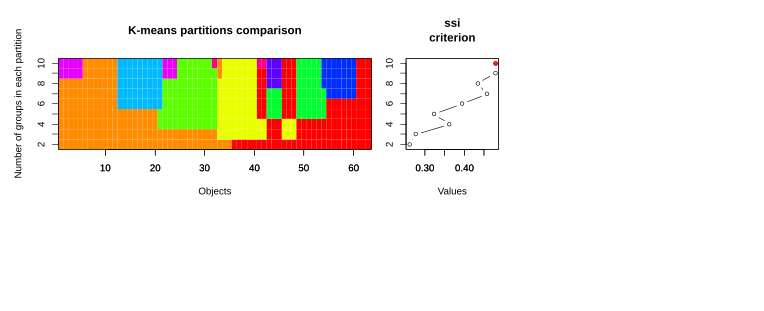
Die farbige Visualisierung links zeigt, dass es eben keine hierarchische Clusteranalyse ist. Bei k > 2 bleibt die ursprüngliche Abgrenzung der zwei Hauptcluster nicht erhalten. Gemäss SSI wäre in diesem Fall die 10-Cluster-Lösung die beste (es sei aber empfohlen, solchen numerischen „Empfehlungen” nicht blindlings zu glauben).
Agglomerative Clusterverfahren
Einführung
Bei agglomerativen Clusterverfahren folgt der Algorithmus immer dem folgenden Ablauf:
Sie fassen die beiden ähnlichsten Beobachtungen als initiales Cluster zusammen.
Danach geht es mit dem Zusammenfassen des nächstähnlichen Paares von Einzelbeobachtungen bzw. Clustern so lange weiter, bis alle Cluster zu einem einzigen zusammengefasst sind.
Es gibt deswegen so viele verschiedene agglomerative Clusterverfahren, da man zwei wesentliche Parameter im Prinzip frei kombinieren kann, das verwendete Distanzmass und den Modus für das Zusammenfügen von Clustern:
An Distanzmassen sind die folgenden beiden die gängigsten:
Euklidische (pythagoreische) Distanz: Länge der Gerade, die die beiden Punkte im multidimensionalen Hyperraum miteinander verbindet.
Chord-Distanz: euklidische Distanz, nachdem alle Variablen auf Länge 1 standardisiert wurden.
Die vier gängigsten Modi für das Zusammenfassen von Clustern sind:
Single linkage (nearest neighbour): Distanz zum nächsten Element eines Clusters wird genommen.
Complete linkage (furthest neighbour): Distanz zum am weitesten entfernten Element eines Clusters wird genommen.
Average linkage (4 verschiedene Methoden, darunter besonders gängig UPGMA = unweighted pair-group method using arithmetic averages): Distanz zum Cluster”zentrum” wird genommen.
Ward’s mimimum variance clustering: Statt Distanzen zwischen Clustermitgliedern zu minimieren, wird hier die Clustervariabilität minimiert.
Schauen wir uns an, welchen Effekt die vier Verfahren kombiniert mit der Chord-Distanz auf die Fischgemeinschaftsdaten des Doubs-Datensatzes haben:
 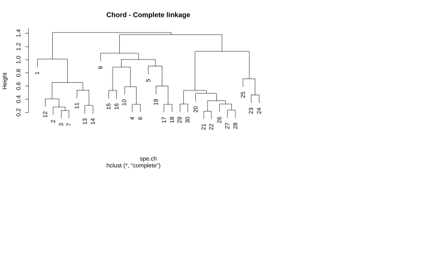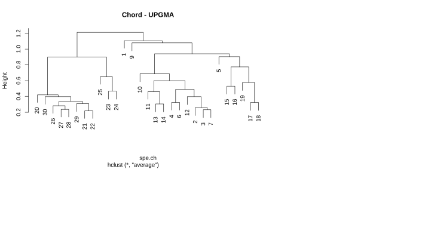
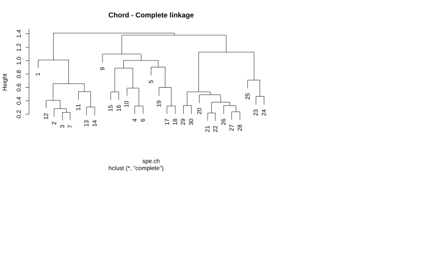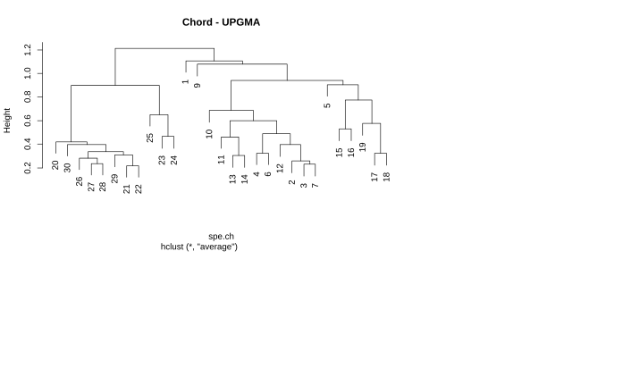
Es zeigt sich, dass die Cluster doch sehr unterschiedlich aussehen können. Die terminalen Cluster sind oft identisch (ein Cluster aus den Probestellen 17 und 18 gibt es etwas bei allen vier Methoden), doch auf höherer Ebene gibt es gravierende Unterschiede. Diese äussern sich insbesondere in der Anfälligkeit gegenüber Kettenbildung (Chaining), was meint, dass eine Aufnahme allen anderen gegenübergesellt wird und in diesem grossen Cluster im nächsten Schritt wieder eine einzige einzige Aufnahme dem Rest herausgegriffen usw. Single linkage ist methodenbedingt besonders anfällig für Chaining (siehe links oben). Da für die meisten Anwendungen solche Ein- Aufnahmen-Cluster unpraktisch sind, wird single linkage kaum noch verwendet. Complete linkage und UPGMA neigen weniger zu Chaining und die Ward-Methode am wenigsten.
Güte von Clusterungen
Nun ist zwar Chaining unpraktisch, aber was, wenn es doch die realen Ähnlichkeitsbeziehungen am besten wiedergeben würde? Ein gutes Mass für die Güte eines Clusterergebnisses ist die Cophenetische Korrelation. Hier werden die Clusterpositionen in paarweise Distanzen zwischen Beobachtungen übersetzt und mit den ursprünglichen Distanzen verglichen (vergleichbar dem Stressplot im Falle einer NMDS-Ordination, vgl. Statistik 6). Schauen wir uns das Ergebnis für die vier Beispiele von oben an:

Auch hier schneidet single linkage am schlechtesten ab. Wie meist, sind UPGMA und Ward am besten, wobei hier UPGMA sogar besser als Ward abschneidet.
Wie viele Cluster sollte man unterscheiden?
Wie schon bei der k-means-Partitionierung stellt sich auch beim hierarchischen Clustering die Frage nach der optimalen Zahl von unterschiedenen Clustern. Vielfach ergibt sich die Antwort darauf zumindest grössenordnungsmässig aus der geplanten Verwendung der Cluster. Es gibt auch verschiedene mathematische Gütemasse, u. a. Silhouette, Matrix-Korrelation und Indikatorarten:
Sihouette: mittlere Distanz eines Objektes zu allen Objekten eines Clusters zur mittleren Distanz zu allen Objekten des nächstähnlichen Clusters. Die Werte reichen von –1 bis +1.
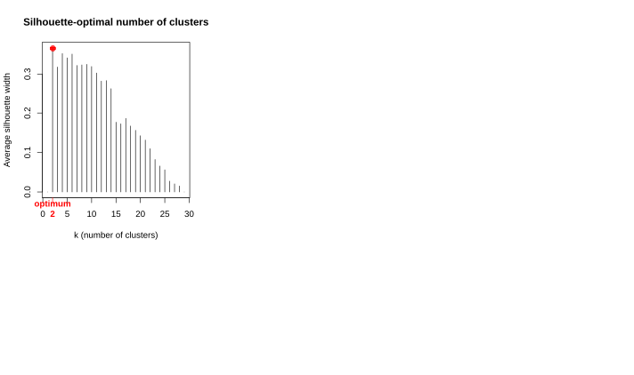
Matrix-Korrelation: Vergleich der originalen Unähnlichkeitsmatrix mit der binären Matrix basierend auf der Gruppenzusammengehörigkeit im Dendrogramm.
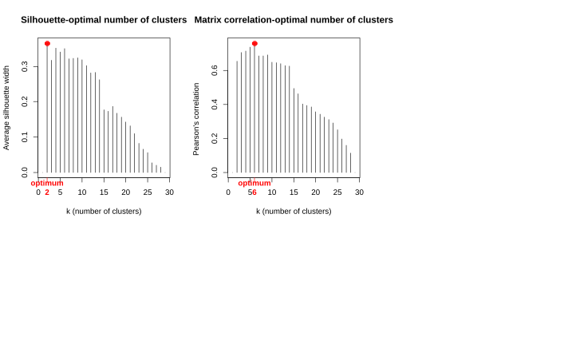
Indikatorarten: Anzahl von Indikatorarten (links) bzw. Anteil von Clustern mit signifikanten Indikatorarten (rechts) (hier basierend auf dem IndVal-Konzept; siehe Borcard et al. 2018). Dieser Ansatz funktioniert natürlich nur, wenn es sich um Daten von Artengemeinschaften handelt.

Charakterisierung von Clustern
Wie schon bei k-means können wir die Cluster dadurch charakterisieren, dass wir die Clusterzugehörigkeit in ein einfaches oder Biplot-Ordinationsdiagramm plotten. Weitere Möglichkeiten der Beschreibung/Charakterisierung von Clustern sind u. a. (jeweils visualisiert für die 4-Cluster-Lösung des Doubs-Datensatzes):
- Einfärbung im Dendrogramm (den R-Code dazu gibt es im Demoskript):
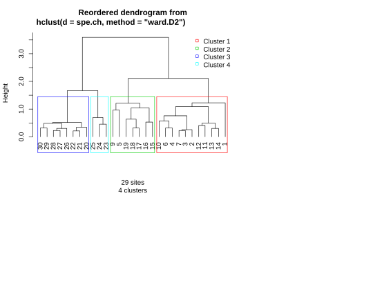
- Geordnete Community-Tabelle (im Fall von von gemeinschaftsökologischen Daten), ggf. mit Hervorhebung der signifikant konzentrierten Arten:
32222222222 111111 1111
09876210543959876506473221341
Icme 5432121......................
Abbr 54332431.....1...............
Blbj 54542432.1...1...............
Anan 54432222.....111.............
Gyce 5555443212...11..............
Scer 522112221...21...............
Cyca 53421321.....1111............
Rham 55432333.....221.............
Legi 35432322.1...1111............
Alal 55555555352..322.............
Chna 12111322.1...211.............
Titi 53453444...1321111.21........
Ruru 55554555121455221..1.........
Albi 53111123.....2341............
Baba 35342544.....23322.........1.
Eslu 453423321...41111..12.1....1.
Gogo 5544355421..242122111......1.
Pefl 54211432....41321..12........
Pato 2211.222.....3344............
Sqce 3443242312152132232211..11.1.
Lele 332213221...52235321.1.......
Babl .1111112...32534554555534124.
Teso .1...........11254........23.
Phph .1....11...13334344454544455.
Cogo ..............1123......2123.
Satr .1..........2.123413455553553
Thth .1............11.2......2134.
sites species
29 27 - Vergleich der (Umwelt-)Variablen zwischen den Clustern mittels ANOVA.
Zusammenfassung
k-means clustering ist eine einfache nicht-hierarchische Clustermethode, bei der der Benutzer vorgibt, wie viele Einheiten er haben möchte.
Agglomerative Clusterverfahren fassen Einheiten sukzessive über ihre Ähnlichkeitsbeziehungen zusammen. Am Ende kann man dann subjektiv oder nach unterschiedlichen numerischen Kriterien entscheiden, welche Clusterauflösung dem Bedarf am besten entspricht.
Weiterführende Literatur
Borcard, D., Gillet, F. & Legendre, P. 2018. Numerical ecology with R. 2nd ed. Springer, Cham: 435 pp. [mit R]
Crawley, M.J. 2013. The R book. 2nd ed. John Wiley & Sons, Chichester, UK: 1051 pp. [mit R]
Everitt, B. & Hothorn, T. 2011. An introduction to applied multivariate analysis with R. Springer, New York: 273 pp. [mit R]
Hill, M.O. 1979. TWINSPAN – A FORTRAN program for arranging multivariate data in an ordered two-way table by classification of the individuals and attributes. Cornell University, Ithaca, NY: 90 pp.
Roleček, J., Tichý, L., Zelený, D. & Chytrý, M. 2009. Modified TWINSPAN classification in which the hierarchy represents cluster heterogeneity. Journal of Vegetation Science 20: 596–602.
Tichý, L. 2002. JUICE, software for vegetation classification. Journal of Vegetation Science 13: 451–453.
Wildi, O. 2017. Data analysis in vegetation ecology. 3rd ed. CABI, Wallingford, UK: 333 pp. [mit R]
Anhang: Übersicht über statistische Verfahren